In Burning Bridges
The Senior Year begins, and there is a new student. Everyone that went to the UPD in the previous chapter is tired. And also, Mr Lopez left. Very sad for the Math HL class.
The school has also made many remodelations, there was a Math class that was destroyed and replaced with some offices, Valentina Manzo, Mr Turner, and Mr Amaral offices where destroyed, moved upstairs. The final change is that the elementary wing is getting an expansion, new classes and bathrooms.
There are also plans to remodel the whole cafeteria. They want to create a flexpace above the cafeteria, but this has not been done or started yet.
Welcome
And from last chapter, some people are leaving, not students though
Farewell-
Kimberly Coyle, one of the best, most exciting, and cool English teachers.
"Go out into the world, do good deeds, think great thoughts and be the best versions of yourself" -Coyle
Kimberly Coyle was the StuCo Supervisor, and thus she has been replaced by Javi, someone who is very school spirited and has great ideas aswell. He is the computer science teacher. Here is the event by the way,
-
Mathias Lopez, one of the best, most talented, and funniest math teachers.
"If you take a foto of me, either you disappear the foto or I disappear you"-Lopez
-
Date:03/08/2023
Climate:Cold
Location:Salma's and Uruguayan American School
Fabri is awake, he has been awake ever since everyone else went to sleep. Then alarms start to sound, all of them at the same time, Bruno and Sofe also wake up immediately. Everyone starts to wake up, Sofe and Bruno go to Sofe's house.
They all go into the main building, and they talk there while Salma prepares. Timo tunes the guitar in the living room. Then, Chiara and Salma arrive, and everyone goes to the bus, which for some reason smells like Chlorine. But before that they take a picture

The Last First Day squad
They then arrive at Mc Donalds, where some people actually eat stuff and other people don't. Dani, Timo, Luca, and Lupi contemplate the possibility of there being an english test about the new book. "All my Sons". Timo rapidly summarises the plot, while Lupi is lamenting not having done the homework for english.
Then they go back to the Bus and arrive to school. They walk inside and the staff give them pins and laptop stickers. When everyone arrives at English class, everyone sighs of relief because Maria is there instead of Moskovicks. Everyone sits down and Alex acknowledges that "Everything is the same" since everyone sat on the same regular places. Maria then reveals that Moskovicks had an accident and broke the right side of the collarbone, so she won't be able to come this day or for the next week. Immediately after she leaves, Lupi makes an observation, "God is Good", since he didn't do the english homework and Moskovicks would have murdered him. Lupi also says he would beat Mati at swimming
Lupi complains about his whole schedule being changed because Mr Lopez left so all math classes can no longer be at the same time. Maria also informs everyone about the new math teacher Emiliano.
Then they go to an assembly where new teachers are introduced. Michelle werlin left, and the new college counselor is called Kemal Taskin, and he is a very helful person. They anounced that the class would not go to Cabo Polonio, and everyone was mad, the OEE would instead take place in penitente. In recess, the ping pong players play ping pong.

The Assembly screen informs about SAAC events
For Digital Society, everyone is sent to the library because Javi is occupied. In the library, Bruno tries to get a croissant. And Alex is there trying to study for a big math test he has tomorrow.
Mr Dingley came, he noticed that there were three musicians there, who were Dani, Timo, and Bruno. Then he leaves. Then Bruno gets a medialuna. Then they talk about how Dingley is the only Brit that Dani respects and how he doesn't like Mr Williams. Then they start roasting porteños and how they suck.
In Math, Mr Zarsky anounces everything that they are going to learn about. They will learn calculus, and they will learn about voronoi diagrams which the HL class does not learn about. Fede really wanted to learn about voronoi diagrams and he plans to attend one of Zarsky's class

The plan for Math AI
Advisory has vanished, now instead there are 10 minutes at the end of each day where the students can discuss any random things they want, this time is called homeroom. In today's homeroom they simply introduced how this was going to work. Basically, the class has to homeroom groups, one homeroom is with Sylvia(Spanish Literature Teacher) and anothe homeroom is with Mr Williams(Physics Teacher), on wednesdays everyone goes to Sylvia's homeroom for Tasking to talk to everyone about college, also everyone might go to Sylvia's homeroom if someone has something to anounce to the entire class. The class of 2024 has the Homeroom teachers fo Sylvia Caballero the spanish teacher and Haydn Williams the Physics teacher. They also give everyone the locker combinations, which no one will probably use.
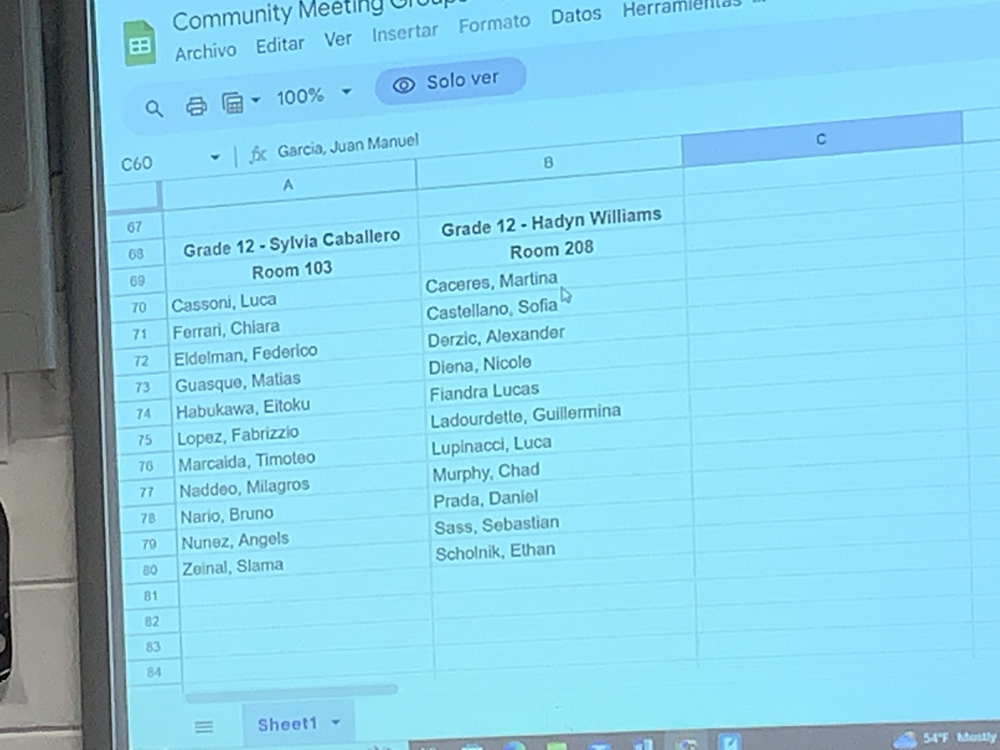The Advisory classes
NoteAccording to Sylvia, Santino has failed classes, and thus he will not be joining the class of 2024 for her senior year. Very sad.
-
Date:04/08/2023
Climate:Cold and Sunny
Location:Uruguayan American School
The ToK class has their introduction to how everything is going to work. Now the ToK class is downstairs in the fishbowl room. Turner talks about how comfortableness (he calls it fluff) makes humans weak, and how humans are Resiliency Making Machines.
In lunch, there is pizza today.
In chemistry, they look at the old tests and they
In physics, Williams introduces the class, he says that the next year will have easier tests, and everyone is really sad about that. THen they all choose their physics IA topics. Martina is very interested in Atomic bombs because of Oppenheimer, which is funny because the main reason she started taking physics was because of the movie "Interstellar" which was also by Christopher Nolan. And she said she was going to blow up the school.
At the 10 minute hometime "Homeroom Time", Timo brought up the OEE issue, since everyone in the class wanted to go to Cabo Polonio and not Salto del Penitente. The Amaral was also there, and he mentioned the group 4 project, in which a student from every class had t create a science related escape room to
Sebas has been considering dropping out of Physics HL for quite a while now, this is because his secret reason is no longer valid. Timo obviously didn't want him to leave, but Sebs left anyways. Sebas was already taking 4 HLs with Spanish B HL so he could leave physics without any problem. Ethan, Timo, Dani, And Alex remain in physics HL
-
Date:07/08/2023
Climate:Sunny with a little bit of clouds but still very cold
Location:Uruguayan American School
Timo is sick so he couldn's come.
At breaktime, Chiara burns a cookie in the microwave. I don't have further intel as to what the hell she was trying to do. But Martina posts it in her instagram story.
Later that day, Bruno stays up to 4 AM drinking Mate and making music.
-
Date:8/8/2023
Climate:Sunny and Cloudy
Location:Uruguayan American School
In English class, Alex and Chad create a chess club, Martina, Timo, Dani, and Lupi join it. Here is everyone's jobs.
Person Title Alex Co-Founder Chad Co-Founder Lupi (BP) Big papa Martina COO (I don't know what that means) Timoteo CAS (Chief Administrative Supervisor) Sebas CTO (no clue) Eitoku HRP (Human Resources Personelle) At lunch, Bruno shows Ethan the music he had been making today at 4 AM, Bruno slept a total of 1 hour,
Ethan decides he can't take it anymore. He believes Mr Williams is not that good at teaching and thus it's not beneficial for him to keep taking Physics HL. Ethan is now taking Spanish HL so he must do the Spanish HL essay, he also got a tutor for physics. Alex, Dani, and Timo remain... and these are the ones that take the physics HL exam.
At the homeroom time, Sylvia gives a talk about how everyone should be getting enouph sleep, and how people shouldn't be drinking Mate, Coffee, or any type of stimulant drug when it's close to bed time. Bruno the night before had drank a lot of Mate and he slept practically nothing.
Important NoteAlso, Santino apparently catched up and he will be able to be in the senior year.
Later that day, Nicole makes everyone pick designs for the Senior sweaters.
-
Date:09/08/2023
Climate:Sunny
Location:Uruguayan American School
Bruno goes to get his drivers license at the morning.
Nicole makes the entire class decide between two sweaters, she does a poll and this sweater is the chosen one.
 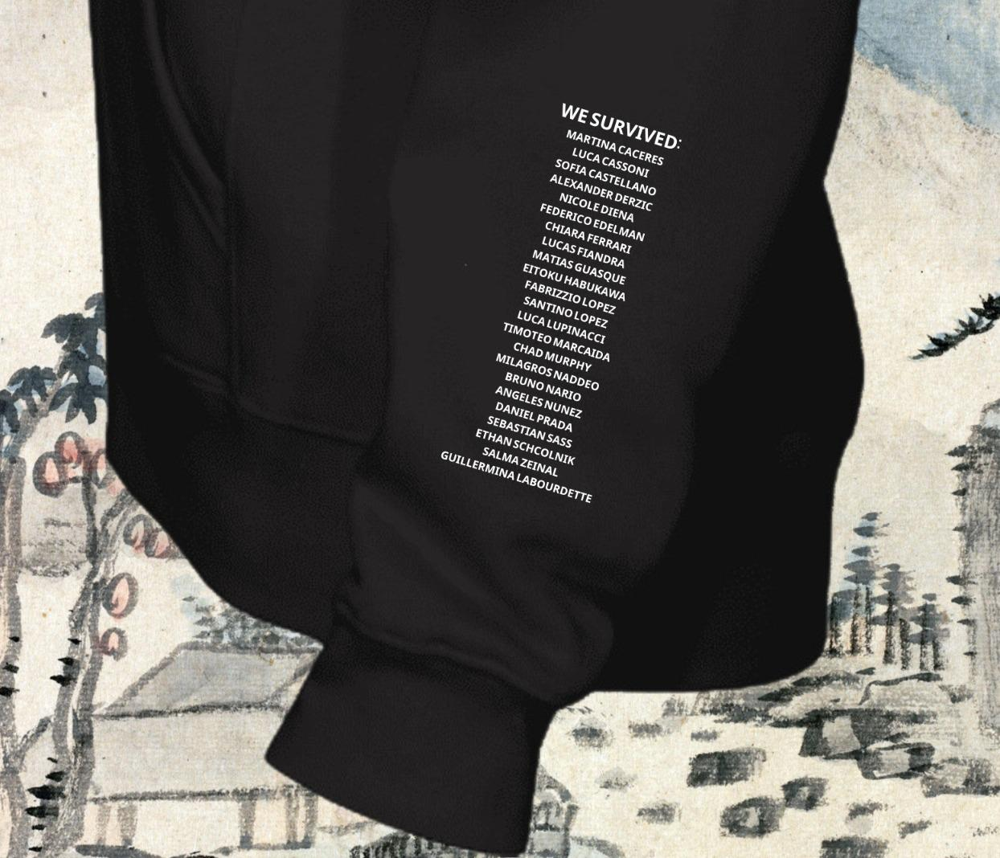
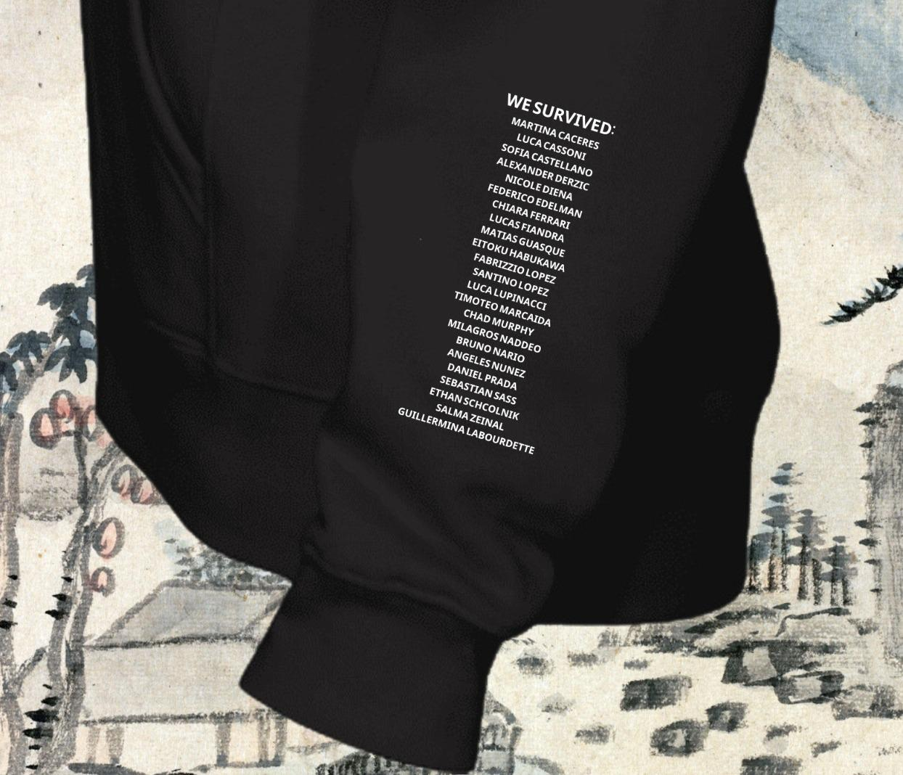

The Chosen Sweater
Martina considers going back to Physics HL because she does not want to do Hl Economics.
In homeroom time, Mr Tasking comes to class, many people have gone to see Mr Taksing throughout the week, he appears to be a very helpful and resourcefull person who knows a lot about university, so everyone likes to go to him, unlike what happened with werlin. He already saw some students, among them Alex and Milagros.
This day is the first volleyball class. They play matches, there is a new teacher for the female team. She is kind of strange and many don't like her. Everyone plays matches and after that, they all play all play a game called "rey de la cancha". Chiara joined this volleyball practice, she said that if she liked it she would kee going. Sofe and Martina also joined.
Later on, Bruno drives around
Bruno driving his car and drinking mate close to his bedtime (Despite Silvia Caballero's advise yesterday)
-
Date:10/08/2023
Climate:Cloudy and slightly cold
Location:Uruguayan American School.
Milagros brings a test sweater which is size L. Everyone uses it to determine their sizes.
The Outdoor Educational Experience Guides have been chosen, and they are revealed in the Digital Society class.
THe Guides-
Javier:The Digital Society teacher
-
Sylvia:The Spanish A teacher
-
Dominica:The art teacher
People don't like Sylvia being there and they prefer to change her for Turner.
StuCo has their first meeting, they discuss the overall plan. They will implement a point system where classes can exchange points for prizes. It is the first StuCo reunion with Javi in it.
Later that day, this people went to babysit for the Elementary Back to School Night. These are the people that attended.
- Angie
- Mati
- Salma
- Lupi
- Timo
- Fabri
They made 200 dollars. They all got really exhausted from playing with the kids, specially Santino. There were a lot of kids, which makes sense because it is the elementary back to school night.
-
-
Date:11/08/2023
Climate:Sunny but Cold
Location:Uruguayan American School
Mr Zarsky is not here, so Mr Turner teaches the Math class, and he talks to Martina, Angie, Salma, and Chiara about art, the united states, argentina, grades, and many other things. Everyone in the grade succesfully paid for the sweaters.
In the fourth period, the Harvard Krokodiloese (Oldest acapella group in Harvard) played several musical numbers for the school. The singing was really good, and one of them kinda looked like Bruno. Their show was funny and also entretaining. After it ended, some girls went to take pictures with them. Milagros said she had fallen in love with one of them who did molecular and celular biology.

The Krokodiloes and the Girls (Photo obtained via Martina's story)
After that, everyone had their homeroom time, the homerooms are divided in between 2. The Sylvia Caballero Homeroom has
- Milagros
- Bruno
- Chiara
- Mati
- Salma
- Timo
- San
- Lucas
And in Mr William's class it's
- Dani
- Martina
- Lupi
- Guille
In Sylvia's class, they talked about the Harvard Acapella Kroks and how Mili fell in love with one of them. Mili insisted that she was not on their level but Sylvia counters saying "We are all human"
In Williams class, they played some trivia game where one question was "What does a geiger counter measure" and he knew it was radiation because of some video game he played. Dani's team only won by one point, meaning that had he not answered that question, they would not have won. So Dani was really proud.
Timo later that day goes to visit Constan, his oldest friend. It was brief, they catched up, played ping pong, and then Timo had to leave.
-
Date: 12/08/2023
Climate:Sunny but Cold
Location:Dynamic, Mostly Bruno's Car
Mono does an asado to celebrate his birthday, but there are many peope that he didn't invite. I don't know who came, but I know Dani attended the asado.
Bruno decides for a ride, and by everyone the The Purple Gang. Bruno went to get Sofe first, after that he for Ale, and then he went for Timo. There was loud music in the car constantly, and they started playing free while Bruno committed speeding on his way to Ethan's house.
Bruno driving while listening to rock
They also passed a cafe that Timo knew of, and he said they should go there after they pick Ethan, the cafe was called "Selva". But there was an extremely long line in a crossing lane which Bruno had to endure. Bruno's driving was jokingly reckless.
They passed besides the Ritual Fields next to the Latahona neighborhood where Ethan was in. They arrived to Ethan's house, and Ethan gave them a house tour. And after that they headed towards the Selva cafe.
Ethan's chess set
They went to see some books that were in the cafe, there were books of film, of magic, and of psychology that were really interesting.
.jpg)
Ethan and ALe at the Library section.
After that, they went to order some food while Timo made an anouncement of StuCo for Back to School Night babysitting, a bake sale, and a movie night. They ate a red velvet cake aswell as some coffee, and then they went off once again in the Nario-movil and they went to arocena. They pass through Lucas Finadra's house, but he doesn't reply to the phone, so they leave. Lucas had an asado today.
They saw a house that Sofe was interested in, and they went to La Plaza de la Armada. Bruno almost crashes into some biker. Timo was hungry so they decided to go to McDonalds and order something. But for some reason, Timo's order got separated from Ethan and Ale's, so the girl at the drive through was confused when Ale gave her 2 tickets for the 2 orders. And then another girl tried to help her, and then some men in gray shirts, and then there was an entire croud of people there trying to figure out what had happened.
.jpg)
Night car adventures.
This was really funny to everyone except Sofe, she told the others to tell the girl that there were 2 seperate orders for the same car. Timo got ignored, so Bruno put his head out and called for attention. Eventually the situation got resolved and everyone found their food but Sofe was really mad that they made a whole mess out of something that simple. Ethan remarked how Timo is always followed by chaos.
Sofe kept scolding the everyone but Bruno about the situation, she was really stressed about it while everyone else didn't see it as such a big deal. Timo wanted to eat his burger outside, so Bruno stoped the car in the park, and Timo went out alone to eat his burger, no one wanted to acompany him because it was too cold. He went to a slide that had police tape on it, and he also swung in the swings while he was talking to Bruno and the others through his phone. Bruno and the others were spectating Timo's actions, and making sure he was safe, unfortunately Timo dropped all his fries due to the wind, it was really sad.
By this time, it was already nightime, and it was getting late, so Bruno dropped Timo and Ethan at McDonalds of Portones, and he also drove Sofe and Ale to their respective homes.
Timo had a his wallet in his pocket, but the pocket had a hole, so he lost the wallet, but he found it quickly. After that theytalked about the state of the class, about vacations, and about Sofe being annoying with the McDonalds situation.
Eventually Ethan left, and Timo walked around to and found Angie, Tania, and Salma who were going to watch Oppenheimer. Timo told them about Bruno's driving skills until he had to leave.
-
Date:14/08/2023
Climate:Sunny and not that cold
Location:Uruguayan American School
Study Hall Time. Martina has to choose a Physics IA topic, she thinks about doing the relationship between tension and pitch in a guitar string but she can't find a way to measure tension.
Dani works on Physics Notes and Chad works on Math.
The A ToK class starts The Mathematics Area of Knowledge. They go out into the playground to look for math in nature. They see a fruit, and they break the fruit, and the fruit has a sticky white liquid, and santino throws the fruit at Lucas.
In Sylvia's Homeroom, Amaral gives a speach about how he is planning on interviewing everyone on their stuff about their colleges and their plans for the future.
-
Date:15/08/2023
Climate:Sunny and less cold
Location:Uruguayan American School
In English class, everyone gets their senior hoodie, it's kind of bland, dichromatic, black and white. But it has everyone's names on it aswell as the name of the school, and the word "senior" in the back.
The Hoodies arrived
Sofe is dying, and so is Ethan, so they aren't coming.
In period 3B, the lights go out, also Zarsky isn't here. Mr Williams is there instead, and Martina attempts to figure out what she is going to do for her Physics Internal Assesment while the rest of the class does nothing productive for 1 hour and 30 minutes.
In Spanish, there is still no light, so the class reads Die Verwandlung, The Metamorphosis, or La Metamorfosis. And in homeroom time, they all get informed that the OEE won't be in Cabo POlonio, and it will be in a very similar place, but with more limited activies.
-
Date:16/08/2023
Climate:Kind of cloudy and cold
Location:Uruguayan American School
In physics class, everyone works on some heat capacity and latent heat questions while Williams pulls out reandom people to talkt to them about the physics IA's. Timo and Sebas have a very similar IA.
They also reveal all the groups for the group 4 project.

The group 4 groups
In the homeroom, everyone asks for more IA Time, they want IA days were they solely focus on the IA.
Later in the day, it rains a lot, like, a lot. A yellow sky, later filled with thunder at night.
The Rain (Recorded by Martina)
-
Back to School Night
Date:17/08/2023
Climate:Rainy and Thundery
Location:Uruguayan American School
Mosckovicks still hasn't arrived, which is good for Alex, Sebas, Chad, and Timo who haven't started the presentation that they had to finish this lesson. Many people didn't come because the rain was too powerful. The power was out, so Santino couldn't get his car out of the garage, Chiara's mom didn't let her go, neither did Timo's mom. Nikki and Angie decided not to come aswell.
But then Timo came half-way through the English class. They talked a bit about the presentation until they realised there was no way they were finishing it, so Alex said that he would have everyone come over to his house on the weekend to finish it, and they played games for the rest of the lesson.
The ping pong matches in the break were pretty good.
In Digital Society, Javi makes everyone research a random topic about the Coral Reef. Timo shows Javi the Trust game that Dani played with Timo in the quarintines. Lupi, Dani, Timo, and Lucas start rating all days of the week, arriving at the conculsion that Thursday or Saturday is best, and Tuesday is definately the worst. And then they started to see in which days they were born, here is a chart.
Days People Tuesday Sebas Chiara Saturday Lupi Daniel Sunday Timo And yes, Chiara arrived while that was happening, she said her mother wouldn't let her go because there was no electricity but then the electricity came back. Also, Santino came, same story with him.
Then they all go to Math, and Zarsky is still not here, also do you remember when I said that Sofe and Ethan were very sick? They still are, so they aren't here. Zarsky is also sick, and so Maria Gali tells everyone to work and then they have 30 minutes of free time. Nothing very interesting happened in this class. Timo and Bruno had a discussion were Bruno said particles were concious, and Timo said that is ridiculous, but then Bruno said that he didn't mean concious as in "aware" and he explained stuff for like 20 minutes.
In lunch, all StuCo officers were called to go to a meeting. Ines(The StuCo president) Kylah(The Social Media Manager) and Timo(The Historian... not a real officer) aswell as Javi and Mr Davidson, the StuCo supervisors. They talked about the new currency system. the previous system was a milestone system, where all students would try to accumulate as many points as possible, and reach milestones with prices, however many students saw the milestones as unreachable, so they overhauled the point system.
The new point system is more of a currency, where people spend their points in prices as oppose to just reaching a milestone, everyone liked this idea better. Timo had the idea to five a fun name to the currency, everyone landed on Toritos, since the Toro(Bull) is the mascot of the school. After a while, Mati(The Secretary[The one that Timo wanted to be]) and Luca(The Treasurer) arrive and apologizefor their lateness. Then they list off all the rewards.
In Spanish, they Draw Gregor Samsa from The Metamorphosis, aswell as his room. Sylvia also tells them a tale of a man who got struck by thunder at his country side in the storm that envelopes them today.
In Sylvia's homeroom, Mr Taskin(The College Counselor) arrives, but Chiara wants to play the Dark Room game, so she shuts the lights, closes the blinds, and starts the game. But there is still a lot of light so she finds everyone quickly. Mati plays with his eyes closed and he spends an he manages to find everyone eventually. All of this while Tasking is just there doing nothing, he didn't get tot alk about colleges thanks to Chiara.
School is over, Chad, Lupi, Alex, and Timo play clash roylale, and it has changed ever since the last time they played, now cards have evolutions and stuff. Turner comes and says he used to play a lot of clash royale in the quarintines, but then he stopped because the game got too weird with their updates. Then they go to play ping pong, where Chad dominates everyone for 45 minutes, even Timo with dual wielding paddles.
Then they go to volleyball, where Martina joins their practice, they do some goofy exercises where you must throw yourself on the floor to save a ball, but everyone does it poorly. And then they play a match.
After that, everyone must wait for the back to school night, so they just play some volleyball, Timo finds a good volleyball stuck in between a metal bar and the wall. The volleyball teachers lock aaway all good volleyballs after they leave. So this is an amazing finding.
Then the time comes, and so do the rest of the seniors. They set up a food stand and take this amazing picture.
Then the WWC members of the group go to babysit while the rest stay at the bakesale. Alex spoke french to a french-speaking parent who dropped the kids off at the babysitting spot(the gyms). Timo then brings his sweat popcorn to sell, but also for the seniors to eat. Everyone liked the popcorn.
Senior guide some parents were to go in case they are lost. And everyone does things that seniors often do. At some point some girl gets lost, Alex and Chad then find her. The bake sale is going pretty good, people mostly buy out of pity but thats still allowed.
Everyone present- Lupi
- Alex
- Chad
- Timo
- Martina
- Matias
- Chiara
- Luca
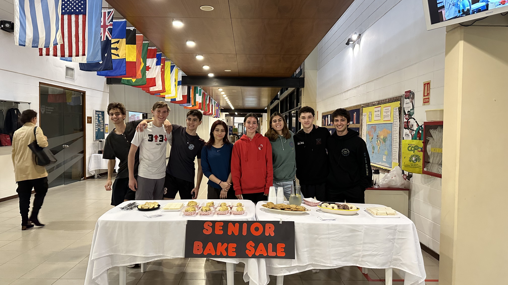The Stand and the ones who managed it
Alex and Chad call Eitoku and Alex pretends to play some clash royale with Eitoku, even doing it with his eyes closed, when in fact it's actually Chad(more skilled clash royale player) playing against Eitoku.
Now, the Back to School night is ending, Luca, Lupi, and Timo play some ping pong, and eventually everyone leaves.
Tomorrow is the group 4 project.
-
Date:18/08/2023
Climate:Norma;
Location:Uruguayan American School
The Group 4 Project .
I will present the Journey of only 1 of the groups (The group I was in) Eitoku has just arrived today by the way, he just came back from japan and he brought many japanese sweets.
All the class in the computer lab, and the science teachers are all there, they explain that everyone has to build a puzzle for an escape room and that the Juniors will escape it. The plan is simple, they had to create puzzles that gave them a number, one puzzle for each science. At the end they end up with a 4-Digit code which they will have to tell Javier in order to win.
The group I will be summarising the activities of is the group of Chad, Timo, Eitoku, Guillermina, Milagros, and Bruno.
Computer ScienceTimo thought of using the hidden number game, a game that Javi had already previously introduced to them. Then Javi gave them an idea to use the cartridge of a camera and a card reader to give them a clue. Timo also set up a photoshop puzzle, where one had to re-arrange layers to restore a photo.
Chad finished coding the hidden number game, Bruno finished setting up the camera cartridge, Timo finished the photoshop puzzle, Eitoku asked some biology questions(What is the universe mostly made of), Eitoku also gave everyone some treats from Japan because he camre back yesterday. At the end, the number that the hidden number game gave them was 7
BiologyTimo suggested for everyone to do something with pH, and Eitoku wanted to do Trivia questions, so they ended up setting several cups with different pH's, and some Trivia questions made by Eitoku inbetween them. The pH's of the solutions gave you the numbers, and the solution to the multiple choice questions gave you the arithmetic function needed to solve the problem, so to find out the final number they would need to find out the correct pH's of the solutions and the correct answers to the questions. But everyone thought that was too easy, so they hid the pH key behind a window sill. Then Chad started to get creative with riddles.
"In order for you to find the key, maybe start by looking at tree's" (In hopes they would look at the tree's outside the window and notice the key.)
"I" see that you are stuck still, maybe try checking behind the window sill" (Just give them the answer if they are still stuck)
The final number that the equation gave them was 0.
ChemFor chemistry, Timo was the only chemist, so he decided to make them identify a Alkali Earth metal among other solutions of metals. All the solution containers were labled different letters, so Timo created a key that assigned a number to each different letter. The solution they picked was solution D, and they assigned D=30.
After that, Timo decided to do a flame test, where they burn the solution to see which transition metal it is specifically. It was strontium with atomic mass of 38. Then they substract the 2 given numbers to get the final number 8. Chad once again got creative with the riddles.
"Spot it fast, Spot it well, before for you tolls the bell" (They were supposed to find the spot-well in which they did the experiment)
If it's the same colour as glue, it means it's group two
If you want the code to claim, do an experiment with the flame.
Now that you investigated you are able, to go check the table.
PhysicsVery random physics problems that I don't really remember, it was SUVAT problems, then some laser problem, then some Projectile Motion problem.
All the Juniors did the experiments, and the Seniors got several awards.
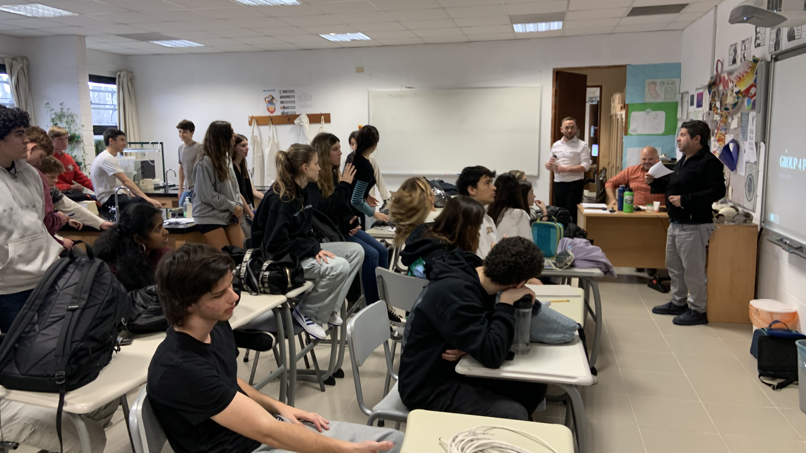AwardsThe Group 4s
-
Best non-physicist physicist
Luca Lupinacci, the best person in physics who didn't take physics
-
Best non-biologist biologist
Chad Murphy was the best biologist that didn't take biology
-
Best non-chemist chemist
Daniel Prada, the best person in chemistry who didn't take chemistry
-
Best non-computer nerd computer nerd
Angeles Nunez, the best person in Computer Science who didn't take computer science. (The experimental sciences have something against computer science.)
-
Most Valuable Scientist
Timoteo Marcaida, I don't know what the requirements were for this title
-
Best non-physicist physicist
-
Date:19/08/2023
Climate:Rainy
Location:Lara's house
It's Lara's Birthdays celebration, here are the people who attended.
- Lara
- Toby
- Santiago Parada
- Eitoku
- Timo
- Alejandro
- Ines
- Milagros (not naddeo)
- Natasia
- Vicky
- Other friends of Lara
At first the party didn't have loud music, so people were talking, to each other, complimenting their looks since the theme of the party was met gala. Some people started playing cards, specifically truco argentino, but they gave up because Santiago was the only one who knew all the rules.
The music became louder and more people started dancing, it became immposible to talk, so dancing was all one could do. Eventually, the cake came, and Lara blew the candles. Also, at some point, Eitoku made out with Vicky (one of Lara's friends).
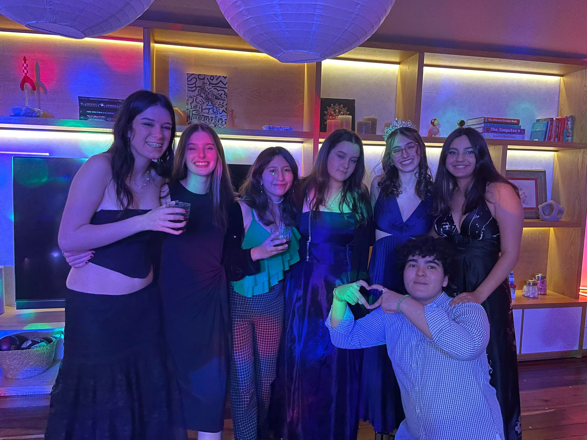
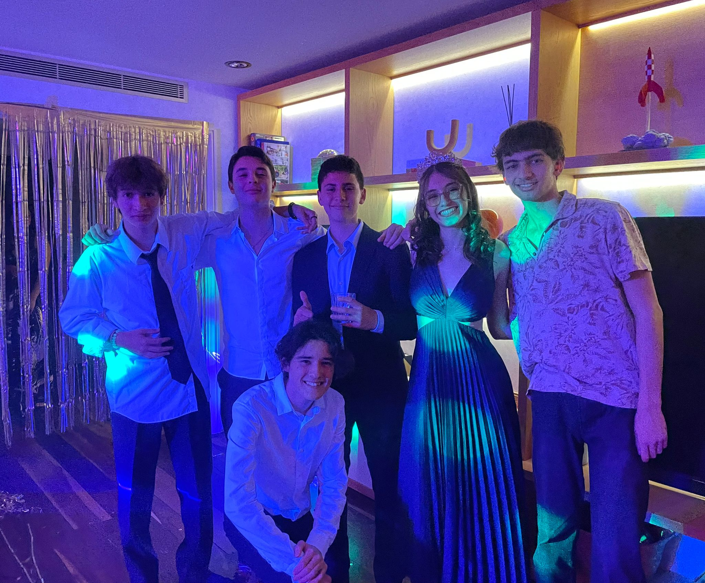 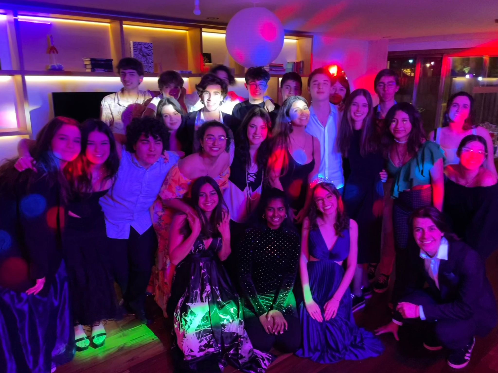Some photos taken,
Eventually everyone leaves.
-
Date:21/08/2023
Climate:Cloudy
Location:Uruguayan American School
Fede comes back, and so does Moskovicks. Zarsky also comes back, everyone is back!
During chemistry class, Mr Amaral accidentally starts off the lesson with a permanent marker, luckily he quickly notices his mistake and everyone goes to help him. This is specially unfortunate because the whiteboard that Amaral has is brand new, the old one was really dirty and stained. Lupi says that by drawing on the permanent mark with non-permanent markers, the permanent mark will come off. This works and Timo is curious about the chemistry behind this. After some thought, Amaral concludes that the non-permanent markers might be diluting the permanent mark into their non-permanent ink.
They erase the permanent mark with the use of chemical knowledge
-
Date:22/08/2023
Climate:Rainy and cloudy
Location:Uruguayan American School
Their first class with Moskovicks in quite a while, everyone prepared their presentations in fea moskovicks would make them present. Guillermina arrived late, and she felt Moskovicks' meaness for the first time. Moskovicks asked everyone about greek tragedies, and she decided that the class didn't know enouph, so she set a test on thursday.
In Digital Society, they have a discussion until Timo has the idea to take a picture of the whole DS Class and have it as the Google Classroom Picture, so Chiara takes the picture.
In Spanish class, it is revealed that this year's OEE will actually be in quite a luxurious motel with climatised pool and other things, dissapointing for Dani who wanted a more rustic experience.
StuCo changed their meetings to tuesdays, so everyone goes in todays meeting. It's Fede's first meeting, and they talk about a school wide just-dance on thursday, and they also discuss other StuCo event ideas.
In spanish, Dani asks what does "Testarudo mean"(stubborn in spanish) and everyone says "You"(Meaning Dani is Stubborn) This is because Dani never gives up a belief without a fight, and people see that as a stubborn and dogmatic way of thinking. But Dani isn't dogmatic, he is just argumentative.
Say hi to Bruno
Climate:Sunny
Location:United States of America, Greensboro, Ghost Town
The Swamp Dwellers go to a place called Ghost Town, and it's really cool, they all had an amazing, time. Despite the fact that it was really hot, and they had to walk a lot, the end result was worth it. Here are some photos provided by Megan.
.jpg)
.jpg)
.jpg)
.jpg)
.jpg)
.jpg)
.jpg)
.jpg)
.jpg)
.jpg)
.jpg)
The photos taken
-
Date:23/08/2023
Climate: Sunny
Location:Uruguayan American School
In Study Hall, Dani explains what limits are, Chiara eats a bonobon which contains peanuts and she is allergic to those. She quickly spits them out.
The chemistry class learns about neutralisation reactions, how to calculate the pH after one, and how they are always exothermic.

Neutralisation reaction
-
Date:24/08/2023
Climate: Sunny
Location: Uruguayan American School
It's dia de la nostalgia, everyone should come with nostalgic clothes from before 2000. Some people in the class dress up, but obviously most do not.
In english class, people take a test on Tragedy vocabulary words. People did quite well on that test.
The Seniors also did a bakesale where everyone brought many things at some original prices. Here is a list of what everyone brought.

The food
In Digital Scoiety, the College Counselor comes with someone that wants to recommend a good college to everyone. Timo later gives out the last of his chips before throwing them away, these are the best chips ever.
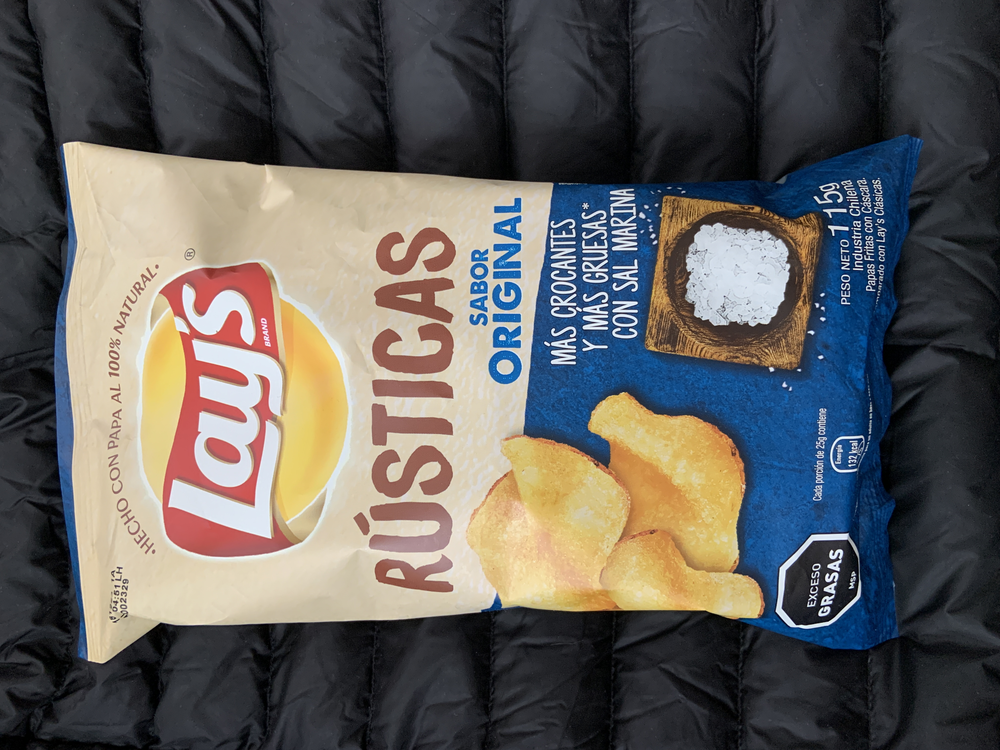
Digital Society
In math class, the class gets introduced to their first integral, which is immposible to solve by hand so Zarsky tells everyone to do it in their calculator, it relates to the bell curve, the normal distribution.
In lunch, some of the bakesale leftovers are sold, but most are eaten by the seniors, they made a big profit anyways.
In spanish class, Timo gave everyone chocotorta, and everyone liked it. Towards the end of the class, there was a Just Dance event (Proposed by Chiara) that many people skiped because they don't like dancing. Here is a clip of the dance thing.
-
Date:26/08/2023 at night
Climate:Cold
Location:Chiara's Home
They are at Chiara's home. Throughout the whole week they have all been trying to do soemthing, but it had always failed because people didn't sign themselves up for an event.
But finally, today, with enouph insisting, enouph people signed themselves up to the event.
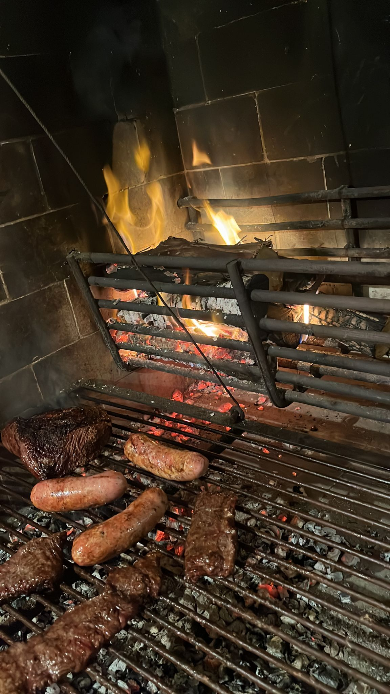Santino cooking an asado
Luca arrives to find Timo waiting for the door to open, Luca calls chiara who tells him to go to the garage door. Then Fabri arrives, and the 3 of them go to the garage door. Chiara opens the normal door so they go back to the normal door and Chiara apologises for the confusion.
Fabri on the phone was filmed for some reason
They all go inside, and Timo brought UNO, and Chess. So everyone starts playing uno while San and Timo play a game of chess. The round of UNO lasts a very long time, eventually it ends. And everyone goes to play pool, but Chiara is against it, she hates people playing pool all the time in her house.
They play pool
Mili and Timo play 4 chess games, because Mili wanted to beat Timo. Fabri and Luca play match. Then Chad and Alex (after finishing their game of Billiards) play a game of chess.
San dresses up because he is going to a birthday, he leaves.
Then Chiara anounces that she wants to have a big party to collect a lot of money on next saturday. She tries to make the anouncement but everyone is playing billiards and she gets annoyed.
Then she falls asleep in the couch while everyone plays billiards. Eventually everyone goes home. Mili ordered an Uber for Alex, and she payed for it.

Cool picture
-
Date:28/08/2023
Climate:Sunny and Cold
Location: Uruguayan American School
At Study hall, the Chem class re-takes the kinematics test.
At 2B, some random university from spain comes to talk to the class about random things, but these are the main takeaways.
- Surround yourself with people that have quialities that you like.
- Be succeptible to being inspired
- Find purpose, and if you don't, still develop different skills.
After that, in ToK, Fede gave Timo a tracker as a gift, since Timo is always losing everything.
In Chemistry class, something amazing happened.
Titration Time
The class did their first titration. Some people did it terribly, some people did it very good.

A well done titration
In physics, Mr Williams was not present, and thus the class just talked all the time about random things. Martina talked about how volleyball practice for girls was terrible because of the new teacher. And there was also some Chess-Club planning there.
In Homeroom, Amaral asks everyone to sign in for the official exams, each one is 119 dollars.
-
Date:29/08/2023
Climate:Sunny
Location:Uruguayan American School
In Digital Society everyone does some precentations, but no one finished them, so Javi gets mad. After that, some people have Math, where they take a checkup quiz that uses the calculator function InvNorm, and almost no one knew about the function, so many people didn't pass the checkup quiz.
In StuCo, people decide what value the Toritos (School Currency) are worth, and what the prizes are worth. The official symbol for toritos is also going to be decided soon.
The Spanish class takes an exam.
-
Date: 30/08/2023
Climate: Sunny and a little bit cold
Location: Uruguayan American School
Eitoku gives people little owl gifts that he got from Japan

A little yellow owl Eitoku gave to Timo
Dani and Sebas talk about letters and how to correctly form them, they also talk about quotes like "The only place to go from failure is up". They talk about physics, and math, and zooming, and many many other things. Also, Chiara brings the same chips Timo had brought in digital society 24/08/2023, apparently she really liked them. The reason behind that is because they are extra salty and extra crispy, meaning extra unhealthy. Timo and Chad then go to hang chess club posters because tomorrow it is the first chess club. They have coordinated with several people to make them all bring their chessboards.
In Chemistry, first they talked about the IA, and later they worked on their titration results. In lunch, Alex, Lupi, Alex, Eitoku, and Timo (The usual ping pong group) go to play ping pong, but 2 paddles are missing, and there is only 1 ball left, a very bad one. So they play like once, but since the the ball is so bad, they stop immediately.
So this lunch, instead of playing ping pong for all the lunch and later eating really fast, they spend all lunch talking and eating together, and they had fun. Lupi commented that it was a good idea not to spend all lunch playing ping pong like they usually do.
Chiara accompanied with Martina approaches them and highlight how it's a beautiful day today, then she leaves immediately.
In physics, they learn a bit about gas laws, but the Chemistry table (Alex, Sebas, and Timo )have an advantage because they take chemistry.
Then they play volleyball, where they finally played a match.
It's a Blue Moon today!!! Timo goes out to see the blue moon instead of practicing for tomorrow's oral presentation.
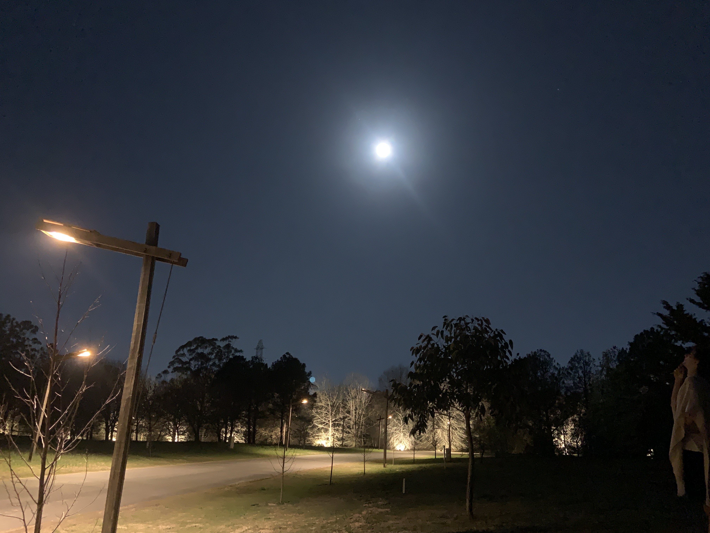The Blue Moon
-
Date: 31/08/2023
Climate:Sunny and not that cold
Location:Uruguayan American School
The English class does some mini-oral practice with Sebastiao Salgado pictures. Timo says painting instead of picture which Fede found funny. Also, Martina, Eitoku, Chad, Alex, and Timo bring chess boards, since today is the first Chess Club.
During recess, Alex and Chad ask Javi if they can turn off the fire wall for the Chess.com website. Javi tries it out and it seems that Chess.com sometimes works and sometimes doesn't, but he says he will look into it just in case. Lupi and Timo play a game where both of them end up in a 2 queen endgame, but Lupi accidentally loses a queen and Timo wins.
So, Digital Society is a relatively new course, so the Internal Assesment Project has never been done before, and thus, the IB provided graded samples. The Digital Society IA is called the Inquiry Focus, you must do annotated research and a video. Sebas also finds it funny how Timo went to see the blue moon yesterday instead of doing english homework.
Incredible Example
The class lauphed at one example video that the IB gave out. This was the worst example which ws just an indian guy talking about stuff with random videos in the background. The best example was by a girl that talked about how social media has psychologically impacted people.
Javi got mad at Angie, Chiara, and Nikki for being absent, and then Nikki came to the class, saying that she was talking with Kemal Tasking about college. Also, today it's Javi's birthday so Nikki wished him a happy birthday and then she left.
Math class had a test on counting, bell curves, and probability.
In Lunch, the volleyball team has a meeting where they decide what the sweaters, the hats, and the bottles for SAAC will look like.
In Spanish class, they talk more about the OEE, it's a very very luxurious place.
And then...
The Chess Club
Chad, Sofe, Alex, Martina, Tobi, Timo, Lupi, and Mili and maybe some others that I don't remember all go and play Chess in the library. Many people brought chessboards and there were 4 in total. These are all the games that ocurred. [Not All of them because I don't remember all of them.]
-
Lupi vs Timo
Lupi immediately destroyed Timo
-
Alex and Martina vs Chad
Martina was trying to learn how to play chess with Alex helping her against Chad
-
Lupi vs Timo Part 2
This one took longer than the first one, but Timo eventually won after Lupi lost a bishop.
-
Toby vs Chad
Toby usually plays ping pong with this guys, he played against Chad, lost, and he got frustrated.
-
Mili vs Eitoku
Eitoku took her sweet time to finish off Mili. Mili actually wanted to learn Chess after playing in Chiara's house, and she wasn't that bad.
-
Lupi vs Timo Finale
Lupi has to leave soon, so they both play really fast, but Lupi didn't think enouph and he got checkmated in 10 moves.
-
Sofe vs Timo
Sofe had told Timo that she was the best chess player, turns out she was joking.
After the chess club was over, Alex concluded that "It wasn't an L" so I guess that's good. Also Mati had a camera and he took some cool pictures.
 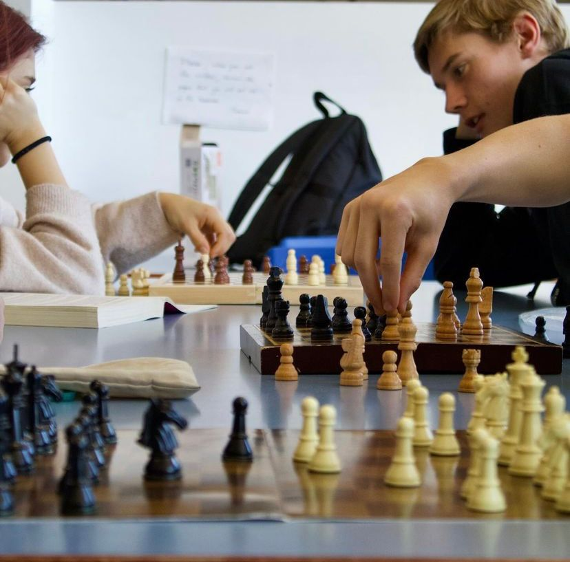
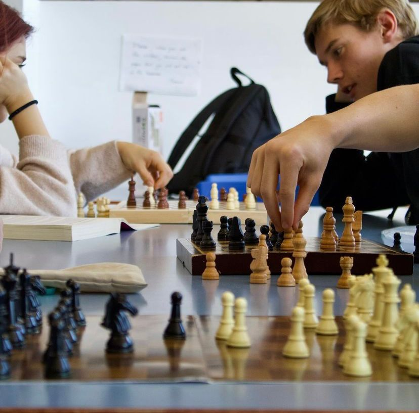

 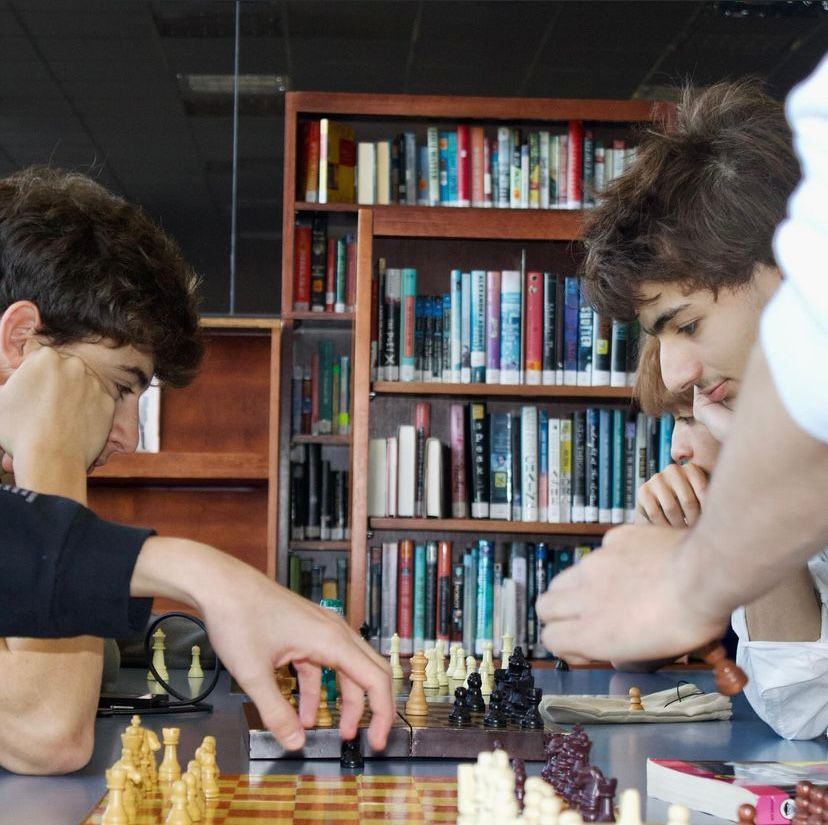
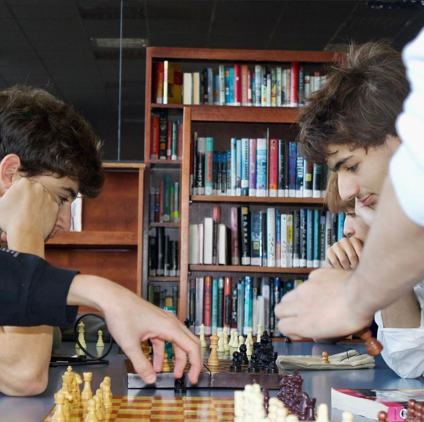
 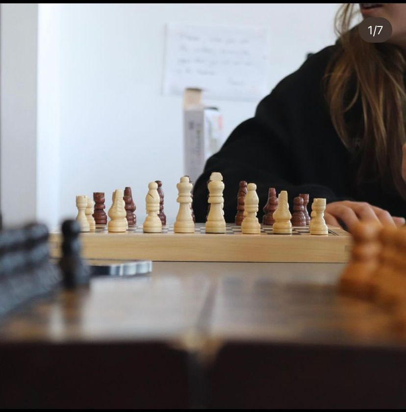
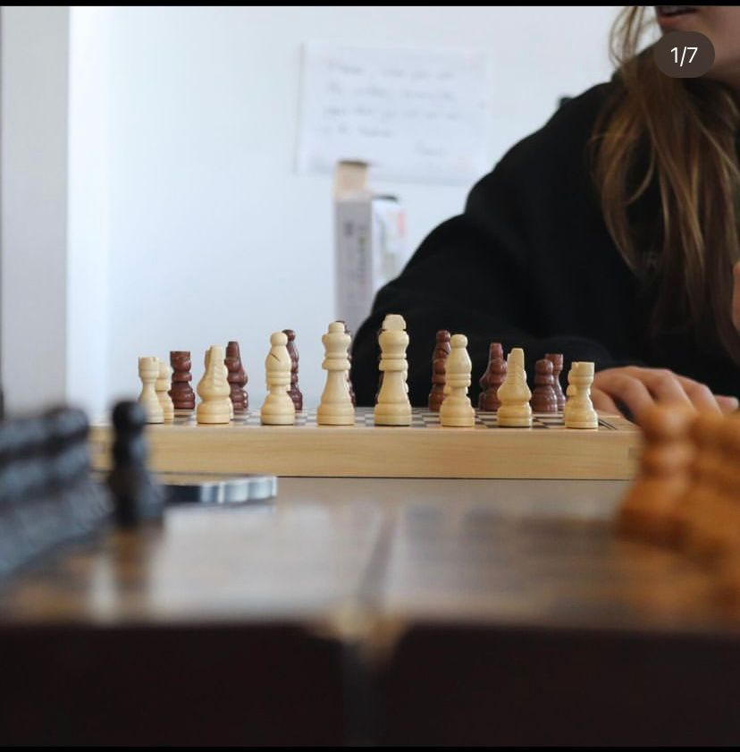
The Epic Chess Games (Photos by Mati)
At some point Mati says "Chess is so boring is this all you do?". And then everyone boos him because he is literally in a chess. Also Martina at some point highlights how Chiara has "Main Character Energy", no one agrees with that claim and everyone feels like she is an NPC. Martina uses Chiara's interaction with he boys in 05/09/2023 and 30/08/2023 as evidence claiming that Chiara's comment gave main character vibes. Everyone else agreed that Chiara saying "Isn't the day beautiful today" spontaneously is a very NPC thing to do.
Then they play volleyball for sometime.
-
Lupi vs Timo
-
Date:01/09/2023
Climate:Sunny
Location:Uruguayan American School, and Portones
Friday Half Day
It's a half day today, so all classes are shorter. In English they discussed act 2 of all my sons, and Moskovicks said that she would give extra points to those who participate the most.
In Digital Society, Chiara and Lucas presented. Chiara did a really good job discussing Artificial Intelligence Conciousness and the difference between an algorithm and human imagination. Lucas also did his presentation on robots for military applications in warfare. Dani was also eating tangerine and spitting the seeds everwhere.
Then, in Math class, Mr Zarsky gave everyone a test with real IB questions on it. The test was incredibly hard and almost no one could finish it. In the middle of the test, Timo arrived, and he could only complete half of a question before the class was over.
In spanish class everyone complained about the math test that they just received, Fabri saying that he used to be good at math because a school had put him in a harder course where they learned advanced stuff. After that, Sylvia anounces that the people that take Higher Level have to work on their Spanish Higher Level essay.
She also said that since next monday is the deadline for turning in the IB Official Exam form where students choose the exams they will take. It is the last time to drop a higher level class and switch it with spanish. People like Ethan and Martina had already done this, they found Physics HL too hard, and so they dropped HL Physics and mover their HL to Spanish meaning they had to work on their Spanish HL Essay.
But it was also revealed that Lucas dropped Digital Society HL to move it to Spanish HL, and no one knows why. Digital Society is definately easier than Spanish. Lucas refused to give a reason, so I guess he wanted a challenge.
Dani goes to talk to Amaral, and Fede goes to talk to Mills. And eventually the class ends, there is no homeroom today because its half day
Everyone walks out the door, and Timo stumbles upon Miss Moskovicks. Timo missed Mosko's class today, so Moskovicks asks him why he missed it Timo overslept. Moskovicks asks him why he didn't turn in his work. Timo was in shock, he had missed the first 2 classes of today because he stayed up late finishing english work. Timo comes to a realisation that he might have forgotten to turn in the assigment. Moskovicks warns him that he wasted his only late pass today and that his grade will be lowered due to the lateness of the assigment. Timo is mad at himself and goes to Eitoku, Eitoku counsels him. But the Timo realises that he actually did turn in the assigment and Moskovicks was wrong so he rushes to Mosko's room. Mosko acknowledges that she made a mistake and she pardons Timo. Then she questions Timo on what his future will look like, she gives the following advice.
Just pick something, develop a skill, and you will find what you like in your journey
Chiara, Martina, Nikki, Santino, and Mati go to eat at a restaurant in arocena called Obra. They are seen by Paula Marcaida, and Nikki said hi to them.
Then, Alex, Chad, Fede, Eitoku, Luca, and Lupi plan to go to Portones to eat lunch, since the day ended early. Timo joins them, and they all go to Portones, Eitoku and Timo play clash royale while walking. They arrive to the portones restaurant, and they all order burgers.
While eating, they discuss volleyball stuff, who is going to SACC, and they attempt to find the average height of the team. It's like 1.76, but they don't think that's true. Then Fede goes get ice-cream while everyone plays clash royale, they have this whole system where if someone loses, they have to give their leadership status to the person they lost to. After a while, many people got ice-cream, and then they had to leave to start the volleyball practice.
.JPG)
Them getting ready to leave the portones.
On their way back to the school, Alex and Eitoku played clash royale, loser gets banned for a week, it was close, but Eitoku lost and he was banned for a week.
.JPG)
Eitoku playing clash royale while being guided by Fede so he doesn't run into anything
In volleyball, it was a mixed practice with boys and girls, they first practiced setting, then setting again, then setting with spiked. Then receiving, then receiving with setting. And then, many girls and boys had to leave to soccer practice. Only Martina, Amalia(Fabrizzio's sister) Fede, Kaylah, Murphy, Timo, Eitoku, Mati, Lupi, and Alex where left.
They played a match with these teams
- Chad
- Alex
- Amalia
- Fede
- Timo
- Lupi
- Mati
- Kylah
- Martina
- Eitoku
Both teams played well, but the first team won, then they made another match with the setters (Kylah and Timo) switched around. Both Teams also played really well. And then for the final match, the second team won.
After that they simply practiced for a bunch of time until Nico Bruni told them they had to leave because the school was closing.
Throughout both matches, Martina was trying to practice receives, and she insisted for everyone to spike at her.
Then, they all left eventually to their respective homes, Alex probably did some math, Mati took Martina to her house, Eitoku probably thought about something, and Chad gave Timo the chess club photos that you can see yesterday. Nata saw Timo in his way to his home with the Ewheel, and later she texted him, saying "Don't Fall".
-
Date:02/09/2023
Climate:Sunny and very little coolness
Location:Uruguayan American School
There is a volleyball match for the girls, they played pretty well but unfortunately UAS lost.
While the match was ocurring, the boys were having volleyball practice.They started off with normal training and then they did a match. Everyone agreed that the loser would buy the winner some ice-cream.
Team 1- Fede
- Timo
- Chad
- Mateo
- Marco
- Eitoku
- Alex
- Luca
- Lupi
So the first team lost, and then lost again. But in the third match, the girls came, and then these were the teams.
- Fede
- Timo
- Martina
- Chad
- Mateo
- Marco
- Pauli
- Eitoku
- Alex
- Luca
- Kylah
- Lupi
The first team still lost, but then they did a last game with teams that were more fair.
Then there were other matches, were the teams were all jumbled up, and those were good matches. There was a match were timo made 14 points with serves and they just reset it becuase there was no way the other team was coming back from that.
Lara, Nata, Juanma, Milagros(not naddeo), and Taijia go to eat to Obra after practicing one of their plays. They
Later that day, Alex, Sebas, Chad, Eitoku, and Lupi eat something at the montevideo shopping food court.
-
Date:03/09/2023
Climate:Rainy
Location:Uruguay
-
Date:04/09/2023
Climate:Rainy
Location:Uruguayan American School
In Study Hall, Dani talks to Timo about Dani's IA. Timo gives Dani the idea of measuring the amount of crests and trouphs in order to measure disonance in waves. Antonina also reminds all her students to study for a test.
In ToK, Santino tries to waste time in ToK because he didn't know they had an assesment. He talks about many things, including a movie about some man. Turner realises what he is doing and San is not succesful
In chemistry, they revise acids an bases for the test.
In lunch, Timo, Lupi, Chad, and Alex play ping pong. They play duos
-
Date:05/09/2023
Climate:Sunny
Location:Uruguayan American School
The English A class talks about All my Sons the entire class, many people aren't paying attention and they are really bored. But some people still participate a bit in the discussion.
The Digital Scoiety class answers questions about inventions created to deal with aging population. Lupi starts talking about how Vietnamese people are immortal until they stop working.
In Math, they start a new topic called hypothethis testing.
In Lunch, Alex, Lupi, Chad, Timo, Eitoku, and Sebas did not play ping pong, instead they sat outside and ate lunch calmly. For quite a long time, these people would play ping pong for most of lunch, and towards the end, they would grab their food and eat hastily to make it to their last class. However this time, they didn't play ping pong, they enjoyed lunch peacefully. Lupi made a comment about how all this time they had always been rushing to play ping pong but maybe they could enjoy their lunch more by just sitting with each other, talking, and eating calmly. Ever since this day, this group played ping pong much less often.
Chiara accompanied by Martina approaches them, pointing out how it's a beautiful day. This time they stay and talk for a while about Chiara being either the main character or an NPC for saying that the weather is nice today.
And in Spanish, they Higher Level students work on their HL Essay while the other students work on their HL Subjects
In volleyball, Marco Lupinacci hits his head against the floor while playing basketball and the nurse is called.
The rest of the boys then go to watch a video in Mr Davidson's room, the video is about setting and middle blocker spiking.
Meanwhile the girls have a talk with the new volleyball coach Rosio, they don't like this new volleyball coach.
-
Date:07/09/2023
Climate:
Location:
Sebas gets a free medialuna because he won a bet against Timo. They go to enjoy their medialunas to the music room while there is a Brazil fair and a college fair outside. They talk about unlikely battles, here is a few.
-
Gauchos vs Cowboys
-
Samurai vs European Knight
-
Pirate vs Cowboy
-
Modern US Navy vs Pirates
-
Gypsy vs Budda
-
Vietnamese Farmer vs South Korean Tech Developer
-
Samurai vs Kazakh nomad
Then they all went to see universities from the US, but all the good universities that people were interested in didn't really go there. There was a university called "Full Sail" which had many things related to media, video game design, virtual music and it had a pamphlet of all things that university's graduates go to work on, there were things like Fortnite, Drake, Beyonce, and stuff like that.
In lunch, Bruno talks about how the British School in the Netherlands is the worst place, and Timo tells him that the British School in Uruguay is also the worst place. Sebas comes and Bruno leaves, Sebas then says that the worst school he has been to is a school in Germany were all people were very unkind, Sofe said it was the Woodlands, Lupi said that he also went to the woodlands for 1 week, then Sofe mentions Saint Patrick. Luca mentions the short amount of time were he went to saint patrick in elementary.
After the classes end, Chess Club happened. The main thing that happened was Chiara vs Chad, were Chad was trying to teach Chiara how to play the game while others played.

ChessChad playing against Chiara
Then they played volleyball and it was anounced that they will play against another team on Saturday. The volleyball plays were not very good, the vibe was off. Alex hurt his foot so he couldn't jump, he got really mad at that.
After the volleyball practice finished, everyone ordered foor and sat down at a lunch table. They started talking about many things, Chiara said that she feels sad about not being that good at volleyball. They also talked about colleges in one point, Martina and Mati pointed out how they were sad that they weren't going to see each other after high school. And Timo pointed out that him and mati had been in UAS ever since they were kids and that people like Alex don't care as much because they move country to country all the time.
The event
After that, Martina wants to vape, but he doesn't have her vape, so he asks Alex if he can go get Eitoku's vape in the boys locker room. However, it is very clear that most boys in the class are against vaping, so Alex decided not to. Alex has nothing against people who vape, but he'd rather have them not vape because vaping is bad for health. So Alex refused, and she went for Eitoku.
Eventually she found Eitoku
After that, kids started arriving, everyone started to play volleyball, even people like Dani and fabri who aren't in the volleyball team. Sometimes they played volleyball with kids, but the only ones that were playing witht the kids (doing the babysitting job) were Sofe and Ethan. Mati and Chiara were in charge of directing the kids to the Levtin gym.
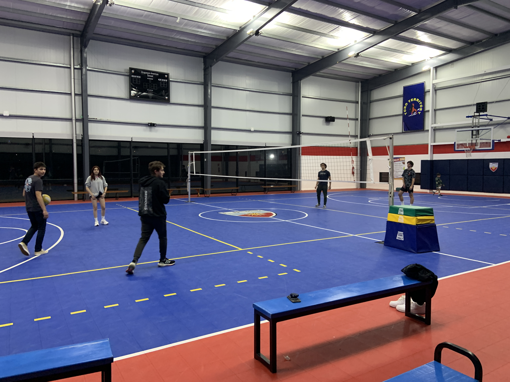They play volleyball instead of babysitting
After a while, the kids went to eat, Mati brought cookies and he was getting surrounded by kids that were desperate for cookies.
Then the kids went back to the gym, and then Wine and Cheese ended, and the parents went to pick up the kids. So they cleaned the gym and left.
-
-
Date:08/09/2023
Climate: Rainy
Location:Constan's House
Today, the chemistry class made fake blood. Amaral explains that this fake blood formula is no longer used since its actually toxic and Timo shouldn't eat it.
Fake Blood
Timo went to visit Consta at night, they mostly played ping pong and talked about their Camping experiences.
-
Date:09/09/2024
Climate: Sunny
Location:Uruguayan American School
A volleyball match ocurred, there was the girls volleyball match and the boys volleyball match. The girls lost 1-4 in sets, but all sets were close.
For the boys the story was a little bit more interesting. They won the first set 18-10 (Sets were of 18 points) and everyone was really confident. But in the second set, Luca taccone was changed for Timo, and Timo was distracted so his sets weren't that good, they lost that match 17-19. After that, the team spirit went down, which caused them to lose that match. Then they also lost the next match. For the final match, everyone decided to actually try, and they started winning, but the other team still won by a lot. This made Alex really sad because after all this time training it didn't seem like they got any better, but everyone comforted Alex saying this was only a practice match, not a official league match.
Later that day, Mati, Angie, Martina, and probably others went to hang out in Santino's house, they ordered Mc'Donalds and Mati said this quote "Creo que todos los professores me tienen ganas"
Also Bruno sends out the following videos of him going to the Casino, he has been getting lucky in the casino lately, and he has even met Jeff there multiple times.
Bruno adventures
-
Date:11/09/2023
Climate:Rainy
Location:Uruguayan American School
Study HallTimo, Dani, Sebas, Chad, and Martina study for the physics test. Dani keeps complaining about how Mr Williams is really bad at teaching, and he compares Mr William teaching methods to Mr Lopez and Zarsky, and he swears that he would get a seven in IB Physics if he had Mr Zarsky as a teacher.
Theory of KnowledgeEveryone does a revision of their past Mathematics Assesment. Only one person got a 7/10.
In chemistry everyone starts their internal assesment experiment. PhysicsThere is a physics test, everyone is very nerveous, the physics test was hard, it had some very out of place questions about circular motion. Many made some dumb mistakes, but overall it wasn't as bad as many made it out to be.
After School in Flex SpaceSan, Mati, Martina, and Eitoku spend their time watching tik-tok videos, roblox, and other things.
San, Mati, Martina, and Eitoku then go to Martina's house to play roblox.
-
Date:12/09/2023
Climate:Sunny
Location:Uruguayan American School
English ClassEverybody is here and on time, so Fede asks "Do we get Cake?" Mosko says that next tuesday they can have cake because it's her birthday. After that they work on a small paragraph that they will have to present in a group of 4.
They all do their presentations, the first is Chiara, Salma, Mati, and Guille, it was long but it lacked cohesion.
The second one was Timo, Fede, Mili, Ethan and Angie. Their presentation had cohesion but it was too short
The next group was Dani, Luca, Martina, and Lupi. Lupi stumbled and fumbled, Dani did pretty good, Martina went too fast, and Luca went faster.
The last presentation was Chad, Alex, Sebas, Sofe and Eitoku was probably the best.
Digital Society/ArtIn Digital Society, they work in Technology used to create food and solve overpopulation feedin problem. Timo goes to talk to Karina about his Paraguayan War extended essay. However he gets sidetracked when noticing the art class in the chemistry lab.
Turns out that the art class is making Chemistry art with Borax crystals. Ethan is having trouble, he is doing Fabri's theme of optical illusions. They set up their things in the water and leave them there.
Timo goes back to Digital Society were they all take a group picture that they plan to put as the new banner for the google classroom last one wasn't good.

Digital Society group picture.
MathLearns more about hypothethis testing
-
Date:13/09/2023
Climate:Sunny but cold
Location:Uruguayan American School, Bus, Balizas hostel, beach
It is time for the very awaited camp. For some backstory, the OEE was meant to be in Salto del Penitente, but the class insisted for it to be on Cabo Polonio. Cabo Polonio was not available, so they went to Balizas, a very close place.
StartEveryone arrived to school, and they went to the theatre, were they left all their bags, some people brought food. Bruno brought Donuts, Timo brought popcorn and chips, and others brought other things.
Eventually, they get on the bus, it takes a while for them to start their journey because some people are missing, Angie for example, she is the only one I remember was missing but I know there were more. When everyone in the class arrives, the journey starts, everyone in the class (except Ethan because he had some problems) starts doing stuff.
Alex, Chad, Lupi, and others play clash royale, Eitoku and Timo play chess, and Martina brought her switch. Martina she played Mariokart with Fede, Chad, and Eitoku. Meanwhile Sofe, Mili, Sylvia and Fede played card games sometimes. The class also ate some food that people had brought.
Much like always, people put some bad ambience music, Sylvia wanted to change it to "No te va a gustar", eventually they put 1 or 2 songs from that band and it went back to the bad music. Timo tries to learn some German with Sebas but the teachers take everyone's phones away because they are now arriving to the hostel.
They pass through many cerros and farms, towns and rivers with boats, eventually they arrive to the Hostel. Everyone grabs their things, and they enter the Hostel. Nicolas Bruni was wating for them there, no one likes Nico Bruni, he is the chaperone and he is always really strict about everything. Lupi, Chad, Timo, and Alex immeidately stary playing volleyball, but Nico Bruni stops them and he gives a speach, the Hostel staff also arrives and they give a shorter speach aswell. Then they assign the Rooms.
There are 4 Rooms
First there is the girl's room which hass all the girls since its a pretty big rooom
- Sofe
- Guille
- Nicole
- Angie
- Martina
- Chiara
- Salma
- Milagros
The boys were divide into 3 rooms, I called them Wanderoom 1, Boys Room, and Wanderoom 2. All the rooms are upstairs
Rooms Wanderoom 2 Boys Room Wanderoom 1 People in rooms The last leftmost room and the furthest from the stairs
- Eitoku
- Alex
- Timo
- Sebas
The biggest of the 3 rooms, it's in the middle of the 2 other rooms and it contains the following people
- San
- Lucas
- Luca
- Dani
- Fabri
- Mati and Bruno
This rooms only had 6 beds so Bruno or Mati would have to leave to Wanderoom 1 which had an unused bed. However they decided that they would figure out who stays later
The first and rightmost room, closest to the stairs that lead down to the main area of the hostel.
- Chad
- Fede
- Lupi
This room has 1 extra bed since there was no fourth person that wanted to join them for some reason


Boys room and Wanderoom2 (Day 3)
After everyone chose their room, they started to unpack their stuff, and they were getting ready to rest from the long trip, but the it was anounced that everyone is going to a zoo now, so they all went to the zoo.
But before that, they ate pure and milanesas, a very good food. They also played some metegol, were Timo got luck 3 times in a row and scored 3 goals from the defense line.
The zooThey arrived at the zoo, and they saw sheep, some sheep had horns. All these sheep had tails. After that, they ventured into an area with more trees, they went into a big tree that I forgot the name of. They took a picture in this tree.
.JPG)
All of them at tree
Then they went to see a monkey that ate oranges and eggs, everyone made jokes about Lucas since they have a nickname for him "El Mono". Eeveryone found the monkey very cute. Then they went to a place witha lot of birds and some ducks, there was a pigeon stuck in a cage with a very aggressive bird, but the pigeon managed to escape.
There were many other brids that had many colours.
.JPG)
.JPG)
.JPG)
The Animals
While everyone was with the Birds, they all started grabbing oranges and eating them. They weren't that bad.
.JPG)
Alex and Chad eat oranges
Then they all went to a swing-like zipline, they all waited for their turn, Fede, Eitoku, and Chad, went on a horse toy all at once and broke it immediately. They all come back to the group to not raise suspicion about what they had done.
.JPG)

Zipline angie and nikki
After that, they all go to explore more of the area, they keep grabbing oranges, and they also visit some ducks that are with capibaras. Althouhg the Capibaras immediately go away so not everyone got to see them. Fabri communicates with the ducks and the ducks insult him.
After that, they all go to an open field were there is a swamp zipline, mili tries it out but she gets stuck in the middle of the swamp, many people start trying it out, they want to see if they are able to gain enouph speed to cross the swamp, but none of them can, because that zipline was designed for kids.
.JPG)
Lupi trying ot get out of the kid zipline
Then, Sylvia realizes that Eitoku and Bruno are gone, Javi leaves in search for them. They all go to a monte and they see stuff like trunks, games, and grass. On their way back, they find Eitoku and Bruno walking towards them. Turns out Eitoku was with Bruno who was filming a monkey with his phone, Bruno sneaked his phone into this camp. Many people did this, many people also sneaked their vapes and other stuff like that. Eitoku and Bruno probably took a few hits while they were away from the rest
- Bruno, he also sneaked his laptop in there.
- Sofe sneaked her phone
- Many girls also sneaked their vape there.
- Eitoku also sneaked his vape, it is a purple vape and he shares it with many people.
Back in the zoo, Chad grabs a very acid orange and gives it to people saying "Yo this thing is fire" and then they die of acidity after trying it.
They go to a room that has a lot of stuff, it has artifacts, boleadoras, skulls, old money, guns, and old equipment.
.JPG)
The artifacts
After that, Alex, Chad, Martina, Timo, Eitoku, and others go back to the first zipline swing, but this time, they all give an extra boost to the people in the zipline. They go to the zipline and they push it extra hard and at the end they go flying. Martina tries it and at the end her seat hit the post and made a sound, Alex got worried since it made a sound that made it look like she hit her head, she was also covering her head so everyone rushed to help her, but she started lauphing because she was pretending.
After that, the teachers came and advised everyone to stop that because the swing might brake and they might have a real problem.
They all go back to the bus after that.
Once they arrive, many people want to rest, but some go to the beach. Sebas, Lupi, Chad, Fede and Eitoku go to the beach with a volleyball that they use as a football. On their way back, they see Sebas, Timo, and Mati arriving so they decide to go explore some bench-looking thing that was there, Timo brought some chips so everyone eats some.

It wasn't a bench, it was like a plataform or something
The bench-looking thing was not a bench at all, it was more of some random ruined platform. But they decided to go farther into the mountains. Chad, Lupi, Fede, and Eitoku ran to the mountains while Sebas and Timo stayed back talking. Sebas and Timo noticed some flamingo's in the beach.
Eitoku started to rest at a peak, and when Sebas and Timo catched up to him, Timo took some pictures, and then they continued. Sebas stayed with Eitoku in that little peak.
.JPG)
Eitoku resting at a peak
Timo catches up with the rest, he takes some epic photos of them at the top of the sand hill. They find the top really cool
.JPG)
.JPG)
Some pictures of them at the top
After that, they all went running down as fast as possible, Lupi fell and hurt his knee a bit. They all rested on some rocks in the shore, washing out the sand that had accumulated on their shoes for running. Chad admires the ocean.
"The World!" - Chad
And then they see Javi, and Javi in the distance, and they assume that they have to go back to eat Merienda.
.JPG)
A picture of them while going back for merienda
Timo falls in a place with very deep sand, this is going to happen again but with a different person.
They start their walk back, talking about random things, they see a dead penguin on the beach.

Lupi explaining how it's definately a dead penguin (Alex had some doubts)
After a long walk, they all make it back to the Hostel Fabri, Luca, Dani and Lucas were playing football, but then everyone is called for merienda. the Merienda are some cake, some bread, and some jams, aswell as some orange juice, water, and chocolate milk.
Bruni gives a little speach about how everyone has freetime now. But he makes it long so no one likes it.

After that, they play cards.
Some people also play la casita robada in the breakfast room, and then they go to the pool table. People have fun.
Everyone goes back to their rooms, Timo writes some stuff on his notebook, Eitoku plays some songs, everyone does some random things. Some people go to play volleyball outside in the streets. Sebas, Eitoku, Martina, Bruno, and Sofe are all in Wanderoom 2. Bruno tells Sebas about Dominic Tornquist and the things the guy has done, Sebas is absolutely apalled and traumatised and he can't believe it. Sofe plays with her boyfriend's rugby ball with Bruno, she teaches him how to through it (Inside the cabin)
Everoyne stops playing volleyball outside. San and Dani come inside and Martina starts singing the hit song "We don't talk about Bruno" from encant while Eitoku tries to improvise. Sofe then passes the ball to people, they play a game where you have to pass the ball to someone while they are unprepared and don't expect it, Lupi is really good at this. They almost break a window.
Suddenly Chiara and Salma appear to complain about Guillermina, apparently this new student is a very interesting person, she lies all the time, she insults some people, and now she doesn't want to take a shower, but Chiara says she smells really bad so they don't know what to do.
People start taking showers, there is no hot water in the community showers so the girls ask for Sylvia to lend them her shower so that they can have hot water, but the boys take a bath with cold water anyways. The climate is extremely not hot so this was really painful for many. But Fede is accustomed to it because he just came back from the camp in korea where there was no hot water ever.
Many people come back from the showers, in the wanderoom 2. Sofe, Bruno, Timo, Mati, and Sebas are answering sofe's questions. Mati is actually interested in this. Also for some reason, this room (Alex, Timo, Sebas, and Eitoku's room) is a room where many people meet very often, this is not good because its not the biggest room, the boys room is the biggest room.
Sofe's Quesitons
Who would you kiss in this class
Sebas- Maybe Chiara
- Maybe Nikki
- Everyone but Guille
- No one
- Zalma
Sofe had asked this questions to all the girls aswell, so she wanted to see if there were any possible pairs.
Then they go to the climatised pool room, where Bruno is doing massages to people and everyone is talking about random things. There is a fire place at the pool room so everyone likes it because it's hot.

They hang out in the pool room.
.JPG)
.JPG)
.JPG)
.JPG)
.JPG)
.JPG)
Chiara's Model pictures
Everyone then goes to eat dinner, Sofe tries to invent a new thing. Putting three fingers next to your eye means W-Rizz, Sebas hates it with his entire being and he establishes that he will do everything in his power to never use this new sign in his life.
Everyone decides to got to wanderoom 2 and they all listen to Eitoku play the guitar, Mati says that he loves Eitoku when he plays the guitar. Eitoku plays very chill and good songs that everyone likes. It's super chill, there are a lot of people and everyone is quiet listening to Eitoku's chill guitar.
Also Felipe comes into the Wanderoom, he sits next to chad, and even though chad is allergic to cats, he starts petting the cat because he likes the cat. His nose get stuffy, his eyes get watery, and his cheeks get red but the cat is comfortable there so not much can be done.
Dani, Fabri, and San play with the rugby ball inside the room but everyone gets mad and says that they are going to break something, they continue until they decide to stop. Dani and Fabri leave while San stays.
They are all talking about stuff, some in the Wanderoom 2 and some in the boys room. Javi comes to investigate the boys room, Nikki leaves and warns the Wanderoom 2 that Javi is coming, San immediately goes to the Boys Room and shouts,
"Viene Javi, Viene Javi!" but Javi was literally in the center of the room talking to everyone and Santino hadn't seen him so they all start lauphing.
San and Javi go to Wanderoom 2 and Javi jokingly says "Ojo chicos que viene Javi".
Eventually people start leaving, but Mati wants to sleep with Alex for some reason, so he sleeps with Alex in Alex's bed, and thus the conflict of the boys' room is resolved.
Wanderoom 2 Boys Room Wanderoom 1 - Eitoku
- Alex and Mati on the same bed
- Timo
- Sebas
It only has 4 beds but Mati and Alex slept together
- San
- Lucas
- Luca
- Dani
- Fabri
- Bruno
Mati sleeps in Wanderoom 2 so Bruno stays in the Boy's room
- Chad
- Fede
- Lupi
- [Extra Unused Bed]
Wanderoom 1 is unchanged, neither Bruno nor Alex used the extra bed that they had, instead Mati opted to sleep with Alex
At night, you can hear loud lauphs and screams from the Boys' Room, Timo goes to complain, but the noises intensify, then Mati goes to complain, but they don't stop, Eitoku then goes to complain, and he threatens to not share his vape with anyone if they continue, everyone immediately quiets down. Wanderoom 2 falls asleep immediately after they stop making noise.
In the Boys Room, Bruno plays games in his laptop throughout most of the night. Bruno isn't a fan of sleep
-
Date:14/09/2023
Climate:Cold at the morning
Location: bus, truck Cabo polonio, beach
Everyone starts being woken up by Javi, they all head to brush their teeth, Alex has some allergies and he uses a toilet paper that Timo stole from the bathroom. Some people even take a shower. Lucas went to take a shower but he couldn't figure out how to close it, Timo comes, twists one knob, and the shower stops. Magic
Then they all eat breakfast at the breakfast room, they have to microwave their chocolate milk.
Luca and San then go to test how loud the noises they made last night were. Last night the boy's cabin got creative as they made several noises with several different methods. The most annoying method was hitting the wall with a mosquite repelent can. San and Luca apologised to the Wanderoom 2 cabin since they hadn't realised how loud and annoying that noise was. Turns out sound travels well through solids.
Then, they all prepare, because they are going to go to Cabo Polonio, and then all the way back to Balizas walking. They pack up a bag with burgers and some fruits, aswell as a water bottle, and they head off to a bus station.
.JPG)
Them at the bus station
Salma warns Mati about a veranda roof that is pretty low, and Mati immediately bumps his head on it, San lauphs. They take a bus to a place with trucks, and then they get off.
This place with trucks has a volleyball net that is very low, but they don't have time to use it, they immediately get on a tour truck. The tour truck has some seats on the roof that everyone fights for.
.JPG)
.JPG)
The trucks
In the trip to Balizas, several things come to happen. Alex tries to solve a rubicks cube with Chad's help, it takes a while but eventually he is succesful. The seats have sand and water so everyone is kind of uncomfortable. Suddenly, Chiara notices that a bag falls of the roof, and everyone warns the driver. They stop and Nico Bruni gets off to go recover it, they consider leaving Bruni but San really wanted his backpack back so they decide to not leave him.
The back pack is recovered and the journey resumes. The path goes through a beach, and then they arrive at CABO POLONIO.
Cabo Polonio.JPG)
Them at Cabo
They arrived at Cabo Polonio, the wheather is cold and it looks extremely desolate, streets made of dirt, and very rustic houses. The group then attempts to reach the lighthouse, and they take a strange route. Nikki, Fabri, Angie, Timo, and Guille advanced faster than the rest, they went through a beach where they witnessed a pink duck toy, a dead sea lion, a dead penguin, and another dead sea lion. The Gripe Aviar is a phenomenon that is taking Uruguay by storm, it affects animals mostly.
.JPG)
.JPG)
.JPG)
Them at Cabo
Eventually after passing through the cementary of animals they get to a gate, and that leads to the lighthouse, where they wait for everyone else.
Everyone else arrives, they also went through all the dead species in the beach. Apparently the lighthouse is closed because of what's happening with the disease. but they can still see the lobo marino's from afar. They lauph when one falls, they all look really chill. They also take some pictures with the lighthouse.
.JPG)
.JPG)
.JPG)
.JPG)
The lighthouse
People eat some snacks, like Rustic chips. They go to a lighthouse balcony, and after washing their hands in the lighthouse bathroom, some students eat one of the two burgers that the hostel staff prepared for the class.
The burgers were really hard, and some people got a stomache ache from that. Guille gives her burger to someone, or something like that, I don't really know what happened with Guille's burger but I do know that it is a situation that becomes relevant in the future so remember that something happened with guille and her burger. Some guide starts to explain stuff, and he asks "Does anyone have any questions" and no one says anything so it's kind of awkward.
After that, the sun starts to come up and heat up the place a bit more. People start playing volleyball and football, but unfortunately, despite the warmer weather, the wind is still very present, and thus the volleyball randomly shifts direction every once in a while. This causes the ball to roll downhill and for someone to go get it. This happens many times. Also Timo slips on mud which is unfortunate. Eventually they all start to use their brains and they figure out that they can move away from the downhill part in order to prevent the ball from rolling all the way down to the beach.
.JPG)
Volleyball
After that, the class starts their journey back to the hostely. All the way from Cabo Polonio to Balizas
.JPG)
They walk, and Boat
They start to walk a lot while passing the football ball, it almost gets to the sea a couple of times, but luckily it was always saved. They see many dead lobo marinos, one of them was dying, but it was still alive. Also, a dog followed them, it was a dog from Cabo Polonio, and it just kept following them.
They stop at a place to eat and rest for a while. They stop at some random house and decide to eat there, luckily the house didn't appear to have anyone in it. People also play volleyball behind the house, the wind is less present but still clearly there. Angie consecutively ruins everything by letting the ball touch the ground.
.JPG)
The random cabin people ate their burgers at
Lupi almost falls on a well behind the cabin because he was jokingly pretending to attempt to throw the ball in the well.
The bananas were kind of trash so everyone threw them out to let them decompose in nature. Some threw them into the well.
Afer some time, they all start to clean up, they make this bag of trash, put it all there, and now someone has to carry it for the rest of the trip.
They continue to advance in this trip, Bruno goes to walk with the dog in a completely seperate direction from the rest of the group.
.JPG)
.JPG)
Bruno walking completely alone while everyone else is together.
The weather is now really hot.People take all their sweaters and stuff like that off.
Mati decides to climb a hill with the ball, and then kick it... the ball goes straight into the sea and Santino rescues it.
The ball then proceeds to end up in the sea multiple times and everytime someone goes to get them. Eventually though, the ball gets lost, Bruno claims that it got lost somewhere in the background of this picture.

The last location where the ball belonged to UAS
People start to take their shoes off
But suddenly, the group turns, and they go through grass lands. In this sudden turn. Martina is really tired and she wants to take another rest but San inspires her to keep going on.
.JPG)
San dragging Martina along
They all see a rock, and they climb the rock, and they take a photo of the class in the rock. Good Rock.
.JPG)

They go towards rock and take picture at rock
Then they continue until they see a mountain, it's more sandy now. Alex, Timo, Lupi, and Chad climb it first. These people had advanced further than the rest of the group so they waited for the rest at the top of the mountain. Lupi makes a jump between two big rocks.
.JPG)
Lupi moments before making an epic jump
While that's happening, San and Fabri decided not to climb the mountain, and to instead go around it, but chaperone's tell them to stop and wait for the rest, so they stop at the other side of the mountain waiting for everyone to climb back down.
Everyone climbs the mountain, but they take a break. The dog drinks water, many people lie down and take a nap, some sit and chat. Timo sees San and Fabri at the bottom and he goes to visit them.

Everyone taking a break
San explains that they are waiting for everyone to get down so that they can resume their journey back to the Hostel, San really wants to get back as soon as possible so he is kind of annoyed. San starts shouting at the rest of the group to get down, but they are too far, they can't hear him. San and Fabri admire from afar how Bruno is doing some parkour in the rocks that lead up to the mountain.
They decide to climb the mountain just to tell everyone to hurry up. They went up the mountain to be annoying.
It took some time, but eventually everyone got their stuff, and they started their journey back to Balizas hostel. On the way there, Santino fell on the same spot timo had fallen, where the sand was too deep. They see the penguin and the flamingos but no one really cares since they just want to reach the hostel at this point, and eventually, the hostel is reached. Seagulls were another animal that was affected by the Gripe Aviar I just forgot to mention them, many dead seagulls were seen. The doors of the Hostel are locked, Bruno climbs over the fence, but he can't enter the main part of the building because it's locked. So everyone just waits for the Chaperones to arrive, and when they do, they open the gate, and they see Bruno inside.

Everyone waiting for the door to be opened
They all clean off all the sand, and many of them decide to go to the pool. There is an indoor climatised pool, some people decide to just stay talking next to the pool, some people take a nap (only timo). People also play some card games like La Casita Robada, while others decide to play Tejo. The tejo game is intense, Dani is new to it but he learned quickly, and unfortunately the game ended soon because merienda came. Everyone went to eat merienda.
.JPG)
.JPG)
.JPG)
They play some games
After that. Alex, Chad, Lupi, Dani, Timo, Lucas, and Fabri go to play volleyball, however they decide to get creative with their move set. They try out new fakes, Fabri uses his foot becasue he has a talent for football, the only ones playing normally are Alex and Timo.
Then they come back to the hostel, since the volleyball was played in the streets. In wanderoom 2, Eitoku is playing his guitar while Nikki, Mili, and others are there. They are complaining about Guille, she is apparently really bad because she lies all the time, she had apparently lied about the burger at Cabo Polonio but I didn't understand the situation completely. She even insulted people behind their backs. Sofe joined, and she also didn't tolerate her, Fede joined and he argued that she had a middle school mentality and shouldn't be taken seriously.
Sofe tells Timo a story about one interaction she had with Guille. Guille told Sofe that she had ADHD and Sofe responded saying that Timo also had ADHD, but then Guille said something along the lines of "Oh but I'm not as dumb as Timo" and Sofe immediately defended Timo. Timo found this pretty funny since he never talked to Guille but apparently they already had beef.
Then people start taking baths and play games, they discover a new game that Javi taught them, Liar's dice, and they were playing it all the time. Search it up because I won't explain it right now. Many people are confused, it's a very complicated game.
.JPG)

.JPG)
.JPG)
They play some games at night
People eat dinner, they eat pizza with coke, and everyone loves that, specially Eitoku because pizza is his favorite food.
Before the next section, I need to specify something that I don't think I have ever mentioned before. Eitoku was trying to quit smoking, so he had his vape and he vaped a lot. Alex, Lupi, and many others are against this behaviour.
So Eitoku leaves the table for a second and Sofe is immediately concerned that he is vaping too much, she warns Eitoku "If you do it too much it's no better than smoking". Eitoku says he'll quit by the end of high school, a very admireable goal.
Bruno then goes to smoke weed and comes back with very red eyes. Sofe is also concerned about Bruno but Bruno denies absolutely everything. Timo and Sofe then talk about how they are clean
People also take showers by the way, I don't really know when this happens really but they do take a shower. None of the girls take cold showers, there is a hot shower in the climatised pool room, sylvia has a hot shower, and the girls manage to use both to not take a cold shower.
Then, they go to the rooms, and they talk for a while about random things. Nikki says that he talked to a man of the hotel staff, and it turns out he is trans. The hostel staff consisted of 3 people, a man, a trans woman that sounded like a man, and a trans man that was indistinguishable from a man, but nobody knew he was trans man, and a normal guy. Nikki was talking to the trans man and he reveals that he is actually trans, Nikki is absolutely impressed, she goes to the wanderoom 2 and tells everyone. Then Nikki goes to the boys room and Wanderoom 2 falls asleep. Nikki starts making some random "Would you rather questions" but Fabri and Santino keep interrupting them with dumber questions, they kept repeating the same would you rather questions, an example is "Would you rather have a daughter with autism, or 4 boys with Turner" and other things like that. But they kept going, and everyone was lauphing very hard. They kept refining the stupidity of the questions, until they reached it.
"Would you rather, being fucked by 200 big black cocks, or having 2 daughters, or third option."
The third option is the bike option from this video
The Bike Option is the Third Option, the third option becomes an inside joke
Unsurprisingly they didn't actually stop here but every other question was some variation of this one.
Eventually Javi and Sylvia come up to tell all the people that they have to return to their respective rooms to sleep.
Note:Somewhere along the day, Mati demanded a spot in the boy's cabin, so Bruno got kicked out and sent to Wanderoom 1.
Wanderoom 2 Boys Room Wanderoom 1 - Eitoku
- Alex
- Timo
- Sebas
- San
- Lucas
- Luca
- Dani
- Fabri
- Mati
- Chad
- Fede
- Lupi
- Bruno
-
Date:15/09/2023
Climate:Cold but Sunny
Location:
Felipe is a cat in the Hostel, he is a pretty cool cat, and he likes to enter the rooms and sleep in the beds, like the time were he was chilling with Chad. Felipe wandered into Wanderoom 2 and woke up Timo. TImo heads down and into the breakfast room, where he finds Javi. Timo sees Mili for a second, and then Mili left... and Angie, Angie also left. Unfortunately Mili had a meesting with a College person or something, and Angie left I don't know why she left, and I mean that they left the OEE
Anyways, Alex woke up, and he played chess with Timo while eating some stuff. Eventually more and more people start waking up, and they eat breakfast, Fabri and Luca play a game of chess in which Luca wins
Javi proposes a fast game to entretain them. It has to do with intertwined hands, you have to follow a pattern were a normal tap means the pattern is undisturbed, a knock means you skip to the next hand, and a double tap means you switch the rotation.
More and more people start waking up, and then, Nico Bruni anounces that everyone will go to the beach for sandboarding. So people start preparing their stuff, they grab the sandboards, and head towards the large sand hills.

They take a picture before going to the sand.
Chad, Timo Lupi, Fede, and Alex are ahead everyone else, and they try out the Sandboard but it does not work well at all. Fede guesses that it's probably because of the lack of wax, the wax is with the rest of the crew which is far behind.
Timo goes to get the wax, and then they try it out. At first, most of them fail, but they start to get the hang of it eventually. Also, the rest of the crew arrive, but most of them are unable to go down the hill in the traditional way, so instead they sat on the board and then went down. Then multiple people started going down in the same sandboard, and they did races.
.JPG)
.JPG)
.JPG)
.JPG)
.JPG)
.JPG)
.JPG)
.JPG)
.JPG)
.JPG)
Pictures of people sandboarding.
After a while, they switched up the side of the hill that they go down off. In this side, plants can be found in the bottom, which leads to some funny scenarios.
While sandboarding, Eitoku seems to have lost his vape, he tried searching for it but he failed to find it so eventually he just gave up since he couldn't find it. The vape is on one of the pictures above, try to find it. Anyways, people do start to get bored after like 2.5 hours of sandboarding, and they sit down, but the wind blows the sand into them. They get covered with sand everywhere, and after a while, everyone starts to leave.
They rest for a while, and they do some random stuff, a specific group of people find themselves in Wanderoom 2, Martina and Eitoku, Eitoku is playing some sweet songs, one of them is "Just the 2 of us".
Timo enters, he is just getting some things out of the bag. And then Bruno arrives, Bruno has a lot of sand spilling from all his pockets, Timo points it out, and he tells Bruno to shake off the sand outside and then go in. Bruno denies it, he says that he has no sand, and he walk all around the room while, Timo watches as the streams of sand fall from Bruno's pockets and into the floor. Timo insists for Bruno to shake off the sand, but Bruno says he has no sand in him, and that he shook it off post-entering. After a long time insisting, Bruno shakes off the sand... inside the room. At this point Timo is starting to get kind of pissed at Bruno for his ignorance, and he pushes Bruno outside to get him to shake of the sand. Unfortunately he already shook most of the sand inside of the room, and the Bruno leaves. Wanderoom 2 is now full of sand in the floor.
Eitoku fell asleep while this was happening. Timo shows a book to Martina. The Book contains several stories that different students of the class of 2024 wrote during fifth grade. She tried to find her story, this is because she wasn't on Timo's class. They read Fede's and Dani's stories. Dani's story was specially funny. And Fede's was just a mess. Eventually they get bored, Alex enters and he questions why there is so much sand, Timo says it's because Bruno. At this point Alex has been annoyed at Bruno for quite a while, he has just been acting strange.
After that, they eat, but no one offers themselves to clean anything, so random people that like helping clean random plates. After that Bruni anounces that everyone will be going for a hike in the forest, they all prepare and then leave.
They walk towards the forest, entrance, and a sign has a map with different points and the hours it takes for people to walk to the points. One of the hostel staff guides says that the trip will take like 1 hour since there is a green path is the map that says it takes apporoximately one hour to reach a destination by walking. However he fails to take into consideration the blue path that one must take in order to reach the aformentioned green path, which adds an additional 90 minutes to the journey. Nicole points this out but the staff member tells her she is wrong(she wasn't)

.JPG) 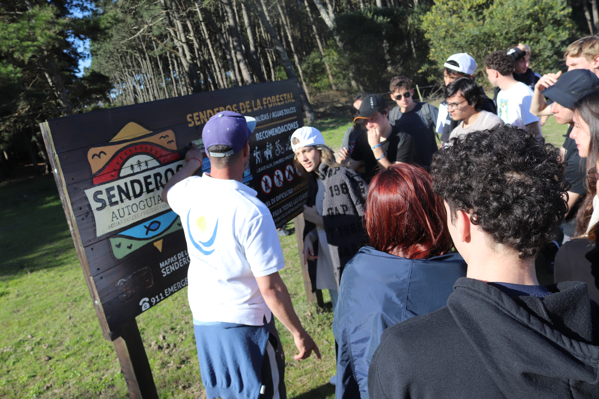
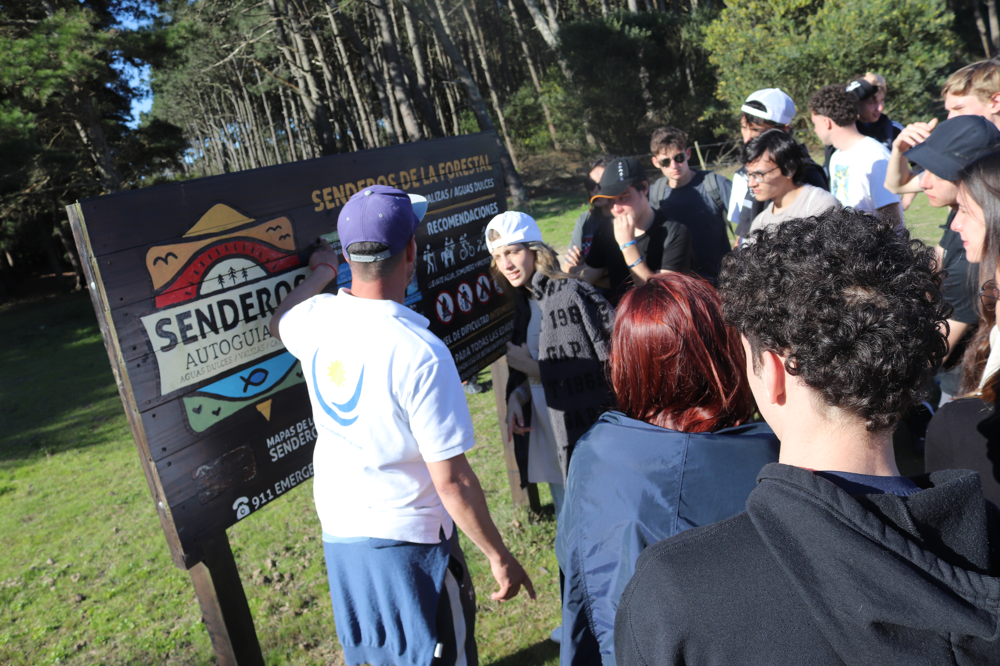
The sign that clearly says the journey will take more than an hour like Nikki said. 90+50 minutes
The sign also had some No Symbols with fireplaces, motorbikes, a person throwing trash, and a tent.
So the entire class goes while talking about random things, among these random things, they do some more really stupid "Would you rather" questions about fortnite skins. They saw some cows, a house, some trees, and eventually they stumbled upon a Snake. It was a dying snake, and Nikki picked it up. Unfortunately they didn't name the snake, and I think Nikki killed it to stop it from suffering becasue it was dying anyways.
.JPG)
.JPG)
Bruno in his own world and the rest making "would you rather" jokes
The group gets more and more seperated, with people who are walking fast ahead, and others who walk very slow. It gets really seperated. Chad and Chiara talk about some TV Shows, Santino and Fabri play with the football ball, and they go through many and gates.
.JPG)
A gate
Eventually, through all the forests, the clearings, and the praire's, they arrive. They are all very tired from the long walk.
.JPG)
.JPG)
A clearing and a group picture where Nikki is holding the snake
It definately took more than an hour, like Nikki had predicted. Everyone rests besides the scenery provided by the lake and the sunset. Santino goes into the lake for a swim, and Bruno goes to explore. so everyone takes a break, until Alex and Chad find a fishing rod and decide to go fishing.
.JPG)
.JPG)
Chad and Alex find a fishing rod and Santino goes into the lake
After that, Alex, Chad, Chiara, Sofe, and Lupi went to search for Bruno. They found him at some very ruined dock, meditating or something. Alex attempts to use the fishing rod, Timo tries to find worms using some technique with a stick, Chad pointed out that rubbing the stick on the ground is supposed to imitate a predator, and thus the worms should come out. It didn't work and no one catched anything.


.JPG)
.JPG)
Fishing Adventures
On the way back, Chiara and Sylvia talk about school, and how it's starting to get really hard with all the homework. And Chiara considers that becuase her dad didn' take college maybe she shouldn't either. Sylvia says that nowadays it's harder to live a good life without going to college. They also talk about their morning routines, about classes the the UAS should have. In the US they would have classes that related to life at home, thing like cleaning plates, doing laundry, cleanign rooms, just common everyday tasks that the UAS never taught to it's students.
.JPG)
Random picture of Salma and Mati with Sylvia, Chiara, and Timo in the background.
Chiara also talks about volleyball for a bit, and how she would try but probably fail to get tot the volleyball team because she just started, and she has a familiar who was incredibly good at volleyball too. The final thing they talked about, is the OEE, Chiara says that this OEE was worse than the last one because it was just overall less fun. This one was a lot of walking, while the other one had more varied activities. Sylvia agrees that the class feels less happy about this OEE, but Sylvia also suggests for the class to do their own OEE, their own trip somewhere. Chiara thinks it's a good idea. Suddenly, Chad, Alex, and Lupi pass by them running shirtless.
.JPG)
Alex and Chad running
Suddenly, they hear some screams from behind, and they are concerned, they even stop and consider going back for them, but they know that Javi is behind them, so they decide not to go. Sofe and Bruno go by, and Sofe says that the screams belonged to Bruno who was just joking around. Sofe and Chiara then talk about random things, most of which I don't remember. One of them though was about who in the class is most likely to murder someone, at first Chiara said Martina because of the dreams Chiara has about Martina stalking her. But then she says Bruno, becasue Bruno has been behaving strangely (Because he is high all the time, he sneaked drugs into the camp.)
After a very long time, they arrive at the Hostel, Timo gives Bruno a bar of Rocklet Chocolate and Bruno likes it.
This night, some boys take hot showers since they realised that they could do that.
After that and they go to a form a campfire, where people try telling jokes, and very dumb would you rather questions, and songs. But no one wants to be in the campfire and they prefer to go to the main area. The smoke gets into people's eyes, and it's just annoying so everyone starts to leave to the main area.
They start to play a round of Mafia, Dani gets killed first, because he always gets killed first. But after that, Lupi is killed second, he got what he deserved after last time.
.JPG)
.JPG)
Mafia game
Bruno is also high by the way, and the Mafia game is never really finished, the Mafia's were Lucas and Eitoku, the healer was Martina, and the detective I don't remember. I do remember though that Matias was the god, and he was cheating by telling Martina who to save.
After that, Lunch time. Eitoku tells Timo that Bruno has been acting strangly, Bruno has been following him all the time and Eitouk finds that annoying. Bruno then arrives, and Sofe notices that he is high. Bruno denies it.
They eat fish. And Bruno had gone to buy rocklet chocolate.
After that, most of them leave after cleaning their plates. The chore wheel was destroyed because no one wanted to clean all the plates. So everyone ended up washing their own plate, they formed a line in the sink. Very inneficient, also some people just left without washing anything.
After all of that happens, Alex, Chad, Fede, Lupi, and Fabri decide to play liar's dice. Lupi has lost his towel by the way, he was just searching for it before entering the dining room and joining this game of liar's dice.
Then Timo joins, and they all play for an incredibly long time, it is such a long game. Martina and Chiara are there for some reason, staring at the eternal game. But they get bored eventually. Fede is winning by a lot, he has 5 dice, and Lupi has only 2, yet Lupi somehow wins.
.JPG)
The eternal Liar's Dice game
After that incredibly long game, everyone goes to the girl's room and the do some very stupid would you rather questions. While Nikki is trying to make some interesting conversation, but failing to do so miserably.
And then everyone goes to their room and falls asleep.
-
Date:17/09/2023
Climate:
Location:
The final day has arrived, and no one wants to do anything.
Last night everyone stayed up until pretty late hours, so they lethargically wake up and make their way towards the breakfast room. All the girls say that they don't want to do anything right now. They say that all this camp has been is walking, and that there was a very big lack of activities that don't include walking. Sylvia says she understands, but now they can't do anything about that.
No one wants to do anything, but they are forced to go to the beach, and fix a sign that had fallen. Most people really want nothing to do with this sign, but they are forced to go. So everyone starts their journey, but some people stay behind, they really don't want to walk anymore. Eitoku, San, Fabrizzio, and other stay with Domi while the rest continue their Journey.
While heading towards the sign, Timo, Lupi, and Chad pass the ball, they play some sort of baseball game with a paddle that timo brought.
Eventually they arrive to the signs, they dig a hole and they put the sign there, then they adjust it a bit, cover it, and the work is done. (Some people here didn't actually do anything.)
.JPG)
.JPG)
.JPG)
They fix the signs
They all leave, but Chad, Lupi, and Alex stay playing catch with a ball. Eitoku and Timo wait for them until everyone is called back by Domi.
Lupi talks with Chad about how boring people are boring, and they don't want to do anything wich sucks, Chad agrees.
When they get to the Hostel, they play some final games of Tejo, they have their final meal, they pack their stuff and put it in the bus, they play a final game of Liar's Dice, and they leave.
.JPG)
.JPG)
.JPG)

The last moments of the camp
The way backMany people sleep, and of course, bad music is played. People play Mariokart, clash royale, brawl stars, some other people talk abotu random things. Just a normal busride back to the school.
When they arrive from shool, everyone's parents come to pick them up, or they take an Uber, they also see all the buses from the other OEE's arrving.
Everyone makes it back home, and that's the end of the OEE
After all that, some people go to San's house and eat McDonalds
-
Date:17/09/2023
Climate:
Location:
-
Date:18/09/2023
Climate:Cold and Cloudy
Location:Uruguayan American School
In physics, physics people get their physics test back, and bio people get their bio tests back. Both were really hard.
In the homeroom, Mr Williams' home room talks about the OEE while Sylvia's homeroom complains about the English class, since they have an exam tomorrow aswell as an oral due.
After that, school ends, Bruno and Eitoku go to visit the film club, but Javi's class is still there. So instead they go somewhere else. Meanwhile, Sofe and Martina are discussing some secrets in the upstairs flex space. I know that the secrets were something along the lines of this. Sofe thought that Martina hated her, and Martina thought Sofe hated her because of some other people that said some stuff(I don't know that much but I think they good now)
After that, Bruno arrives and sits with Timo, and Timo shows him his new wallpaper, Lupi also goes and sees Timo's new wallpaper. Eitoku, Sofe, and Martina come along. Lupi and Eitoku start playing clash royale, Sofe and Bruno leave for film club, Timo and Martina talk about the physics test.
Lupi eventually leaves, the reason he was there in the first place is because his father forgot to pick him up. Timo was there because he could leave whenever he wanted to, Eitoku is there because he missed the bus, and Martina, I don't know I guess she can also leave whenever she wants.
Eitoku and Timo played clash royale after Lupi left when his father came to pick him up. Timo was also playing idle breakout, the game Sebas had discovered in physics class. Before leaving, lupi commented on how that game was trash.
Martina starts talking about secrets with Eitoku, and they leave because they don't want Timo to hear. Then they come back, and then they leave again because more secrets.
After Martina leaves, Timo is curious, and Eitoku only reveals that the secrets where about possible secret romantic relationships in the class. Timo doesn't beleive they exist, but Martina and Eitoku beg to differ.
Date:19/09/2023
Climate:Unkown
Location:United States Greensboro
Megan gets caught
The Swamp Dwellers are at it again, dwelling on random abandoned places, but they get caught this time. There were 2 kids on the roof of the abandoned place, the swamp dwellers see them so they lower their defenses knowing that the place is safe. But unfortunately they get caught because of this. Apparently some man with a dog decided to report them, and so the police came.
Here's some videos about that
The videos about that
Megan and Iseiah were grounded for a week.
-
Date:19/09/2023
Climate:Cold but Sunny
Location:Uruguayan American School
English class, it's moskovicks' birthday, and the class has a test, they have to write an essay without any of their previous notes or preparations.
The Digital Society course eats cake, and then they see all the OEE pictures and videos. Lupi looked kinda silly in all of them.
-
Date:20/09/2023
Climate:Cold
Location:Uruguay
The long weekend starts, and it's Mati's birthday.
-
Date:25/09/2023
Climate:Cold and Sunny
Location:Uruguayan American School
Timo and Dani meet up in the flex space, they talk about what they did in the long weekend. Timo went to get a lot of medical checkups while Dani had to study a lot for a math exam tomorrow about vectors. He explained to Timo that it was a topic with a lot of variety, from simultaneous equations with parameters to geometry, really complex stuff.
Somehow the conversation diverts to the weather, Dani says that the weather is only good if there are rays of sun, that is the one condition, and he also likes it when there are a bit of clouds, but that would be the cherry on top. He remembers one day where he did well in a ToK assesment, and all he looked upon the window of the upstairs ToK room, and all the clouds with the sun, they looked beautiful. Sebas introduces himself to the conversation and Dani starts talking to him about pier, and weather, apparently this weather matches with the vibe of pier's songs. Dani shows them some photos of perfect "pier" weather.
In the study hall, people do random things. Chad and Dani study vectors. Also, Timo offers everyone some German Chocolate.
In the break, Luca and Fabri play ping pong, they both got pretty good, Alex and Chad haven't played in a while, so it's very likely that Luca and Fabri might make a greater impact on the ping pong tournament this time.
In ToK, the class has a CAS day, but before the day starts, Mr Turner tells a resent tale. He went to an habitat bank, and he withdrew some small amount of money, he counted it for a small 3 seconds and the lady said "Dale Boludo" because she was mad at Turner counting the money. Despite the fact that Turner was the only one in the bank.
San proceeded to do a re-enactment of the scene showing what Turner should have done. Kick her in the face. Fede says that something similar happened to him in Korea, so it must be discrimination against immigrants
After that the class begins. They all work in CAS, and by that I mean some of them work in CAS. Mr Turner shows them the candidates for the SAAC Fine Arts T-Shirts and most of them don't seem very good so the chosen design will most likely be the one Mr Turner creates. Lucas gets hungry, and Turner just happens to have some empanadas, so he shares it with the class and everyone is happy.
In Chemistry class, everyone does some IA work. Timo brought some chips to share, and they all start planning, doing preliminary experiments, and preparing for sunday which is the big Chem IA day. That day is according to Amaral "The busiest day" it will be a whole day of testing, Amaral will order pizza, and people will bring snacks.
Lupi tries some of Alex's moldy burnt orange. Alex is doing something with the absorbtion of lead by oranges or something like that. Lucas is cutting cucumbers, he is doing something with cucumbers, Lupi I also don't know, something with Ions, I think. Timo measures how the pH of water is affected by Carbon Dioxide in the atmosphere. Sebas is producing Hydrogen Peroxide with tea leaves, probably going to be the most interesting IA. Sebas and Timo get an email from Moskovicks saying that they haven't turned in the oral. They agree that as long as they don't cross paths with her today they are fine.
After that, it's lunchtime. Timo and Sebas walk downstairs, talking about chemistry and they encounter none other than Moskocicks, who immediately tells them that they will get an F if they don't do their Oral's by today, and now the maximum grade they can get is a D because the orals are late.
After she leaves, Sebas and Timo lauph at their misfortune. While eating, Lupi informs them he also hasn't done his oral, but he is going to turn it into the wrong assigment and say that he had done it, but he turned it into the wrong assigment, a very risky play but it could work.
Luca and Fabri play even more ping pong, Eitoku and Timo come, Luca defeats Timo 3 times in a row. Eitoku and Timo played really badly.
Chiara leaves in lunch because she feels really sick.
In physics, Mati tests out his experiment, Alex does 1 graph, Chad tries to re-configure his experiment about how spin changes direction of projectiles. Timo and Sebas try to figure out the densities that they will be using for their experiments.
Martina goes to the bathroom and she gets stuck. She calls Luca, but Luca tells her to call a girl that can actually enter the girls bathroom. Luca informs the rest of the class. Angie went there, and after a while, she got Martina out.
Bruno and Ethan weren't in film club today.
The purple gang had a call because Sofe was bored, Timo told them about how he had found 2 4-leafed clovers.
-
Date:26/09/2023
Climate:Cold and Cloudy
Location:Uruguayan American School
The English class does a presentation on a new fotographer called Salgado.
In Digital Society, the Computer Lab is being used for MAP testing, so they are forced into the library. Dani and Lupi talk about random things, and no one really does their work. Javi got specially pissed off when he saw that the group was altogether talking about stupid stuff. Lupi says to Javi "Did you know that 95% of Social Media users suffer from the unintended consequences of Social Media?"
In Math, they did a test, and overall it was pretty good. They then re-did the test. Salma and Martina are both in this class, and they are both wearing bright pink sweaters, but they didn't do it on purpose.
Zarsky then talks to people about their IA's
In lunch, StuCo is discussing events. They first discuss the auction and who is doing what, and who is managing the auction. The auction is an event where they bake something and then auction it off to the students.
Then Kitsa arrives and they discusss halloween. The little kids are often scared of going in the corridor where all the seniors form a canopy over them, so instead this time the little kids will enter the classrooms and be given candy.
Other problems like that are resolved. Then Mati is criticized by Fede about him not starting the ping pong tournament, so he starts planning and creates a groupchat.
In Spanish class, Timo decides to leave La Muerte de un Viajante because he has a lot of work to do. ToK and the SL Spanish A class play clash royale.
In volleyball, they play a match, but everyone forgot how to play so the coach says that the next practices they will practice more matches so that they remember how to play.
-
Date:27/09/2023
Climate:Sunny
Location:Uruguayan American School
It's Sebas' birthday, he turns 18 years old, meaning he is an adult now and he could potentially end up in prision for his many war crimes
-
Date:28/09/2023
Climate:Sunny
Location:Uruguayan American School
English class do their presentations on Sebastian Salgado, most of them were pretty good.
In Digital Society, everyone takes a test that pertains to some assigments about global well-being in the world. But no one remembers much.
There is a clown show in the theatre, and the Digital Society class can see the show through the window in the Computer Lab, the clown show is obviously very childish but still entretaining somehow.
Dani expresses his confusion about a question that wanted the student to find an invention that resolved overpopulation and helped the enviorment.
San goes to the bathroom and Javi reads out all his answers to everyone. Everyone lauphs at Santino's answers.
Lupi struggles to finish the test, and he argues with Javi. Javi and Lupi reach a consensus, Lupi has 20 minutes of extra time.
In Math class, Mr Zarsky explains everyone how to find the p-value with the calculator. Bruno and Sofe play Baldurs gate, Sebas and Eitoku play the game Fireboy and Watergirl and no one does math.
At lunch, there are empanadas, and they aren't that bad. There were also some ping pong games between Fabri, San, Luca, and Tobias, they are getting themselves ready for the ping pong tournament.
In Sylvia's study hall, many people work on different tings, Fede works on History, Timo works in Physics, some people play clash royale, and San watches car videos.
At chess club, this are the chess games played.
-
Mili vs Timo
Mili eats Timo's queen but Timo manages to win nonetheless.
-
Lupi vs Alex
Both play terribly and Alex wins
-
Chad vs Beginners Chess Bot
Chad loses some games and wins others.
-
Alex vs Tobi
It's a close match, until Alex blunders his queen.
-
Timo vs Tobi
It's a close match, until Tobi blunders his horse 7 moves into the game
-
Alex vs Monkeytype
He wants to beat Chad in typing speed
-
Lupi vs Chad
They play some bullet games in which Chad has the advantage because he knows how to premove more than one move at a time.
In volleyball, they all play a match, but Alex accidentally injures Lupi by stepping over the net-line. Lupi sprained his anke and he won't participate in Sunday's match. He can't walk good now
-
Mili vs Timo
-
Date:29/09/2023
Climate:Cold but Sunny
Location:Uruguayan American School
In Chemistry, everyone works on their IA's, Mati is in computer science and he had to give a rubber pipe connector to one of the chem students.
In physics, everyone also worked on their IA. Timo and Sebas spent all the class shaking water to dilute salt
In today's StuCo video, Mati transformed into the smurf cat
Mati is the smurfcat
The volleyball practice practices a lot
-
Date:30/09/2023
Climate:Sunny but Cold
Location:Uruguayan American School
It is the big Chemistry IA day, everyone does some part of their chemistry IA's, everything goes well at first, until Amaral figures that the pH of the distilled water is too high, he tests it with other pH meters, and the results are the same. However, using Sebas' buffer solution, Amaral re-calibrated the pH meters, and it turns out the pH meters were faulty. Lupi is going around on Amaral's chair. And Chad is here to finish his physics experiment about ping pong balls.
After that, Alex, Lupi, and Timo go to the volleyball match, they practice alone, they do the official practice and then they play.
For most of the game, Eitoku, Mati, Chad, Luca Taccone, Luca cassoni, and Alex play while the rest(Fede, Timo, Mateo, Marco, and others) stay in the bench for the whole game.
The volleyball team almost won, but they lost because of simple bad luck.
Also, Martin Stein is here and he watched the match.
So everyone goes back to Chem. But Amaral is not happy about the fact that they all left for volleyball, in fact he is really unhappy. Alex doesn't like this because he asked Amaral for a letter of recommendation. Amaral will remember this, and so will Alex.
Later that day...Sebas invited everyone to his home at 18:00 to his birthday celebration, Eitoku comes to the house, and then Timo arrives. There are balloons taped to the wall, and everyone is outside.
They talk for a bit and then Chad arrives. They start trying to hit people in the street with grapes, but they are never succesful.
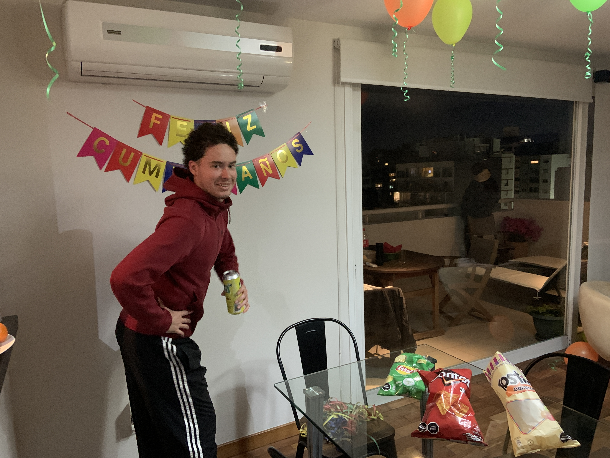Sebas in his birthday celebration.
Then Alex arrives, and they all eat Chili, and they are all in pain. Fede arrives just after they all ate the Chili. They talk about random things for a while, and they listen to music. Eventually Sofe arrives, and Sebas decides that it's a good idea to start cookin the meat for the asado. He puts all the wood there, and puts the meat on the grill.
Alex and Timo then talk about volleyball and chem today. Amaral wasn't happy about the fact that they skipped so much IA time to go to volleyball, but Alex at least got to play in the game, Timo was never put in the court which made him kind of pissed at Seba(the volleyball coach) since he could have been doing Chem all that time. Alex understands and he proposes that Timo should talk to Seba about this.
Eitoku, Sofe and Alex start talking about past events that happened to Eitoku. They look off into the sky and city in the edge of the balcony. I purposefully left some things ambiguous up to this point
I don't know everything, but I think this is how things happened. Eitoku liked Martina at first so he started smoking because Martina liked smoking. And they ended up in a relationship that was sort of a secret. However this relationship was probably really unhealthy. Right now their relationship is over but Eitoku is still addicted to nicotine due to past events. Alex believes that he still smokes because deep down he still likes Martina, this is very unlikely and it's very believable that Eitoku has a nicotine addiction, after all it's the most addictive drug
So sofe starts offering several solutions for Eitoku to stop smoking. Meanwhile Eitoku smokes a few ciggarettes
Then, Timo goes to Sebas, and Sebas admits that he has no idea what he is doing in the grill, so Timo takes over. Lupi sends a message that he is here. Chad and Alex press all the buttons in the elevator so that it stops at evey flor going up and down. Lupi(with his injured ankle[That Alex injured]) had to go through the stairs.
They all started to talk about girls and getting girlfriends in SAAC Volleyball, so they started to look at instagram profiles of girls they might like. Meanwhile, Timo is at the grill, he also doesn't know what he is doing but he is improvising.
The steak is ready, Timo made it medium rare, and it wasn't that bad. People eat.

They eat dead and cooked cows
Then Fede puts some more meat in the grill while everyone listens to Music.
Lupi tries to shotgun a beer but he fails.
Lupi fails a shotgun
Lupi proceeds to scold Timo for unintentionally gathering evidence of Lupi doing illegall activities, but after seeing the video, Lupi concluded that the video doesn't really show his face, and thus it doesn't need to be deleated.
They eat the last pieces of meat and they go inside to talk about other things.
Sofe, Timo, and Sebas talk about physical appearence. Timo mentions that Bruno has great hair.
They all also say that Guillermina is the ugliest girl, but Sofe said that she had a friend who though she was pretty. They also agree that Bruno is the ugliest boy, not because he is ugly, but because everyone else in the class is pretty good looking.
Lupi joins, and they start rating each other and also asking questions like, "Who is the most loveable" and "Who has the prettiest eyes"
Eventually, Alex, Chad, and Fede leave.
Somehow, Sofe, Sebas, Lupi, and Timo start talking about Sebas' fear of death. Sebas is really afraid of death, and he explains how every single outcome is terrible. Living forever sucks but dying and losing everyhing sucks too. Lupi says that the common state of us is death, and that life is the exception, but Sebas still doesn't like that. Sofe is terrified of Sebas way of thinking and she really wants to help him. She thinks that he is being haunted by some kind of demon.
Timo says that one night, Sebas just has to think about death all the time, and not avoid the feeling at all, to get comfortable with the thought.
Then, they start to talk about Sebas' transition from europe to Uruguay. The schools in Europe were less strict and he was more free to do things. When he came to Uruguay, he went to the German school, which was very trash and he hated it. He begged his parents to go to the UAS, but the UAS was way stricter than what he expected. Still he liked it more than the German school, the people were nicer.
He feels that in Uruguay, everyone is too nice, and they all act like NPC's, they are all too nice. Sebas used to mess with people, because he knew those people were rude anyways, but in Uruguay you'd feel bad to bully someone.
Lupi brings up the topic of true friends, back in the US, there was a town full of religious people. Lupi and his friend where the only ones that weren't fully religious and they spent a lot of time just lauphing at other people, and they felt a deep connection because they were the only ones who truly shared beliefs.
Sebas then talks about how he wants to live somewhere in New York, Lupi says that new york feels like everyone is battling against everyone, in new york you fend for yourself.
Then they started to talk about things that made you feel alive, Sebas said how annoying people, getting punched, and just breaking rules makes you feel alive. He does Mixed Martial Arts because he likes getting punched and punching people.
This reminds Timo of the song "Counting Stars" when the lyrics go "Everything that kills me makes me feel alive"
After that, Lupi leaves, and Sofe stays for a little while, until she leaves aswell.
Timo stays to sleep. Sebas and Timo talk about everything. ranging from the origin of hate, the origin of evil, the origin of chaos, the origin of the universe, time travel, true friends, the origin of conflict, beauty, the origin of beauty, the origin of Timo, asexuality and many other things.
First they talk about beauty, and how subjective it is since they both disagree on who the prettiest girl in the class is. They also talk about Eitoku's situation, Sebas knows much more than Timo about it. They also talk about the origin of hate, with a movie called "La Haine". Then they talk about entropy, and existential theories because Sebas is still very scared of death.
Sebas also mentions Timo's tendency to do random stuff like taking pictures of the recent blue moon instead of prioritizing homework.
Sebas tells a tale of his old friend and the adventures he had, like a time where they got into a fight without kicking or punching, or when they drew the nazi symbol and blamed it on someone else. He says that friend was his true friend. True friends are friends that you can always talk to and they feel this really deep connection.
-
Date:01/10/2023 at night
Climate:Sunny but Cold
Location:The house of Sebas
Timo returns home
-
Date:02/10/2023 at night
Climate:Sunny but Cold
Location: United States Greensboro
Megan gets high for the first time with a Cart that Corey has, they go to Walmart and Megan tries to walk on a straight line but she fails. She described it as calm and funny.
-
Date:2/10/2023
Climate:Sunny but Cold
Location: Uruguayan American School
Martina did not come because she has a horseriding tournament.
In Study hall, Dani studies for his Math.
In Chemistry, Amaral expresses how he is mad about how Alex, Timo, and Lupi went to volleyball instead of working on there Chem IA. He says he is doubting about writing them letters of recomendation. They then work on the IA
For physics, people also get started on their IA
-
Date:03/10/2023
Climate:Sunny but Cold
Location: Uruguayan American School
In English class, the Othello review happens, some people forgot everything, others forgot less, others remember most of it. Moskovicks gets mad with a couple of students who didn't finish the review homework.
In Digital Society, they have a discussion about homework and how they should handle research and discussions in more effective ways, they concluded that everyone must do their research at home and the debates in class.
Math
In StuCo, they talk about the auction, when the last bidding day is, and when they will collect the money.
They also talk about the ping pong tournament, Chiara, Mati, and Timo had everything well planned with specific dates. The only not-planned thing was the final prices.
Then Javi takes a whiteboard marker and uses it on the smartboard, staining it, and then everyone lauphs.
In spanish class, this is the last study hall class that they have. Dani's head hurts, so he rests his day while talking to Timo about homework.
-
Date:05/10/2023
Climate:Sunny
Location:Uruguayan American School
Chiara didn't come today becasue she didn't want to
In English class, everyone discusses Othello.
For Digital Society, the class spends some time preparing an interesting debate for tomorrow.
In Math class, Zarsky questions everyone about the last test which everyone failed, he then proceeds to explain how he has noticed people are copying from the answer sheets on homework and not paying attention in class. He says that its fine but its their choice since they are the ones getting bad grades in the tests
In lunch, Luca makes his new batch of sugar solution. He has to repeat all trials.
The volleyball girls now know who is going to SAAC Volleyball. Martina is going despite her failing to attend 70% of the practices because the girl's team is desperate for members
-
Date:7/10/2023
Climate:Sunny
Location:Uruguayan American School
Alex, Fabri, Bruno, Sofe, Timo, and Mati come to school to finish their IA's. Alex has to once again restart his Chemistry IA, he has already restarted it 3 times. Timo finishes his physics IA, Sofe works on her Bio IA, and so does Bruno, Mati works on physics, Alex also talks with Williams about the physics IA and he realizes he has to change his entire approach towards the experiment because it turns out that the buoyant force provides no significan measurable acceleration to a submerged ball. Overall a pretty productive day.
-
Date:9/10/2023
Climate:Sunny and Hot
Location:Irrelevant
Today there is no school. So I will take this chance to anounce something that I don't think I have said. Angie anounced that she was going to invite everyone to her campo at some break day. She anounced this right after the OEE. But everyone moved on and they didn't really plan anything so I don't think it'll be done.
-
Date:10/10/2023
Climate:Sunny
Location:Uruguayan American School
English ClassEveryone starts working on their Oral. Martina(She is back from horse riding tournament) and Matias are talking a lot and Moskovicks gets very mad at them. They lauph but Moskovicks finds that very disrespectful and she starts scolding them a lot
Mosko gives more advice to people.
Digital SocietyThere is a debate, Lupi and Dani vs Mati and San. They debate weather information should be unrestricted in social media or not. Dani and Lupi are against restriction, San and Mati are for restriction.
It is an intense debate, Mati brings in topics like child pronography, but Lupi has to find a way to argue that it should not be restricted. This is because after the last debate of Bruno and Lucas vs Sebas and Timo. Both of them decided to pick a stance in the middle of the question, and thus they agreed imediately and the debate was over. To avoid this, Javi said that both teams must argue on the completely opposite poles of the debate question. Mati has an easier time debating because of the nature of the internet, but Mati is nerfed by having Santino as a teammate, San didn't say a single word during the debate. So Mati had to 2v1 against Lupi and Dani who are both good at arguing
Eventually the debate ended and it wasn't clear who won.
In Math class, everyone reviews the Chi squared value. Mr Zarsky also talks to Chiara about her internal assesment.
In StuCo, they talk about Halloween, and Spirit Week, and a little but about ping pong.
In Spanish class, a new author is introduced, and it's Gabriel Garcia Marquez from Colombia. Sylvia says that he is one of the honours of Colombian people, since Colombia doesn't have many famous people to look up to.
Santino says that Sylvia is wrong, mentioning Pablo Escobar. And Fabri mentions some random futbol player nobody knows, he knows a lot about football.
Sylvia then shows everyone the movie Encanto, and she explains how it was based on a Tale from El Gabo. Sylvia then proceeds to slightly sumarize the story. She says that it's a superstitious town, Fabri asks what does being superstitious means and Sylvia asks if anyone in the class is superstitious. Timo says he is, but he only believes in lucky streaks. Then people mention astrology but everyone agrees that's a very dumb thing.
Sylvia makes a summary of the events. A man called Bayardo San Roman will discover that her spouse isn't a virgint. Sylvia then asks "De que se va enterar Bayardo San Roman?" San responds saying "Que ya se la pincharon" and all the class lauphs. Sylvia jokingly says that Santino's metaphor is worthy of a prize.
In volleyball, Sebas says that the people travelling to SAAC will be revealed tomorrow. Matias and Martina talked a lot in practice, at one point the coach even told them to stop talking.
-
Date:11/10/2023
Climate:Sunny Cold
Location:
In ToK, I don't remember what happened
-
Date:12/10/2023
Climate:Sunny Cold
Location:
Moskoviks has fallen and broken something, I don't remember exactly what she broke. Glady's replaces her instead. Gladys is a new substitute teacher. People work on their oral.
The Digital Society class has another debate. Timo vs Chiara and Angie. The questions is "Should automation and remote work be encouraged or does it threaten job security and human interaction." Timo hadn't prepared anything and thus he had to improvise a lot, luckily some people came to his aid. Mati randomly joined his team, starting to defend timo's claims and Bruno asked Chiara questions about sources. Lupi then proceeded to attack Mati's claims, and then Lupi and Mati (2 people that weren't in the debate in the first place) started debating with eachother. Javi ocassionaly did what he calls a "parenthesis" were he would start talking for an extended duration of time until someone reminded him that there was a debate going on. Technically Nikki was supposed to be Timo's teamate but she didn't do anything, much like Santino in the last debate.
The Math applications and interpretations IB class has a Test, it's acutally a very easy test, but Eitoku suddenly misses it. It is unkown why. After everyone finishes the test, Eitoku appears, and he talks to Mr Zarsky. In order to go to SAAC, all students have to have a grade higher than a 59%. Unfortunetely, Eitoku had a 59%. So he tried to find out ways to increase his grade. Mr Zarsky offered some solutions. Zarsky wanted Eitoku to go so they landed on the following plan.
The plan- Eitoku would give Mr Zarsky a predicted score for today's test
- Zarsky would input the score before the quarter ends.
- Eitoku would then take the test (Eitoku said he would study a lot and that he would be sure to get something higher than an 79%)
At least that's what I understood from the situation
Sylvia starts teaching, Fabri and Lucas are talking a lot and making jokes about things. Sylvia talks about Kabbalah's after Dani mentions that Lopez doesn't wear clothes that he used in a bad day. A SEM ambulance arrives. This class often sees that same type of ambulance arrive very often for some reason
They read the first few pages of the book aswell.
In Homeroom, time gets wasted in the most efficient way possible. But new information is aquired, Javi and Sylvia will join the ping pong tournament.
For chess club, Martina and Eitoku are chatting at the library chess table. Timo joins them. Martina puts her hand on Eitoku's chest, sayint that it's weird that he doesn't have breasts. Eitoku tells her to get off because Martina is touching him in a place where Eitoku had broken his rib. Apparently it wasn't the first time Marina had accidentally touched Eitoku in one of these spots and he doesn't like it. Timo theorised that was just Martina trying to find Eitoku's "weak spots" in order to defeat him
Eitoku then plays a game of chess against Timo, Martina leaves for volleyball, she used to stay in chess club, but since she was chosen to go to SAAC, she prefers to practice. Alex and Chad arrive, and Milagros also arrives. Eitoku and Timo play a game, Chad and Alex also play a game, a game of clash royale. Eitoku remarks how Martina acts more childish when talking to Chad and Alex and he doesn't like that, but unfortunately Eitoku was too focused on talking while Timo destroyed him at chess. Eitoku then joins the rest in Clash Royale and then Timo joins. So they all started playing clash royale in chess club
In volleyball, everyone plays a match for the entire practice. Nothing much to say, maybe I remember the teams, let me write them down.
Team 1- Matias
- Chad
- Kylah
- Pauli
- Martina (Barely played)
- Mateo
- Luca
- Fede
- Eitoku
- ALex
- Timo
- Marco
- Tomas
At some point they changed setters because Matias' team never got the chance to spike.
-
Date:13/10/2023
Climate:Sunny, the days have started to get hotter now
Location:
In Study Hall. The economics people study for economics, Salma says that everyone is overthinking things. Luca and Chad play Clash Royale, Timo does his lab, and everyone works on stuff.
There is an assembly where Nico Bruni talks about SAAC. Also people watch the OEE video made by Sofe. Elder Kelly won his cookies, but the cookies where lost for a second and he started going crazy about the cookies but he got them eventually
Then they have an amazing 30-minute break. Martina and Eitou hang out in the flex space, while Bruno and Timo write many quotes in the ToK whiteboard. Fabri, Luca, Dani, and Mati also arrive and they play some clash royale games. Lucas is also there, he plays several games with Timo and Lucas won all of them.
In ToK, everyone does their presentations, but Santino isn't here, so the group of Fede, Bruno, and Santino misses 1 slide (The Slide of Santino). In the presentation, Fede gave insightful information while Bruno gave very extraneous information.
The other group started their presentation but couldn't finish it.
The Chemistry class has it's final IA work day. Amaral shows the class an example of a perfect IA where someone measured the relationship between different brewing tempertures of a tea and how that affected the reaction of a blue abottle experient.
In Lunch there are tacos, Timo, Alex, Sebas, and Chad decide to seat outside. They usually sit inside in a table with the rest of the class, however that table is really cramped and uncomfortable because it has the entire class. They talk about Bruno, about ping pong, and about other things.
In Physics class, the HL's have been having all HL classes lately. They have learned about Thin Film Interferance and now they learn about Resolution. It's also worth noting that there are only 3 HL's that remain. Those being Dani, Alex, and Timo. The ones that left are Sebas, Martina, and Ethan.
After that, some people stay and others leave. Lucas and Matias are chatting in the cafeteria waiting for their volleyball game.
People start getting prepared for the volleyball practice, they do practice spikes, and they start warming up.
And then, the other team starts arriving. A while after the official practice, the game begins. The other team is pretty good aswell. Here are the highlights.
- Powerful enemy spikes from the enemy team leave everyone impressed
- Lupi joined despite having a bad foot that he still needs recover from
- Amazing center spike from Alex
- Good serves from Eitoku
- Incredible spikes from Chad
- A serve from chad hurts one of the oponents' fingers and he can't play anymore, the team lauphed at them and everyone doesn't like the team becasue of this
- Taccone sadly lands badly on his foot and he couldn't play anymore
- Clean spikes from Mati
Then, the match finished.
-
Date:14/10/2023
Climate:Sunny
Location:Uruguayan American School
The boy's volleyball team have a practice, and the girls have a volleyball match.
At first, Mati, Luca, Martina, and Thomas are playing spikeball in the Wooden Gym. Chad, Alex, and Timo arrive at the same time to the school. They start spiking until Timo's arms start to hurt for some reason so he stops playing. Also the girl's volleyball match starts.
Normaly the girls lose by alot in these volleyball matches, but this match was closer. I don't remember who won though, but what matters is that they played well.
Later that day, Mili once again tries to do a Juntada in her house, she has been trying to do one for a long time, but it never works out because not enough people sign up for it. And that is exactly what happened, no one signed up to it. This happens because Mili does this with very little anticipation.
Santino wants to go though, he is in Argentina and he asks if Fabri can come to pick him up, Fabri says that he will, Santino shares his location, and he effectively is not in Uruguay. But Fabri never arrives so he can't go to Mili's. The joke is extended by Fede who says he is in Zambia, then Ethan who says he is in saturn, Dani says he is in the edge of the observable universe, and Martina esta en la concha de tu madre. Farbri then deciphered a route that goes through all of these locations. This is all because Fabri is 18 and has a driving license by the way, I don't think I have mentioned that before. Anyways if you thought this was the end of the joke you are wrong. Fede says he is with Moskovicks and that she is coming along with all the dogs and cats she has. Then Fede says Glady's will also come, but Fabri refuses to take gladys claiming she will break the suspension.
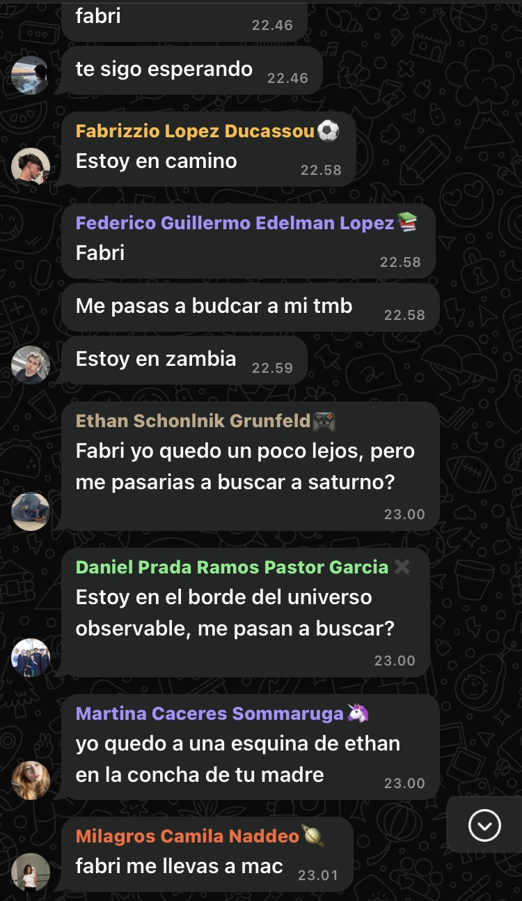varied locations
Megan tells the Table Tube Gang groupchat about how she is failing chemistry because she is hanging out too much with the Swamp Dwellers, doing adventures and suff. She doesn't have enough time for homework. She is struggling mentally aswell. She is stressed about work, she says she has mini panic attacks and Fede tries to convince her to get help. Megan says she won't do it right now but if this continues she will. But Fede is really preocupied about this and he wants Megan to find help now. Timo proposes writing, which Fede hates but Megan will try it anyways. Finally, Fede insists for Megan to tell fede if anything really bad is going on with her. Fede ended up crying because of what was happenign to Megan.
-
Date:15/10/2023
Climate:Sunny
Location:
The lore of Fabrizzio's trip around the universe gets deeper, Fabrizzio arrives to where Santino resides, but Santino has left to Switzerland in a plane. San asks Fabri to come pick him up in Switzerland but Fabri says its too long. San jumps out of the plane.
Fabri is in tres cruces, but Santino can't get there, he doesn't have enough fuel. So he has to land in Florida, however he gets confused and lands in United States Florida instead of Uruguay's Florida. Fabri has to go get him
Also Sebas meets Constantino Safari in arocena, he also buys some oranges.
-
Date:16/10/2023
Climate:Sunny and Hot
Location:Uruguayan American School
In Study Hall, Math AI people study for Math AI and do the homework. For ToK, Ethan and Timo present the presentation that they didn't do last time.
Anyon and Santino payed for the ping pong tournament. And the brackets were finalised.
Mr Turner recommends some books from Kazuo Ishiguro
- "Remains of the Days"
- "An artist of the floating world"
- "Never let me go" This one is about human cloning and organ harvesting
Remains of the Days
An artist of the floating world
Never let me go. This one is about human cloning and organing harvesting.
Santino presents his part of the presentation, everyone finds his presentation so funny that Mono and Bruno start crying from how much they are laughing. It's specially funny because of Mr Turner's comments and questions and also the fact that Santino clearly doesn't care about the presentation.
Mr Turner anounces he has once again started paying his student loan. Now he pays 1000 per month. Very sad.
Chemistry reviews pH calculations for weak acids and bases as well as buffer solutions.
In Lunch, Lupi, Chad, Alex, Luca, Lucas, Timo, and Tobi practice ping pong for the ping pong tournament. Eitoku goes to the bathroom and vapes, leaving a sweet scent in the air.
For physics, the HL's learn about resolution in diffraction gratings aswell as a bit about the doppler effect. But before that, Sebas spent a long time talking to Mr Williams about his IA. Timo and Alex checked what the SL's were doing, Martina and Mati were working on their IA while Luca and Chad were playing wordl.
In Homeroom, Mr Taskin comes to Sylvia's room ant talks to people. Eitoku complains about Martina to Mati, and Bruno explains how he only cheated a little bit on the Biology test.
-
Date:17/10/2023
Climate:Cloudy and Cold
Location:Uruguayan American School
Ms Moskovicks is back, she has a cast because she fell. She explains that some robbers entered her house. The robbers moved her furniture around and then she tripped on the unusually placed furniture. She starts talking about the Oral, she is about to show the class an example of a good Oral, she asks "Is everyone ready?" but not everyone responds. She gets unreasonably mad about this. Martina and Mati giggle a little bit about how she got so mad, unfortunately Mosko noticed this so she makes a bid deal about how people need to respond to her.
They listen to the Oral and they all give their opinions about it. Dani said he didn't like how the person giving the Oral was only listing things. But Mosko argued that this is a good way to do your oral since its easier to memorise and the bullet points are more easily used.
Digital Society starts their IA
Math class has a mini-mock exam with a high curve. No one liked the exam, everyone hated the exam a lot.
StuCo talks about the Ping Pong Tournament, Halloween, and other things.
Spanish class talks about a book where there is a celebration with alcohol, so they start talking about drinking, and then about age, and then about who can drive legally. Santino mentions he can drive legally in tacuarembo where he has a permit, Sylvia didn't know there was a way to legally drive in Uruguay before 18
In volleyball, Coach Sebas anounced that the volleyball team has a match in saturday.
-
Date:18/10/2023
Climate:Sunny
Location:Uruguayan American School
Dani, Timo, and Chiara talk about Moskovicks vs Coyle in the morning, Chiara and Dani liked Moskovicks better than Ms Coyle. Timo strongly disagrees.
Lucas takes a transit rules test.
Ping Pong Tournament
Sylvia vs AnonA close math, but Sylvia wins.
Eitoku vs RodrigoAt first it's even, but then Eitoku takes a huge advantage.
Alex vs SebasThis match was destined to happen. Sebas gets demolished
Chad vs SantinoIt's even, but Chad wins
San Lost
Ping Pong Lunch
Lucas vs Tobi
Tobi is really mad that he was put against Lucas in the first match, but he can't do anything about it and he loses.
After that, Alex practices against Chad, and Lupi practices against Timo
-
Date:19/10/2023
Climate:
Location:
Ping Pong Tournament
Sylvia vs EitokuEitoku wins
Fabri vs TimoFabri lost pretty quickly
UNOFICIAL Luca vs AlexIt's very even, alex wins 11:9
Digital Society talks about microchips, sleepcycles, nightlight, magnetoreception, slime mold, and other interesting things while everyone tried to work on their IA ideas. It's Rodrigo's birthday, so he gets two chocolates from Timo
Mathematics Applications and Interpretations starts Calculus. They see what are limits and how to use them, basic stuff. Then Chiara talks to Zarsky about her IA.
Ping Pong Matches.
Luca vs AlexLuca loses 11-5
Ivan vs JaviIt's very close but Ivan wins
Lupi vs IvanIt's surprisingly close, but Lupi is still good enough to win clearly.
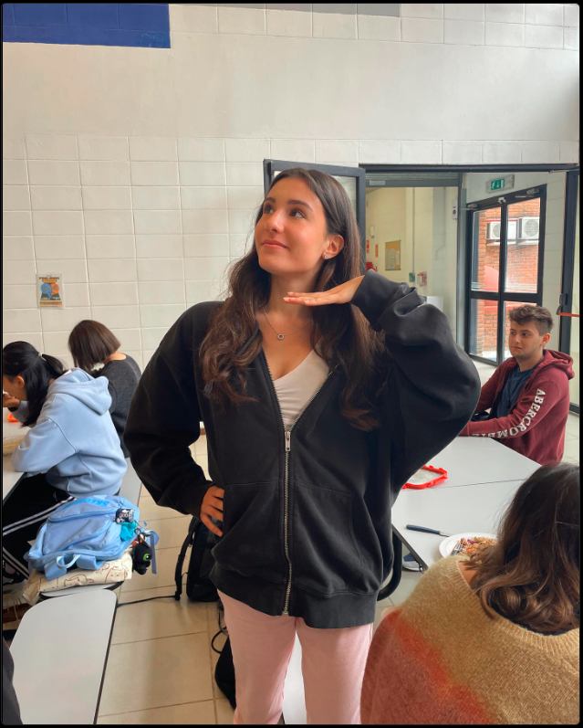"Better late than ugly" - Chiara
In chess club, Martina decides to skip volleyball, and Pauli(Timo's Sister) has a broken finger, so she has to skip volleyball. They play Clash Royale, and then they start to play chess. At one point Mr Turner arrives, wanting to play against the best. They put him against Chad, and Chad wins 3 times in a row. Timo was unable to come because he was doing something for his physics IA.
Volleyball practice also happened. The practiced serves and then they played a match.
-
Date:20/10/2023
Climate:SUnny
Location:Uruguayan American School
It's parent teacher conference day. Timo comes to school anyways to finish an experiment. He sees Lupi and Lucas while he is there. Everyone is working on their IA's or on experiments while all the teachers have their meetings with the parents. But they can only do their experiments in the teacher's lunch breakes.
Mr Zarsky has some meetings that will impact the Math AI class in the future
Timo shows his song "Cardiac Arrests" to Joaquin, who then gives him some advice on making music.
In case you want to listen to it.
They all go to volleyaball, some arrive late.
-
Date:21/10/2023
Climate:Sunny
Location:Uruguayan American School
The volleyball team shows up late and Sebas is kinda mad. The first match doesn't go that well. And neither does the second match.
But they do win the third match, and then they lost the final match
Highlights- Amazing fast spike from alex
- Mati defends with his head and the UAS team wins a point
- Alex serves really badly but he accidentally scores a point due to the serve being unexpected
- Many people are serving very badly
- Taccone leaves because he got mad since they didn't put him in the field
- Mati does really good spikes.
Overall good blocks
After the match is over, they all salute the team and rest, they do their own thing. The girls volleyball team won the game. After a short while, Luca, Lupi, Alex, and Timo find themselves in a bench talking and watching the current volleyball match. The team they had just played against comes to them with a lot of questions. They are very interested by this English speaking school, and they are even more surprised by Alex who lived in Korea, Switzerland, and was born on Thailand. They ask a lot of questions, and eventually they leave.
Luca and Lupi leave, leaving Alex and Timo alone, Alex has called Eitoku multiple times, but he didn't respond. Timo and Alex play clash royale in the reception, Alex wins 6-1.
Eitoku appears, apparently he was taking a nap in the flexspace. Eitoku proceeds to destroy everyone in clash royale. Then the chess tournament starts.
Alex loses against a random player because he decided he didn't need the queen, Eitoku loses against Timo because he forgot pins existed.
In the second round, it's Alex vs Eitoku. Eitoku loses because he forgot discovered attacks existed, and he lost his too.
They play ping pong and also watch the Basketball match. Timo tries some of Eitoku's ricballs with cucumber aswell.
Eitoku is now playing against the guy that had beaten Alex. Timo is playing a random girl, and Alex is free. Timo quickly beats his opponent, and they go to play ping pong for a while. They meet this kid who is not from the school, he is just participating in one of the many events here. He is 13 but he is actually not bad at ping pong. Eventually, Eitoku joins them, and they all play ping pong. The random kid even beats Eitoku at some point.
After ping pong, Alex and Timo play their final match. However Timo got distracted and lost a bishop and a horse at the beginning. Despite the unfortunate start, the game went on for quite a while, eventually Alex also lost a horse and a bishop, but he had more pawns which he used to get a queen and win.
Meanwhile on united states, Megan has a homecoming party where there was alcohol and drugs, but the drugs were apparently not strong at all.
-
Date:22/10/2023
Climate:
Location:
-
Date: 23/10/2023
Climate:Cloudy
Location:Uruguayan American School
BreakLucas and Chad play against each other in the ping pong tournament. Chad wins.
The ToK class talks about science, books, and meditation.
ChemistryChemistry starts to learn about redox reactions and hwo they are used to create electricity.All acids and bases are electrolytes because they can all carry charges through ions. Lemons are acid so they can carry electricity. Alex and Lupi use the power of several lemons to turn on a blue light.

 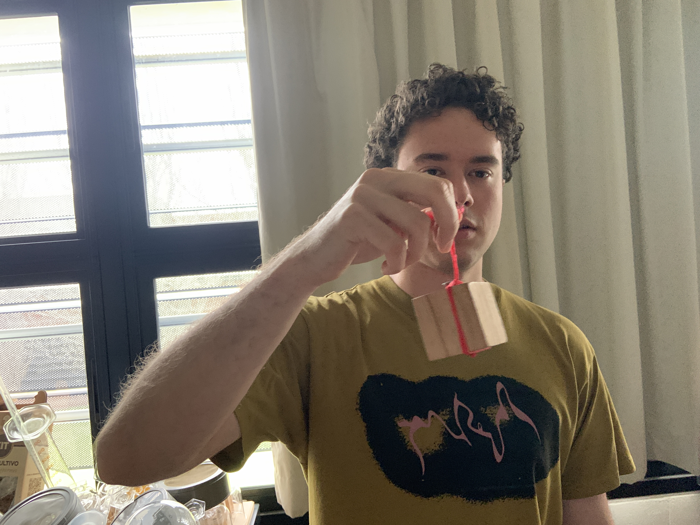
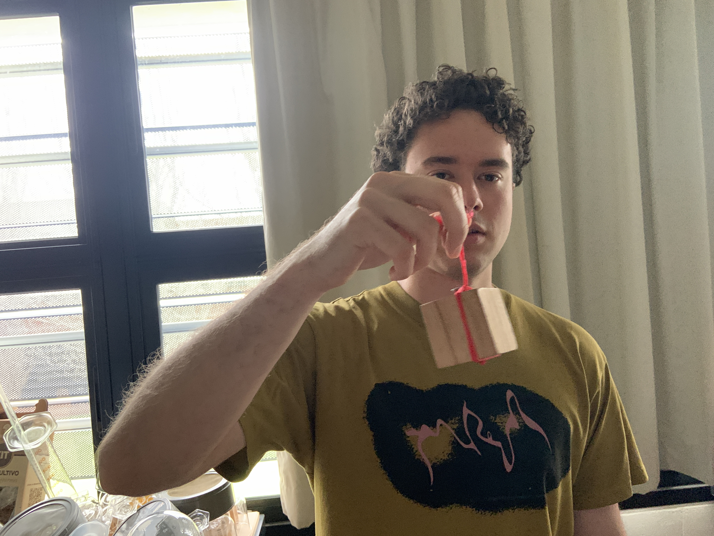

The Lemon Boys
Ping Pong
Lupi vs TimoTimo starts winning 8-1, then lupi makes a slight comeback 10-7 but it's not enough and Timo wins. After this match, Lupi wanted to play a unoficial match against Timo. Lupi played better in the unoficial match which shows that he lost because he was nerveous and less aggressive.
Eitoku vs ChadI haven't watched it but chad wins
Timo vs AlexIt was a close game overall. Alex won 21-19.
The finals are the same as last time, Chad vs Alex
-
Date:22/10/2023
Climate:Sunny
Location:Uruguayan American School
The ping pong tournament finals occur.
.jpg)
Some clips of the epic match
-
Date:24/10/2023
Climate:Sunny and Cold
Location:Uruguayan American School
In Math class, Zarsky talks about the parent-teacher conference meatings that he has had with members of the class. Many parents had said that the students fail to focus because the class is always talking too much and too loudly. So Zarsky decided to create a seating arrangement.
However many people agree that the seating arrangement doesn't solve anything because Zarsky still sat everyone with the people that they usually talk to.
In the StuCo meeting, the Halloween event is discussed, elementary kids will go trick or treating through the corridors and the seniors will give candy. They discuss a lot of things.
-
Date:25/10/2023
Climate:Sunny and Cold
Location:Uruguayan American School
Sebas and Lucas have a chemistry test, but they barely understand the topic, they go to the upstairs flexspace with Timo to aks Amaral some questions. Amaral sees how lost they are and he says that the test will be moved to monday
Mati, Salma, Timo, Angie, and Luca go to Jeff's office and discuss buisness. Jeff always makes a deal with the seniors. They sell burgers at Jeff's big 3x3 event, and the seniors get money. Mati tells Timo to create a sign up sheet for everyone to choose what shift they will be working at.
-
Date:26/10/2023
Climate:Sunny
Location:Uruguayan American School
English class goes and practices their Oral. Timo, Mati, and Sofe talk about the 3x3. Sofe has this idea for Seniors to also buy snacks for extra profit. Mati likes the idea, and later that day he creates a group called Alpha Seniors. Where he puts all Seniors that organise stuff for money and tells them about Sofe's idea.
Those in the group.- Chiara
- Mati
- Salma
- Luca
- Timo
- Angie
- Fede
In Digital Society, Javi says that this is the last day to work on IA's
In Math, the class is introduced to the concept of a derivative. Sofe talks to Sebas about a party that her boyfriend is making. She invites Sebas to it, and Sebas seems really interested, specially because Sofe talks about how she could hook Sebas up with someone. Sofe then created a whatsapp group with Lupi, chad, and Alex in it.
In Lunch, Alex and Chad play clash Royale.
In Spanish class, they learn more about the book "Cronica de una muerte anunciada". While the ToK class has a seminar. Turner always likes inventing new random stuff and stressing his students because no one knows what he is doing. His new amazing method of teaching is the seminar since he says it prevents cheating completely. It's essentially a class discussion where they debate about questions in the board.
Chess ClubIn Chess club, Timo goes against Alex. Timo is still bitter about Alex beating him in the chess tournament, he has been training for this moment ever since. Timo wins
Mati and Timo go to help with StuCo decorations, but Timo decides to come back shortly after.
Meanwhile Mili plays against Josefina, who is a high-schooler that has some mental problems. Josefina annoys Mili until Mili decides not to play anymore.
Lupi realizes that he is in the group Sofe created about her boyfriends party. Lupi makes it clear that he will not be attempting this random dude's birthday, specially because it was expensive and it was on a monday night.
Alex and Chad play clash royale while Mili is talking about the past. In the past, Mili was friends with Alex, it was before Chad had arrived at school, Mili even had pictures with Alex. When Mili arrived to school, thhe took shrekked pictures of everyone and posted them on instagram, and he showed Alex one of those photos.
Mili then started talking about prank calls. They once done a prank call to Bruno, they claimed that Bruno owed them money, Bruno was nerveous. They had in another ocassion prank called Marina once she had left. They also prank called Lupi, but Lupi just lauphed all the time since he probably new it was a joke
They had tried to prank call many others too but some didn't work.
Alex then expresses how the day that Fede asked him to Prom was "one of the top 3 worst days of my life". Everyone knew that Fede was gay even though he hadn't revealed it, so for a little while everyone thought Alex was gay too. After that, Alex being gay became only a joke.
Alex then proceeds to say how no one in the class has beef with anyone, except Fede. But Fede gets mad easily so it doesn't count. They also talk about how they don't like Sofe, Timo defends Sofe by asking why they don't like her, but no one really gives a reason.
Fede then gets mad at Timo for not showing up to put decorations in StuCo, Timo apologises
They play volleyball
At the end of practice, Kylah arrives and shows everyone a design for the uniforms. They don't all agree, but they have to order it now, so they make some last minute changes and call it a day (the uniforms are fire but that's just my opinion)
-
Date:27/10/2023
Climate:
Location:
In English class, Ms Moskovicks decides that everyone will go outside to study and practice for the English Oral, this is the first time in a long time that Mosko does something that the rest of the class actually likes. Fede sits with Dani; Chiara sits with Martina; Sebas, Sofe and Guillermina are all wearing green and they all sit together. Alex, Chad, Lupi, and others are sitting at another table. Most of them are wearing blue.
They are all practicing calmly, occasionaly asking Ms Moskovicks for some advise. Suddenly, Timo arrives late to the situation, he sits down with Sofe, Sebas, and Guillermina and they talk about Sofe's party. Sofe's boyfriend Juampi is graduating and he is making a big party. Sebas was planning on going, but he immediately decided not to go after being informed that the party was on a monday night
"Fue una broma, una jodita, un chiste, no era en serio"
Nico Menendez apparently said "Fuck Palestine" which caused him to get suspended. Palestine is at war by the way.
-
Date:29/10/2023
Climate: Sunny and Hot
Location:Uruguayan American School, Portones Shopping, unkown Party location
Alex, Chad, Luca, Timo, Lupi, Mati, and Fede go to volleyball practice.
Lupi practices setting with Alex
Later that day, Timo and Sebas go to see the fnaf movie, Sebas does not know anything about fnaf and Timo knows a lot.
Salma, Angie, Tania(Salma's Sister) and Martian meet with Valeria who is in Uruguay. They meet up at some party.
The volleyball team also makes some final decisions pertaining to the SAAC Sweaters.
-
Date:29/10/2023
Climate:Sunny
Location:Uruguayan American School
The Seniors must now sell burgers at Jeffs 3x3 Basketball tournament.
Ethan and Dani set up the whole area where people are going to get Burgers, and people started arriving, like Salma, Santino, Alex, Sebas, Chad, Luca, Martina, and others. Some say that the hours in the google sheet where everyone signed up was wrong because the tournament started at 10 and the google sheet said that the first shift was 9-12. But Salma said that it was good because it gave people more time to prepare. Also people eat some of the stuff they have.
.jpg)
They eat some of the stuff they have
Timo arrives, he is the one that made the shift an hour early so everyone is kinda mad at him, specially Sebas. Alex also washes some of the lettuce for the burgers.
They all start setting things up, Sofe makes some posters that say all the prices for the burgers, the popcorn, the gatorades, and medialunas. But suddenly, rain starts to pour, so people get things inside to the lunchtables. All of Sofe's signs are ruined
Rain ruins everything
Salma and Sofe grab a tray from the lunch and they start cutting tomatoes and lettuce for the burgers.
After that, Sofe starts to make new posters since the others got all wet. And after a while, the rain stopped.
Everyone put stuff back outside.
Alex brought Lupi's volleyball, he went with Chad, Martina, Timo, and Sebas to play volleyball. Then they played foursquare, and then Alex had to leave. Meanwhile everyone was working.
.jpg)
People in work
Mati grabs the coffee machine and he sells a medialuna to sylvia caballero the teacher. Then suddenly, a lot of people start coming and requesting burgers.
So they all start working very hard, Santino is burning himself with the Parilla from all the burgers he is cooking. The parilla is not that well designed which causes it to burn whoever uses it. Bruno arrives does absolutely nothing for a while. Then he puts a log in the fire and stands in everyone's way. After that he resumes to doing nothing.
.jpg)
San burning himself
Chad and Martina realize that they should probably do their job so they go back to the burger stand. They quickly realize there is not much to help with. This is the concept of diminishing returns that Bruno was talking about. Bruno argues that everyone is working perfectly without his help, and thus his presence would only disturb their workflow, this is why Bruno sits down and does nothing. However people at least appreciated how Chad and Martina at least showed some willingness to help.
.jpg)
Bruno doing absolutely nothing and being proud of it
Martina also lets some people try her milk tea, some strange liquid I have never heard of. It's not good at all in my personal opinion.
Chad leaves, bye chad, he is such a chad.
Then everyone eats some burgers after they finish with the multitude of people
.jpg)
They eat :)
Then, out of nowehere, Valeria Soria with her boyfriend Alex. And they start talking about random things, some girls start immitating Alex's british accent. Worth claryfing that this isn't Alex Derzic, it's Alex Rihoy, I don't know anything about him but he seems really cool.
.jpg)
People resting in the sun
Martina's mom comes after some time, her name is Natalia Sommaruga, she starts speaking to everyone about random stuff. Santino proceeds to tell everyone a tale about how him and his friends were trying to pop a watermelon with rubber bands, and some old lady called the police on them claiming that they were building a bomb or something.
Anyway, some people are just lying down, doing nothing, and eventually people start leaving, there is nothing really important happening. Lupi was unable to come because he was making his cedula, Lucas was also unable to come because he was taking a driving exam.
Interesting Details
So the seniors actually ended up doing a terrible job and breaking a lot of rules. Some important details are the following: people grabbed things from the cafeteria when they weren't supposed to; Timo put the remaining burgers in the fridge instead of the freezer; and people stole some staff shirts that didn't belong to them. People who stole staff shirts were Alex, Timo, San, and Mati.
-
Date:30/10/2023
Climate:Normal
Location:Uruguayan American School
It's spirit week!!!! This day, Anything but a back pack.
Study HallChem students practice for the the Chem HL test.
ToKThe ToK class has a seminar discussion of the questions "Can knowledge in the natural science be created via other methods excluding the scientific method?". A heated debate were Fede took the stance opposite to what he believed in for fun. The consensus is that no Scientific Knowledge can be created without the scientific method, only scientific theories. It's important to specify that scientific knowledge is the knowledge that needs the scientific method. Other types of knowledge can still be created without it.
ChemChem class has the Chem HL Acids and Bases test. Everyone does pretty good, apart from some tiny stupid mistakes. They go over the test afterwards and Lucas kinda wants to kill himself
Lucas is worried
LunchFabrizzio, Dani, Martina, and Mili talk about how Guillermina takes 30 minutes to park her car. And they start talking about creative ways to park a car.
Lupinacci plays against eitoku 7 times, he loses the first 6 and wins the last one, leaving and calling it a day. Alex also plays clash royale against Chad.
Mili says that she used to spend money on a large variety of games, Dani and Fabri don't respect that. Martina then says how she spent a lot of money on Genshin Impact. And Mili starts listing many games were she spent money on, games like fortnite, candy crush, and others that I don't remember.
PhysicsThe Physics class has a lesson that many people had trouble understanding. Mr Williams introduced the famous equation E=mc^2 and Timo was happy about that.
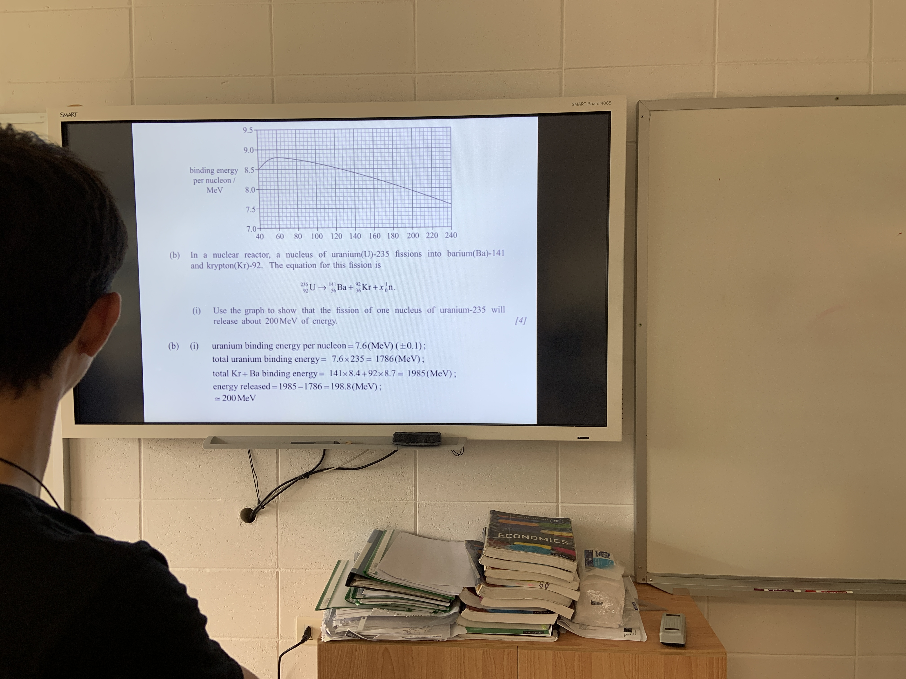Nuclear Physics
Later that day...
Martina watched the new FNAF movie that came out recently, and she wants to dress up as Freddy for Halloween (tomorrow). She wants others to dress up with her as the other animatronics so she asks them throught the class groupchat. Ethan asks how is anyone supposed to get a custom at 8:00. She says that she is making a bowtie out of paper, and is going to come with all brown. She gets someone's brown sweater, so she is improvising.
Also Bruno leaks the first 5 minutes of the FNAF movie, he has the whole movie but he could only leak the first five minutes due to the whatsapp limit.
-
Date:31/10/2023
Climate:
Location:Uruguayan American School
It's Halloween Today, here is what everyone dressed up as.
Person Custome Lupi Lupi Chiara School Girl Mati School Boy Eitoku MUN Eitoku Dani Construction Worker Timo Gaucho Martina Freddy Fede Math Test Sofe Withc Ethan Top Gun Maverick Salma Football player Bruno Bruno Santino Santino, and CapeMan Angie Angie Nikki Came in pijamas Lucas Lucas and Damien Luca Luca Chad Cool Chad (Sun Glasses) Alex Alex .jpg)
.jpg)
.jpg)
.jpg)
.jpg)
.jpg)
.jpg)
.jpg)
The Costumes
So in English class, Sofe, Chiara, Dani, Lupi, Alex, Timo, Ethan, and Sebas go to practice their Oral in the flex space.
.jpg)
English in the flex space
At 9 they go back to the English Class were Moskovicks made a time table of all the orals next week. Martina trips on Timo's boleadoras twice. (Boleadoras are weapons used by gauchos in old times)
Javi dressed up as a pirate.
Math class learns about power rules of derivatives, and how to completely avoid ever using first principle.
Martina did end up dressing up as Freddy
Spanish class does a chart where they see what characters knew that Santiago Nasar was going to die.
For Homeroom, the class is seperated into girls and boys and they all talk about stress and how it impacts genders differently. Sylvia also showed everyone that the books are relevant to the real world since a news article used a reference to one of the books that the class was reading. Cronica de una muerte anunciada
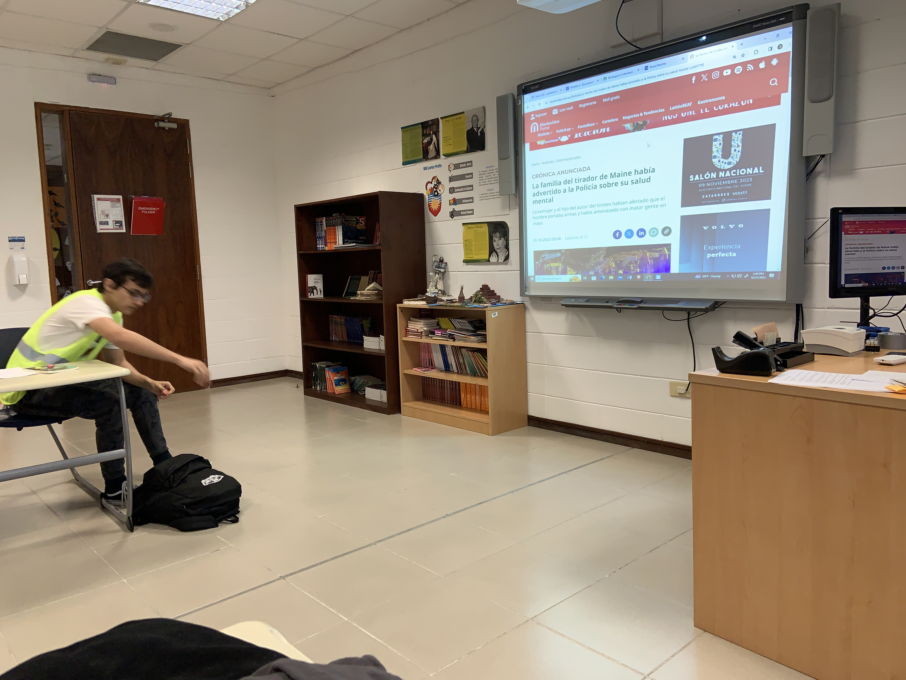Daniel
In volleyball, everyone plays King of the hill with a set of random teams. They do that for the whole practice. Chad, Taccone, Lupi, and Luca calculated lines to be in the same team, but they still lost to freshmen sometimes.
-
Date:01/11/2023
Climate:Cloudy and Rainy
Location:Uruguayan American School
It's Adam Sandler day, a StuCo event. People must find an online picture of Adam Sandler and dress as him in that picture
ToK has 2 seminars, The first one the discuss the pace of eithcs and the pace of science, and they conclude that Ethics outpaces Science, but science never catches up to ethics, and that is why sicence commonly violates ethics in cases like animal cruelty.
Chemistry class learns about redox reactions in acidic conditions which allows for the balancing of reactions by inserting electrons and hydrogen ions
In lunch, everyone plays clash royale, and NHS members practice their NHS pledge.
A second of the practice of the NHS Pledge
Physics class has moved the test to the next friday once again. They start learning about half-life and radioactive decay. They do this by pouring beer into a volumetric cylinder and then measuring the foam and the liquid in 20 second intervals. Williams does not let anyone drink the beer unfortunately, so the beer is wasted.


Half Life
In Homeroom, Taskin congratulates everyone who met the november first deadline for college applications.
Volleyball practice is quite normal this time, nothing to out of the extraordinary.
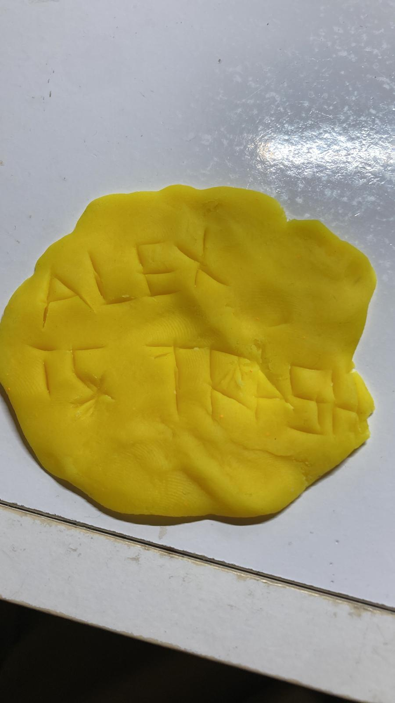This was sent through the SAAC Volleyball groupchat
-
Date:02/11/2023
Climate:Rainy cloudy
Location:Uruguayan American School
It's Duo Day, a StuCo event. Tell a friend a dress in the same way as them to win class points
In English class, Moskovicks orders everyone to work on their orals. Everyone starts making their outlines, at one point Moskovicks says that people can go ask Ms Anyon some questions. Mili and Mati go but Ms Anyon refuses because she is afraid of breaking IB rules. The IB Rules state that students should only get assistance regarding the individual oral from the official teacher, and Ms Anyon is not the official teacher.
The Orals are next week, and people need to prepare their outlines and extracts and turn them in tomorrow with no exceptions.
Digital Society continues to work on their IA.
For Math class, Zarsky is absent, so the whole class has study Hall. People mostly play clash royale or study for english.
In Lunch, Eitoku plays the guitar in the music room and people play clash royale in lunch.
Spanish class reviews the Chronicle of a death foretold.
Fede was helped in his art project and he expresses his gratitude to sylvia
For homeroom, Ethan creates an hangman game. The answer was the entire alphabet except the letter y.
In chess club, people play clash royale, say funny pick up lines, and do math. Eitoku and Timo play chess once so that they could still call it a chess club.
In volleyball, people practice with Flor while the girls are having a match, unfortunately the girls lost the match but it was still pretty good.
Also later that day, Timo tried learning the safety roll as a CAS Activity
The safety roll attempt
Late at night, Sofe's printer breaks and she is unable to print her extract in colour, which was compulsory. Timo prints it and has his sister(paula) deliver it to her the next day.
-
Date:03/11/2023
Climate:Rainy
Location:Uruguayan American School
Today it's formal day, a StuCo event, dress formaly to win class points. Dani gets here in a suit. Unfortunately it's also the day of a physics test which Dani is not looking forward to.
ToK starts the topic of Natural Sciences
Everyone must turn in the English Oral extracts and outlines. Sofe receives her extract from Paula. But Mili couldn't come to school, and neither could Chiara. Moskovicks gave both of them an F. They complain about it in the groupchat, but Santino doesn't want them to complain in the group chat so he complains about the girls complaining in the groupchat. Nicole says that it's the class' groupchat and anyone should be allowed to say whatever they want so she complains about Santino complaining about the girls complaining in the groupchat. Then Santino kicks Nikki from the groupchat.
Chemistry class learns about battery circuits and the redox reactions within them, and how salt bridges of jell are used.
Chad has computer science at the same time that Chemistry is happening. The Mr Javier Cadenas sometimes lets the class leave a little early for lunch. Chad uses this extra time to pay a visit to the chemistry class which usually does the opposite. The chemistry class usually stays in class for a longer while doing experiment. or learning about chemistry. Lupi once said "Call that boy the bell" because his arrival indicated the end of class.
They stayed for a while in the chemistry class, however they weren't doing experiments or anything related to chemistry. They created and started solving a problem on the board. Chad wanted to calculate his vertical jump height. Chad has a video of him jumping so they have the time taken to reach maximum height. They know the acceleration due to gravity is 9.81, and they know that Chad reaches 0 velocity at the top, with this information they can find out the jump height using SUVAT equations.
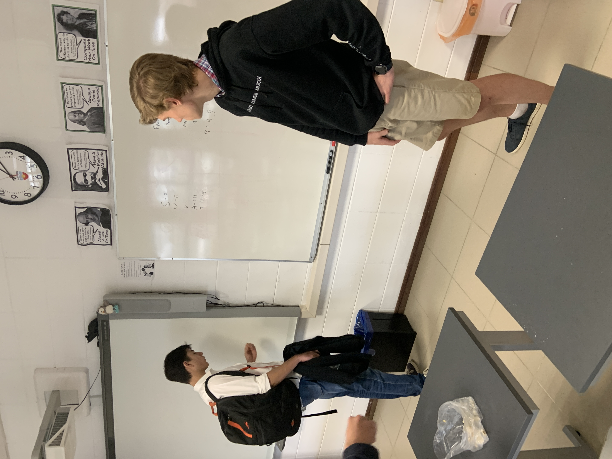Chad and Alex in the Chem classroom using SUVAT Equations
They try SUVAT in the board, but Alex points out that the acceleration is not constant because of Chad's force countering the force of gravity, so SUVAT doesn't apply.
In Lunch, there is Chivito today. Everyone is eating and playing clahs royale, and talking normally. Timo kept thinking about how the SUVAT equations should work. He tells Chad that the acceleration is constant throughout Chad's jump, Chad's force that is pushing him up only affects him while he is jumping, after that initial push only gravity affects Chad. Using this information, they succesfully calculate that Chad's jump is 0.7083 meters with an initial velocity of 3.728 meters per second. (If my memory doesn't fail me)
Luca, Fabri, and Santino play ping pong, Timo goes to join them when he suddenly crosses paths with Nata and Carolina Popa Garcia, an old student from UAS who was visiting the school. He says hi to Nata and Caro, and then Ms Susana(the old elementary teacher) sees Nata and Caro and they start talking about how much the school has changed. Caro says hi to San and Luca, and she goes off exploring the rest of the school with Nata.
Physics HL class dies from a test that no one understood while the rest work on their IA's in the flex space. They are working on their IAs really hard.
San and Fabri don't work on their IAs
Meanwhile, Ines (underclassmen and StuCo president) is really stressed because she has to finish the stuco video. She has been stressing about it all day, but she got it done just in time. Javi disaproves of this and he says that she will have to take a mandatory break from StuCo. Someone will have to replace her for the next video.
A long volleyball practice where they all play games and have fun.
Later that day, an NHS movie night happened. Alex, Chad, and many others couldn't stay. However before they left, they played ping pong. Eitoku played against Timo. And Alex played against Luca.
Luca won 5 matches in a row. Luca is sad because he should have played like this in the tournament, and Alex blames the paddles. After that Humiliation, Alex and Eitoku leave, Alex stating that all that matters is Fortnite Victory Royale wins.
The movie night happened, there was popcorn, they watched the nightmare before christmas.
Tomorrow the family fun day happens, and the seniors will do a bakesale, NHS will do a jail, and StuCo will paint faces.
-
Date:04/11/2023
Climate:Sunny
Location:Uruguayan American School
It's family fun day, the day where family comes to UAS to eat food, let their kids play games, watch a karate exhibit, play football, participate in activities, be with animals, and sometimes watch performances in the gym.
Lupi was taking in all the money, and everyone had set up a table full of different desserts that the seniors had prepared.
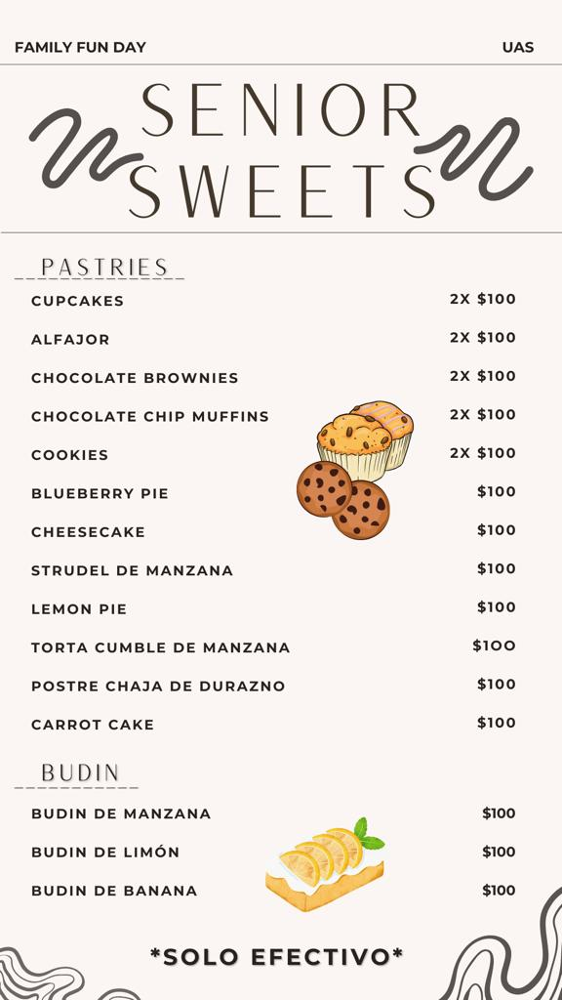All the desserts the seniors had. And the prices.
-
Date:06/11/2023
Climate:Sunny
Location:Uruguayan American School
People played Fortnite the night before the Official IB English Orals start. And now the orals start.
Some people like Chiara did really well, Dani said he had to improvise, Fede fumbled the questions. Many people did the English Orals.
In Chemistry and in Physics, the chem class works on the Chemistry IA because Amaral made an arrangement with the physics teacher. The agreement was that the chem people can work on their Chem IA during physics. Alex, Chad, and Lupi stay working on their IA while talking about fortnite.
Dani has a physics question that he does not understand so he goes to the chem people for help until Lupi tells him to leave because the chem people are working.
Martina starts stabbing people with a bottle.
In homeroom, Martina continues to stab people with a bottle until Matias stops her.
Then Chiara comes and anounces she did great in her Oral.
And then people leave.
Timo creates a Groupchat about the SAAC volleyball with all volleyball boys and girls to discuss the hoodies. He sends the hoodie designs and he asks if anyone wants to make some final changes or ammendments to the hoodie. No one seems to oppose to the hoodie's design so they start a spreadsheets where everyone puts their number and the name they want printed int he hoodie.
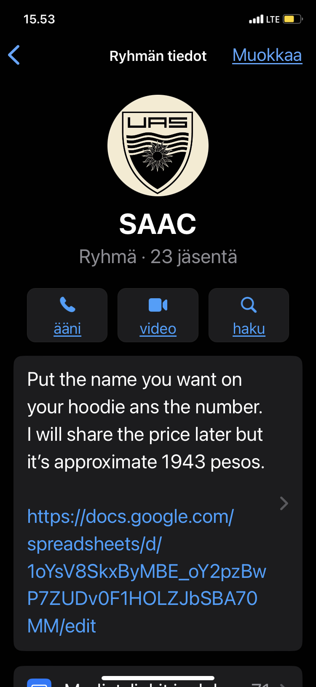.jpg)
.jpg)
.jpg)

.jpg)
.jpg)
.jpg)
The Groupchat and it's contents
-
Date:07/11/2023
Climate:Sunny
Location:Uruguayan American School
The orals resume, Timo was chosen for the first oral today at 8:05 which is funny because Timo usually arrives late to english class, and sometimes he doesn't show up at all. The rest of the people go to the flex space or with Ms Anyon. After Timo finishes, Mili goes. Everyone in the flex space is playing clash royale, or roblox(chiara). Martina begins studying her Oral with Chad.
Lupi and Luca are the only ones in Ms Anyon's classroom, they are studying hard.
Dani then starts talking about body building with Mati, and they see some bodybuilders on instagram.
Alex didn't come today, he is studying in his home.
In Digital Society, everyone who has done the Oral works on their IA, and everyone who hasn't done the oral works in the oral. This includes Sebas and Lupi. Also... Chiara left after the first study hall, she had already done the Oral yesterday.
-
Date:08/11/2023
Climate:Sunny
Location:Uruguayan American School
Turner tells a tale, back in Oregon, his father and him used to go to a forest, Turner would peel of the bark off trees to do something with it, and his father would trap animals and get their fur. They would whistle to communicate over far distances. The Dad was a very good trapper, he could trap foxes, tomcats, otters, all kinds of smart animals.
They were supposed to do a seminar but they took a detour to talk about how to trap different animals. You need to be careful with the smell with fox, they will not go near human smells. Tomcats only step on non-sketchy places so you have to put branches the leads them to a trap. And you drown otters.
Sebas fails to do his oral because it got interrupted by a fire alarm. The Physics class learns more things about fusion and fission and the physics test is reviewed.
This is also the last day that any changes can be made to the SAAC Hoodie because the designs have already been sent out and the paying day is on friday. No one makes any changes.
-
Date:09/11/2023
Climate:Sunny
Location:Uruguayan American School
Eitoku wants to change the colour of the hoodie, but the colour of the hoodie is not changed because the paying deadline is in friday and it's too close. So people argue about wheather or not the hoodie's colour should be changed, and many agree that it shouldn't. Alex, Sebas, Cata, and Marco wanted to change it; some people like Chad actually liked the colour; other might not have liked the colour, but they still opposed to change anything since they had 2 months to propose any changes but they didn't say anything. They start a poll in the SAAC Volleyball groupchat about what colour to change it to, Timo clarifies that it the result of the poll doesn't matter and he is not changing anything.
Sebas does his Oral while the rest of the class finds things to analyse like advertisments, cartoons, and articles. They are doing this to prepare for a paper 1 test.
Alex and Eitoku end up agreeing that it's not worth changing the design's colour now and its definately not fair for them to change it now given that they had a long time to propose any changes.
Angie does a ping pong, a ping pong is a set of fun questions that they are doing to all seniors, she will record it and post it on tik tok. She doesn't find bruno so she does it to Niki, and Niki nominates Mati.
Luca Lupinacci arrives late to Digital Society and Javi starts explaining the Papers that IB gives out for Digital Society.
The math ai class has their first calculus quiz, they do simple derivatives and limits. It's a group quiz. Group quizes are exactly what they sound like, people take a quiz in groups, Zarsky does this to foster a collaborative spirit in the class. Also to make the test easier. the following are the groups.
- Bruno
- Chiara
- Martina
- Sebas
- Timo
- Santino
- Salma
- Angie
- Lucas (He is taking a driving exam so he is actually not here)
San tells his teammates that if his group doesn't get a 100% on the test, they aren't invited to his birthday party.
After that test is over, lunch time occurs. Alex, Fede, and Chad prepare an NHS event for tomorrow while Dani, Lupi, and Sebas talk about fortnite. They are theorising from what fortnite locations people are from.
Martina and Eitoku go outside the Mauricio Levitin Gymnasium while Salma, Nikki, Angie, and Chiara are searching for Martina to do a ping pong interview. Timo tells them were she is. Here are all the ping pong interviews
After the ping pong interview occurs, the 4B period starts, the ToK class has a seminar where half of the class has a study hall, and the Spanish class prepares starts to prepare for the paper 2 exam. Then homeroom
Homeroom
During chess club, Megan anounces through the TTG groupchat that she is no longer single. Her boyfriend is Corey. She says that they have been staying together in nights cuddling for a while until the 29nth of october when they kissed, and last night he said she wanter her to be his girlfriend.
Eitoku goes to play chess against Timo while Mati and Martina discuss some secrets. Eitoku suddenly leaves, claiming that he has a stomach ache. Fede continues the match and loses while Mili explains her plans for the weekend.
Eitoku comes back with a gym shirt and then goes to the gym with Ale. Alex finishes his physics test that he was working on all this time.
Then they all play volleyball and they have a lot of fun.
Alex, Eitoku, and Fede go to Fede's house.
People played fortnite too.
-
Date:10/11/2023
Climate:Clouds but Sunny
Location:Uruguayan American School
English practices paper 1, and the HLs do their HL essay.
In Digital Society, people play clash royale and slander people who vape, commenting on how expensive it is and how much money they waste on it. The mango flavour is specially expensive.
They all start to finish the test Digital Society test that started last class. Chiara comments to Dani on how Stephen Hawking had cheated on his wife, and she started making fun of him. Lupi said "Are you making fun of one of the greates minds of the world" and Chiara responded "There is no way to confirm he said all that" claiming someone could have just been controlling what he says.
Math class learn about Normal and Tangent lines and how to find them effectively with the use of derivatives.
In Lunch, there are burgers
Spanish class keeps preparing for paper 2
-
Date:11/11/2023-12/11/2023 Night
Climate:Sunny, no clouds
Location:The House of Fabrizzio
Mili has wanted to do a juntada for a while now, but no one would want to, until she convince fabrizzio to offer his house for a juntada. During the course of a week, Fabrizzio convinced several people to come to the Juntada.
But before the Juntada, the volleyball has a match. They lose the first 2 sets, and they win the other 2, however the other team had replacements, and the very tiny UAS team didn't, so by the final game everyone was tired and thus they lost the game.
Flor told the Volleyball UAS team that they should have avoided losing the first 2 sets since that makes the match last longer, which puts the smaller UAS team in a disadvantage since they don't have many replacements.
The volleyball team is very dissapointed of having lost the match, Lupi and Alex talk about how they are going to win a fortnite tournament, lately there has been a lot of fortnite.
Chiara, Martina, Santino, and Martina all arrive at Fabrizzio's home. I don't know how though because I wasn't there. Fabrizzio and Santino start playing Fifa. And then Timo arrives.
Then Nikki and Mati arrive and they want to watch a movie, they choose anihilation, Fabri doesn't want to watch it but they already started and they don't want to change it. They had heard about this movie in Digital Society which is why they decided to choose it. They originally wanted to watch a horror movie, and although this wasn't exactly a horror movie, it had some horror elements.
While they were watching the movie, Fede arrived along with Mili and Luca Cassoni.
Fede is kind of interested in the movie, Salma also arrives at some point. Chiara makes an interesting comment-> "I keep forgetting this is a movie and not real life". Eventually, the internet fails to provide enouph data to continue the movie, so the movie stops at a very intense part.
Angie, Chiara, Nikki, Fede, and some others go outside with the speaker and they do a trend where they sing along some song. Meanwhile Martina sleeps in a couch.
They pick a movie and then they watch it
They start playing Fifa, and some people eat burgers that Martina ordered. Amalia(Fabri's younger sister) is in the kitchen and she offers champagne to people and they start playing a "Never have I ever" game where people drink when they did something.
They say several innapropiate things while playing this game and Nikki doesn't like that because Amalia is just present. Amalia is much younger than everybody else.
Nikki drinks a lot because she had done many things.
Meanwhile, Fabrizzio and Luca Cassoni beat Fabrizzio and Lucas 3 times in a row in Fifa.
Alex, Lupi, and Eitoku arrive. Then they all go outside (Except Martina). They all start listening to songs, but Santino sings about his win against Lucas and Fabri instead of the actual song. He does his own interesting covers.
Then they play volleyball and football. They just pass the ball.
They go back inside and play Fifa, it's Chiara and Luca against Timo and Santino, but only Chiara and Timo can score since they are not good, Chiara and Luca win. Meanwhile Fabrizzio is with Nikki outside playing football.
Then they play rocket league, Fabri and Timo vs Lupi and Lucas, Fabri's team wins.
Then everyone starts just talking about random things and playing clash royale until they leave. Lupi apparently did not like being there, and he specially did not like the fact that he had to pay an uber to be there.
-
Date:
Climate:
Location:
-
Date:13/11/2023
Climate:Cloudy
Location:Uruguayan American School
The ToK class finishes up a seminar, and later they talk about ToK
Mili was feeling sad because someone she knew died, but luckily Salma and Martina were comforting her. Unfortunately this meant that they arrived late to the economics class, and Ms Antonina was not having it. She got really mad and she started scolding poor Mili for arriving late, Antonina argued that she also lost someone she knew recently and she still didn't arrive late. But luckily Ms Nina Taskin (the school counselor) was there. Nina talked to Antonina, but Antonina deflected all logic thrown her way, saying something along the lines of "Even if a family member died she would still not have an excuse for missing class".
Nina didn't say anything, she was speachless. Then Antonina told her to go away and Nina left. Antonina was like "Can you believe she came here to defend them?". Not even the school counselor could help
Chemistry learns more about oxidation
Physics class learns about quantum physics and everyone is completely confused about this. Almost nobody understood, with the exception of Timo who knew the standard model already.
Mr Williams says that it's only confusing because of the names and the memorisation. To show this he re-names a particle, the "fluffbuster" and it's opposite "anti-fluffbuster" to show how all particles have an anti-matter counterpart and thus you only have to memorise half of all particles. No one understood this though
Bruno has been acting strange in the homerooms recently.
Meet the Bruno
-
Date:14/11/2023
Climate:Sunny
Location:Uruguayan American School
Eitoku comes to school and he cut his hair, but the hair cut is so bad that he decides to wear a hood to cover it for the entire day.
English has an HL class where the HL people work on the HL essay. The rest go to analyse some advertisements in the flex space. They talk about many things like breakfasts. Dani and Lupi are analysing something very deeply. Chiara just makes up an entire analysis that Lupi tries to copy, but he quickly realizes it's all meaningless. Eitoku asks Timo for a pen, Eitoku really liked the pen so Timo gifted him the pen. Eitoku, Mati, Luca, and Mati play clash royale. Mati wins one against Alex and luca makes fun of him for that. At some point, the freshmen health class puts some loud music that annoys everyone.
The Digital Society class does nothing interesting.
StuCo discusses the different events that will happen during thanksgiving, they have an idea of making a dodge ball game amongst classes, aswell as other less original ideas.
In spanish class, the Camino happens and the SAAC soccer team leaves to play football.

The SAAC Soccer Camino happens
-
Date:15/11/2023
Climate:Sunny
Location:Uruguayan American School
Lately in the 1A study hall, no one stays in the art class, instead everyone goes to the flex space to talk about random things, or play roblox. Sebas and Timo are the only ones who stay inside sometimes. But today they left to the flex space. Sebas was showing Timo some of the old schools he used to be at. Everyone was playing games in their computer.
Turner has a meeting today, and thus he was unable to come to the class, Maria Gali replaced him, and the class had to watch a video about the ToK essay and take notes.
In Chemistry, Amaral expresses his concern with the times it's taking to finish the IA's and also the time needed to teach topics that the class hasn't started yet.
During lunch, Eitoku goes away, lately people have been sneaking their vapes into school. People like Mili and Eitoku are 2 people that I am very sure have been doing this, but I would not be surprised if they weren't the only ones. So they go to vape to the bathrooms many times.
Physics class continues to be confusing, introducing a new type of particle to the Standard Model called the Bosons, the force carrying particles. Alex and Dani don't like how this could all be wrong since the standard model is only a model that tries to explain phenomena..
Also, the SAAC soccer team is in the plane.
They are in the plane
-
Date:16/11/2023
Climate:Sunny
Location:Uruguayan American School
English class prepares even more for paper 2, but this time they analyse some website instead of analyising an advertisment.
As I have said before, Dani likes relating music to certain people, while talking with sebas, Dani related very goofy spongebob songs to Timo.
During Digital Scoiety, the class watches the SAAC soccer match
.jpg)
GO UAS LET'S GOOOOOOo
The volleyball coach also confirms that there will be a match on friday at 16:00, and finally, Chiara is planning a juntada at her house.
In Math class, Chiara takes photos with filter of Sebas, and does several posts about Sebas wanting to kiss Chad.
The Spanish class watches the Football game while finishing an exam.
Chess ClubFor the first time, no one ever plays chess in the chess club, they just start talking about universities and applications and random things. They all set up the chessboards, but no one was willing to play. Mili didn't want to play against anyone because she knew she would lose. Martina stayed there because she had a physics tutor at some point, eventually she went to the physics tutor. Fede and Lupi debated about standardised tests like the SAT, and then they talked about letters of recommendation. Before leaving, Martina talked about her hair, how it was much more red before, and how she is apparently planning to make it brown again.
In volleyball, everyone got their jerseys
 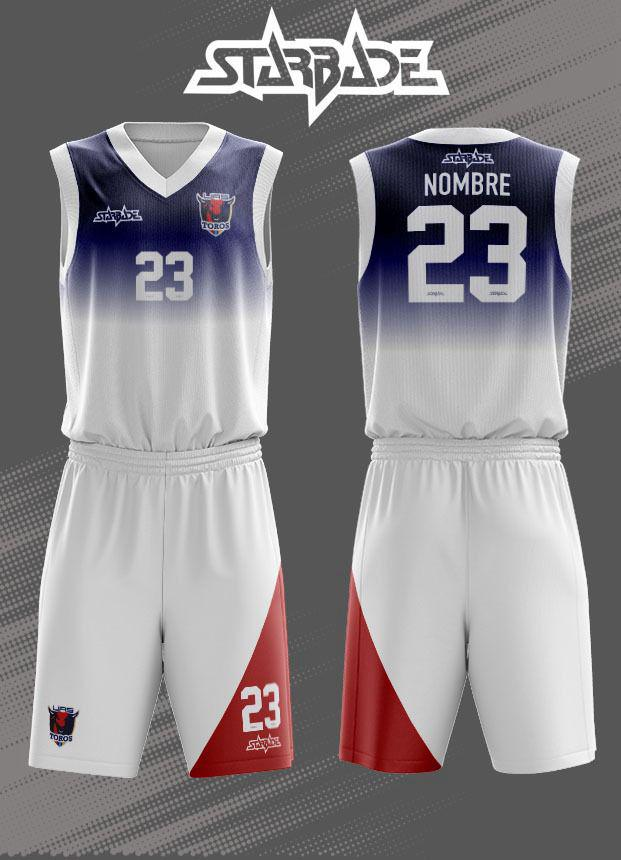
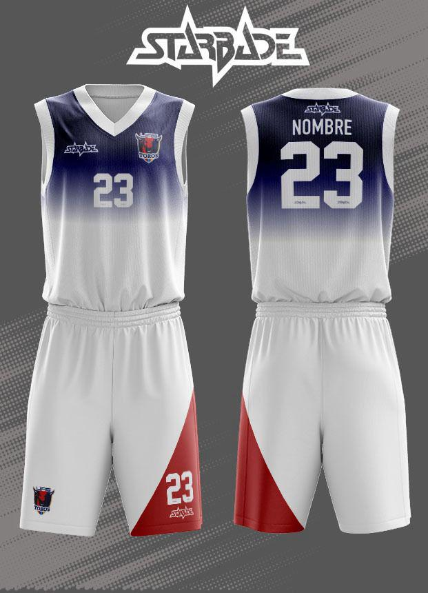
The volleyball jerseys
-
Date:17/11/2023
Climate:Partially Cloudy
Location:Uruguayan American School
During Study hall, Timo takes the physics exam re-take while Dani decides to take it on monday.
During ToK, Ethan, Dani, Lucas, and others present the prompts that they have chosen for the ToK essay.
In Chemistry, the class reviews the topic of oxidation.
In lunch, Timo teaches Sebas the basics of how to play the trumpet.
In physics, Alex, Timo, and Chad solve several particle physics problems while everyone else is mostly confused.
Then the volleyball matches occur, it is the first time that the volleyball team wears their jerseys in an official volleyball match. At first, there was a struggle, people hadn't woken up. But after that in the following games, UAS started winning, they won 3 matches in a row. Everyone was really happy to get their first win.
Later that day, the Juntada at chiara's house was canceled because not enouph people signed up for it.
-
Date:18/11/2023 at night
Climate:Clear
Location:The House of Natasia Bethe
There is a smoothie man in Nata's backyard, and they are all eating pizza and talking about random things. The people present are the following.
- Nata
- Eitoku
- Lara
- Maggie
- Mati(not our mati)
- Cipriano
- Alfonsina
- Taijia
- Mili
- Tobias
- Nicolas Menendez
- Timo
- Juanma
- One more
- Another one
No one else arrives.
They all go inside at one point and they play a card game where they have to make the funniest combination of texts, but it's not that fun.
Meanwhile Taijia talked to Eitoku, Milagros, and Nata about names. Apparently Tasia's second name is Lucia but no one calls her that.
Then they go outside where they talk about their deepest darkest fear. Nata's is the ocean, Eitoku is heights, Timo's is death, and the others I don't remember.
They also draw some things on peoples faces and on glasses. Many people leave, like Taijia, Lara, Toby, Nico, and probably others.
After that, several air hockey games happen, at Eitoku wins most of them, Mili is really competive.
After that, Maggie and Mati leave, and several others like Mili aswell.
After that, only Eitoku, Nata, Ale, and Alfonsina remain. Alfonsina talks to Ale about Music, and they do that for a while until they leave. Eitoku, Nata, and Timo talk about many things.
The Origins of the BTTBSo according to Nata, she created the Back to the Bench group. This group lead to the creation of the Table Tube Gang, which then resulted in the Wander Warblers Contingent.
And now in the present day, I would say that there are no more groups in the class. The Table Tube Gang still talks to each other through an instagram groupchat. But in the class itself there are no more groups.
Nata also mentioned the people she used to hang out with, she mentioned the football team. People like Luca, Mati, and others. Also the people in BTTB, like Fede. But she very quickly hinted at the fact that she didn not like Fede.
The reasons are unkown, before she left, she was less and less liked by the people surrounding her, Megan used to be great friends with her, but after some time she stopped. Nata said "She just decided to stop being my friend"
And after that, they leave.
-
Date:19/11/2023
Climate:Sunny
Location:Irrelevant
Milei wins the presidential elections, Fede doesn't like that because Milei said abortion was bad. But everyone else is super happy because Milei is really fun to watch. Also the SAAC team ended up fourth I think.
-
Date:20/11/2023
Climate:Sunny
Location:Uruguayan American School
The Chemistry class must take a course in study hall because they are behind, it's an Organic Chemistry course. Everyone but Lupi takes the class because Lupi and Fabri don't have study hall right now.
Alex, Lucas, and Sebas arrive to the chem. Sebas knows that Timo usually comes late and arrives in the ewheel later in the day, and he thinks this day is no expcetion. But it was an exception, and so the HL Chem class except Lupi learns about all the different carbohydrates that Carbon and hydrogen can make. They learn about all the families and how to name them. The naming system comes from germany, Amaral says that this is the reason why german people like Sebas find it easy to use the IUPAC naming system.
In ToK, Mr Turner explores one of the ToK prompts "Do we need custodians of knowledge". He somehow ends on a tangent of how the world tends to lean towards nationalist leaders and celebrities that break the status quo. And the phenomenom in Argentina were people were forced to pick the lesser between 2 evils in a way, and in the US too, with the whole trump and biden thing. People chose Turmp over hillary because trump was a known evil but Hillary was an unkown evil.
In Chemistry, everyone does Organic Chemistry problems while Lupi learns Organic Chemistry. At the end, Alex, Sebas, Lucas, and Timo create immposible nomenclature Organic Chemistry problems for each other.
In Lunch time, most people actually sit outside for the first time in a long time. Lupi and Luca play ping pong and Luca wins.
In Physics Mr Williams gives out a mind map for the classroom to complete. So they work a bunch in those questions. Martina joins the HL table and she starts assigning archetypes to everyone in the tabe.
Name Archetype Sebas Dragon (??) Alex Prince Timo Blind Wise Man Chad Also prince Dani said that Timo was the Cemetery card from clash royale, and then they started all assigning Clash Royale cards to each other.
Ethan, Sebas, Dani, and Lucas also talk about who is most likely to die or survive a zombie apocalypse. They agree that Lupi is the most likely and Mili is the leas likely to survive. Dani refuses to accept Fede could survive despite his Boy Scouts training.
-
Date:24/11/2023
Climate: Sunny
Location:Uruguayan American School
Moskovicks gives the class a popup "quiz" and she also teaches the class how to analyse infographics. At the very end of the class, Moskovicks expresses her dislike of the people who used AI to do the homework. Lately, Ms Moskovicks has been giving out insurmountable quantities of homework she has been giving out lately. She is very pissed about this. She says that from now on, SL students have optional homework while HL students have compulsory homework.
In Digital Society everyone works on their IA, also Chiara arrives. Chiara likes skipping skipping English class because she is really tired of dealing with Ms Moskovicks.
In Math, Zarsky applies the concept of a derivative to a circle's circumference and area. Timo also asks Mr Zarsky if there is a way to write a log function as an exponent, and Mr Zarsky doesn't really know so he tries to figure out something with the identity of numbers, a concept that I didn't really understand.
In StuCo, they talk about who is doing what for tomorrow's family funday. Fede is stressing out unnecessarily as always and Chiara decides not to come to the meeting because she is not going to be in thanksgiving tomorrow.
-
Date:23/11/2023
Climate:Sunny
Location:Uruguayan American School
Final Thanks Giving
Thanksgiving happens, this is a half day where the other half of the day the class gets to eat a big feast and do fun activities fun activities.
There is also no class tomorrow and the day after tomorrow, and then the weekend starts.
Everyone has their normal classes. In Chemistry, they learned a new Organic Chemistry Topic that was very confusing.
In Physics they reviewed some questions. And after that, everyone ate their thanksgiving lunch. The thanksgiving lunch was pretty good.
Then, the thanksgiving activities begun. Every seperate grade was assigned a shirt of a specific colour, and they had to write down their names on it. Some shirts have been there for a while so there are names of really old students who have graduated a long time ago. Dani grabbed his brothers's shirt and he wrote his name next to his brother's. The volleyball team wrote their numbers next to their names.
The first dodgeball game was the Sophomores vs the Freshmen. The Freshmen win because they cheated a lot. Towards the end the Sophomores developed a strategy, kicking the ball to avoid having to get closer.
The Second game is the Seniors against Juniors. For seniors, Martina, Nikki, Sofe, and basically all the girls stayed behind and collected balls for the boys to use. Chad was catching many balls and he threw them with enouph spin to counter the force of gravity. Taccone was the Junior's main player, but he was unable to defeat the high amount of good players that the Seniors had. Dani had some surprisingly good shots. Mati also hits the principal because he accidentally made a ball curve directly into his face. Overall, the seniors performed pretty well, and by the seniors I mean the boys because the senior girls didn't even try.
Then the seniors go to play football against the teachers. And it's surprisingly fun. It ends 2-1 With Dani and Eitoku having scored, everyone was so happy Dani scored. The teacher who scored the goal against the seniors is Rocio from volleyball which is really humiliating towards Chad (The Goalie). Fabri teaming up with Luca and Eitoku while Timo defends in the back. The rest are just there to kick the ball when it approaches them. Out of nowhere Dingley comes and he does random plays that never work, Dingley is so cool.
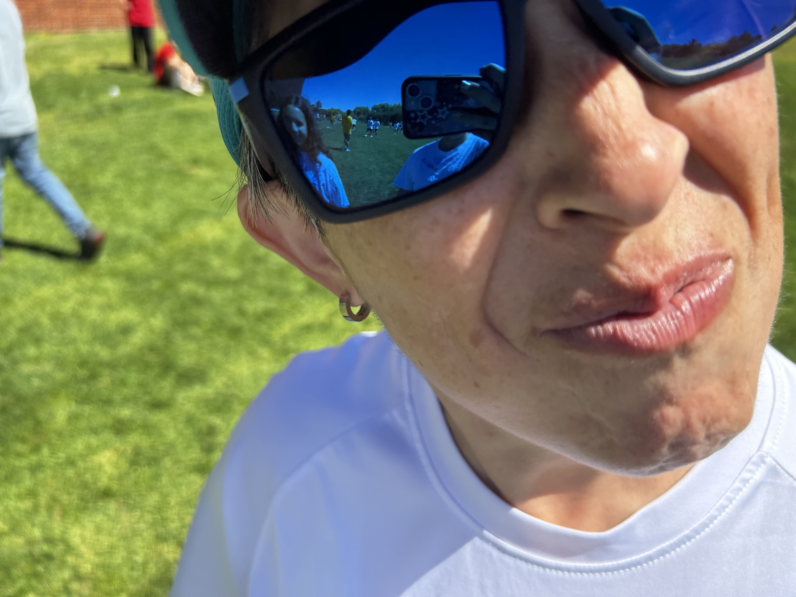
Rocio after scoring on chad and Dani after scoring a goal
Then, the final DodgeBall show down. High School against Middle School+Teachers. It's an epic fight that doesn't really last that long because it was merely a distraction for what is soon to come. The water balloon fight, still it was pretty intense
 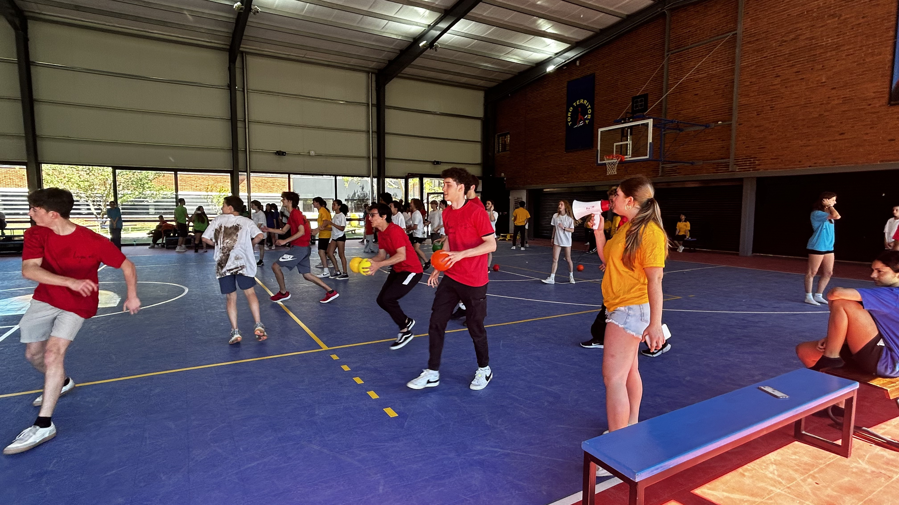
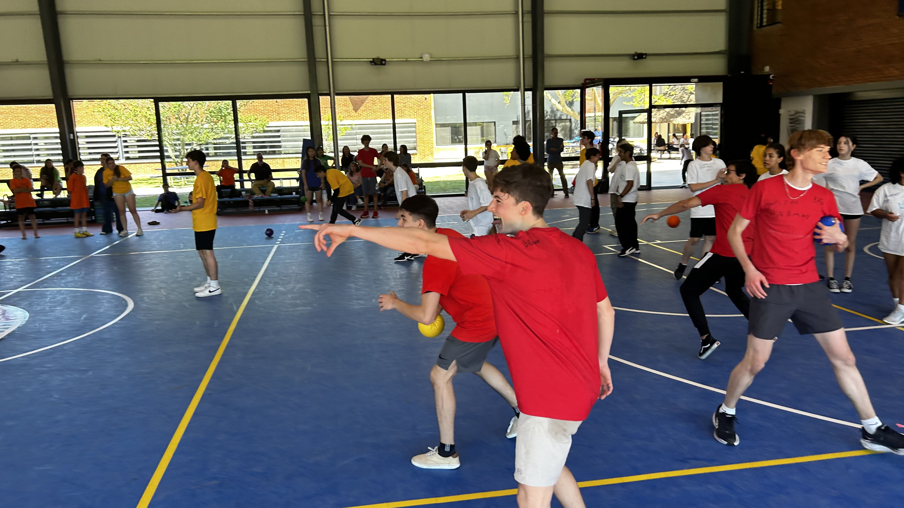
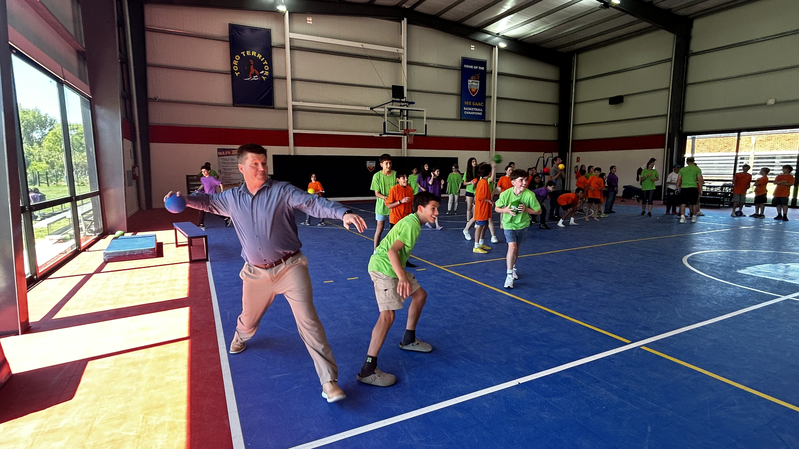
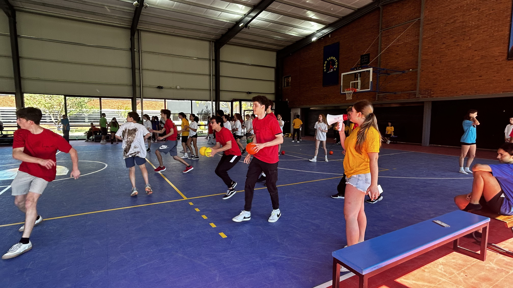
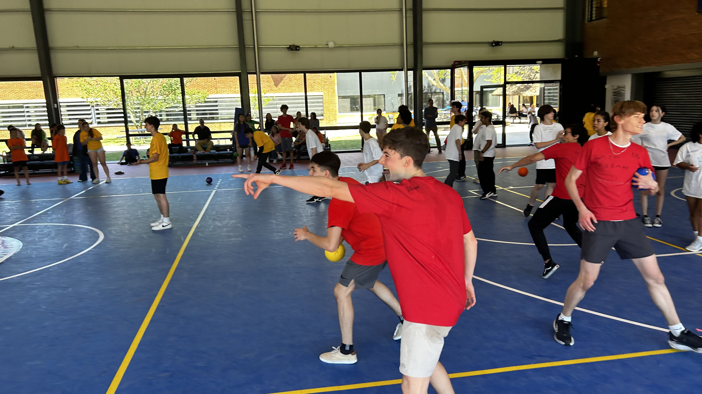
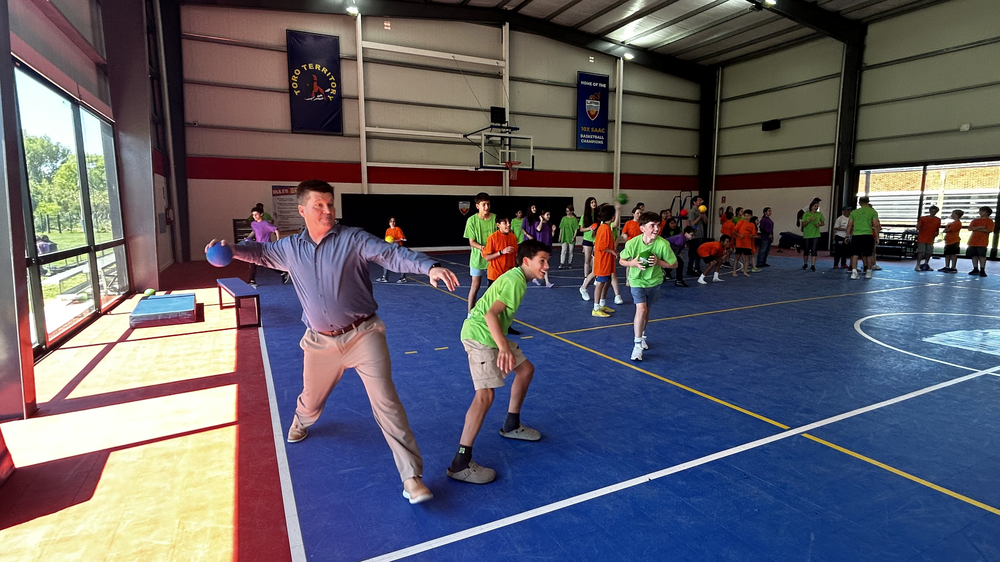
Final Dodgeball
Lupi grabs a water balloon basket and teams up with Alex while going somewhere safe. Timo, Chad, and others grab another basket and go after them, chaos ensues as a result. More seniors arrive, and more chaos happens. People throwing water balloons left and right, some of them not don't explode and those ones hurt the most. The water balloons ran out rather quickly. So people started filling up the baskets with water and using those to wet people.


People getting more water balloons and people playing spikeball
After that, some spike ball nets and balls are put in the playground, and many seniors and teachers start playing spikeball
Then volleyball happens, it's a normal volleyball practice, first the warm up their defence, block and attack; then they proceed to attack, and then they do a blocking scenario. And Finally, they take a group photo with everyone's Jerseys on. The picture took a while because people couldn't decide what to do for the photo.
Once the official volleyball practice ended, Alex, Lupi, Chad, Eitoku, and Timo set up the second net at the wooden gym and practiced volleyball there for a full hour. After that everyone goes home completely exhausted. Today there was a lot of physical activity.

The foto they took
-
Date:24/11/2023
Climate:Sunny
Location:Cata's House
No school today
So the volleyball meet-up barbacue occurs today. It's a tradition in which a SAAC team eats together and also do something to their hair. Girls usually dye it while boys do some creative cuts.
At first, most of the girls volleyball team arrives. Then more people start arriving. There is a table with chips and snacks, and a second area with couches.
.jpg)
The Table with Food
Here are the people that came.
- Alex
- Martina
- Cata
- Agus
- Luca
- Lupi
- Taco
- Pame
- Eitoku
- Paula
- Marco
- Chad
- Timo
- Fede
- Amalia
- Mati
- Leo
- Sophi
- Kylah
At first they start talking about past SAAC experiences. There was once SAAC basketball where there weren't enouph hosts, so UAS had bought a bunch of Hotel rooms, and it was a disaster. Lupi was locked out of his room in underwear for like 45 minutes. People forgetting their keys to their room was very common.
They then proceed to talk about the rooms that were assigned to everyone in SAAC. Eitoku, Alex, Tacconne, and Marco are all in the same room. Luca and Mati are in their room. Fede and Timo are on another room, and finally chad and Lupi.
Apparently Taco already knows the girl that is hosting her this SAAC, he shows a picture of her to Alex and Alex says "It's game time" where Taco very energetically tells Alex that the team is going to Curitiba to play volleyball. Alex has been searching for a girlfriend, they have talked about this before.
Then, Fede points out that people should start making burgers. Kylah then proceeds to start the burger making process. Eitoku goes to play with Cata's dog while everyone else is still talking. Cata's dog really likes to play, and he was jumping at Eitoky thinking Eitoku had the ball, even after Eitoku had left the ball, the dog still jumped at him. Then Cata gives Eitoku and Marco a volleyball.
.jpg)
They play with Cata's volleyball
Martina, Mati, and Chad all go to the house of Martina to get a better volleyball.
Meanwhile in Cata's house, everyone plays volleyball. The ball goes off to the neighbour's house several times. However it's relatively easy to get it back. One must go outisde the house and into the forest, then pass through a trampled fence and get the ball. Marco spikes the ball at Alex and it goes off to the other side. Timo, Alex, Eitoku, and Marco go to get it, Alex notices incredibly big dandelions, and so does Marco. They get the ball and start playing in the forest, they say that they have to be ready to adapt to new surroundings for SAAC. After a short while they come back and Kylah anounces that the burgers are ready, at which point everyone goes and gets their burgers. Timo also brings his speaker and lupi connects his phone to it to put some songs.
Eventually Chad, Martina, and Mati arrive with Martina's volleyball, and they all start playing. Alex manages to get the the ball stuck on a tree on the other side of the fence, Timo and Eitoku cross the fence and Timo climbs the tree to get it out.
The water of the pool is also really neon-coloured, and there is a sub-pool with dirty water. The ball sometimes fell in there and they had to bounce it on the floor a couple times to shake the water off. One time Martina's Volleyball fell in and the main pool and they forgot to get it out because the SAAC haircuts had begun
All the girls start dying their hair, except Martina since she has been trying make her hair brown again, it's harder than what she expected. Martina also tells Kylah about the day she decided to dye her hair without her mother's consent or knowledge. It was the 4th of September 2021 and her mother walked in.
The boys start with fede, they want a chess pattern. The end result is surprisingly good, it's a chess pattern in the back with Fede's initials and his number in the front.
.jpg)
Fede haircut
Then it's Marco Lupinacci's turn. Luca Lupinacci draws a lizard grasping onto Marco, it's pretty good. While Marco Lupinacci's haircut is happening. People play volleyball with Martina's volleyball, however the ball had been in the water for very long, so it's really heavy because of all the water that it absorbed.
Marco's haircut
Alex (with the aid of Eitoku and Lupi) gave Timo a decent haircut that does not look bad at all, it's just a lot shorter than Timo's usual style.
Timo's haircut
Then they all start playing volleyball again for quite a long time. All the girls have dyed their hair. Mati contemplated the thought of doing something to his hair since he had never done anything to his hair throughout the 5 SAACs he has gone to, and this would be his last SAAC. He decided not to do anything.
Date:24/11/2023-25/11/2023
Climate:Moony
Location:The streets and Martina's House
Eventually, seniors start leaving towards Martina's house to continue the celebration there.
Alex, Lupi, Fede, Eitoky, Mati, Martina, and Chad go walking while passing the volleyball. Eventually they notice Timo isn't there, but he catches up to them.
They pass through the San Nicolas Lake and the volleyball almost falls there, but Chad catches it before it reaches the lake. They arrive at Martina's house and for some reason there are a lot of black mannequins lying around. They go outside and grab another volleyball, this one was not water-logged like the other one, so it felt a lot lighter. They passed the ball around for a while until someone had the idea to set up the volleyball net. Martina and Chad went in search for the necessary materials while the rest continued to pass the ball around.
Martina's backyard has some bushes at the borders of the backyard, the bushes are planted in an very slanted piece of land that then leads to the fence, there is also a small space between the bushes and the fence, a space one can comfortably walk through, I will call this space "The Border Space". However traversing through the bushes to get to the border space was hard because the bushes scratch a lot. And the ball kept falling there which was annoying since someone had to go get it every time.
Martina and Chad come back with the net, and then Fabri also arrives. He isn't in the volleyball team but he wanted to show up nonetheless. Unfortunately there were some missing parts to the volleyball net, more specifically the anchoring string that stabilised the net's position. Martina solved this problem by using twine. And the net was done.
It was getting dark and people but they played anyways. At one point Alex accidentally serves the ball directly into the bushes, Timo tries to go as fast as he can to attempt to prevent the ball from getting to the border space, but he realises he can't reach it in time. He is about to stop himself when he realises there is a black football tennis net in the floor, he doesn't want to step on it so instead he jumps and crashes himself into the bushes at a high speed ending up in the border space.
Martina then brings a ring light. Now with proper lighting, they play with these teams.
Team 1- Lupi
- Alex
- Timo
- Fabrizzio
- Eitoku
- Chad
- Fede
- Mati
- Martina (she mostly watched the game in the sidelines thought.)
Video by Martina obtained via Martina's instagram story
Alex tries to block Chad, Chad responds by removing the net out of the equation to expand his spiking possiblities. So yea, in multiple occasions they end up dismantling the net since it probably wasn't built to withstand Chad's force, specially when it's all held together by some twine.
Team 2 enjoys most of the time destroying team 1, until they start to count points. Team 1 starts to play better, so now the match is more even. Team 1 ends up winning a match to eleven 14-12. And then the pizza Martina had ordered from Rodelu arrived.
It wasn't only pizza though, it was also faina. And so they ate pizza, faina, with some pepsi, and then some ice-cream, and it was all really cool. Lupi commented how Pepsi is underated, and how it was probably better than coke. He said pepsi is sweater than coke.
They commit atrocities
Then they put on a movie, they put on little man, a comedic movie about a criminal dwarf pretending to be a baby to get a diamond and survive a cartel.
Eitoku leaves throughout the movie, and so does Mati, and ALex, and Fede. Leaving Timo, Chad, Fabri, Lupi, and Martina. Chad and Martina watch tik tok videos together, Martina's feed is strange, and Chad fails to understand much of it. Lupi and Fabri also watch tik toks but with their own phones. Lupi comments on how instagram sometimes has these random innapropiate videos of women breastfeeding and he is so shocked that instagram allows any of that. Fabri says he also sometimes gets some of those suspicious videos.
Fabri and Timo leave, Lupi and Chad also left through the use of an Uber
Parallel to all of this, Santino is at a quinceniera with his family and he is kind of drunk, he texts the groupchat about this. He is not having fun because he doens't know anyone at the quinceniera so he starts to go home. Chiara sends a picture of a beverage and says "Cheers" while Fabri and Eitoku keep chatting with him for a little while.
.jpg)
"Cheers"-Chiara
Also peñarol won and Mili was happt about that. Chiara is in Argentina, annnnnnd I think that's all that needs to be said.
.jpg)
Happy Mili
-
Date:25/11/2023-26/11/2023
Climate:Irrelevant
Location:Santino's Home
Martina and probably others hang out at Santino's home. Santino steals Martina's phone and publishes the followig explicit close friends story in her main account.
.jpeg)
The Joke from the OEE is still standing as strong as ever
And he also sends this picture to the groupchat.
.jpeg)
Martina is mad
Martina later deletes her story and asks Santino to delete the picture from the groupchat, shortly thereafter sending the following texts and videos to the groupchat.
.png)
Martina's rage
And she later posted this in her story
.PNG)
San
Later that day the volleyball team ends up deciding that Eitoku will be the one to pick up the hoodies from the parque rodo pick up locations since he lives the closest to it.
At night, Mili gets kicked out of the groupchat by Chiara, lately this has actually been a recurring theme. She has been kicked out a lot, like once a week. This is because she always insists for a juntada, however lately it became more of a joke. Chiara was the one who kicked her out today because Mili was insisting for people to do a juntada tomorrow. Angie pointed out that she actually meant today since it's already 00:00.
Then they played a roblox game called phantom force.
-
Date:27/11/2023
Climate:Sunny and hot
Location:Uruguayan American School
The ToK class works on their ToK Essay
The Chemistry class spirals through everwhere, many topics. They start with organic chemistry, talking about how alkenes can react through combustion, and that somehow related to octane which is the anti-knocking fuel that cars use, this relates to the origin of Thomas Midgley and his tetraethyl lead compound. Tetraethyl lead was a highly effective anti-knocking agent, only downside is that it contaminated everything with lead, its one of the reasons older people have more lead in their bones. This fuel is still used in piston-driven airplane engines. Alkenes can combust when compressed, and they were talking about car engines. Car engines contaminate, so they started talking about the greenhouse effect and how effect and how it works. How the incoming ultraviolet A beams pass through the atmosphere, get absorbed by the ground, get released in infrared(which is why the sand is hot at twilight) and then greenhouse gasses that interact with infrared radiation either re-emit the radiation or convert it into heat, which effectively warms up the earth..
The earth's atmosphere becomes a topic, they learn about the ozone layer, and how chloroflourcarbons(CFC) have affected it. This is because when UV hits a CFC it releases free radicals that can react and thus dismantle the ozone layer. And that is why CFC's where banned. This also relates to Thomas Midgley since he created the first CFC, dichlorodifluoromethane
After that, Amaral talks about how the Ionosphere protects humans from solar blasts with charged particles. O+ and N+ are the most prevalent ions in the ionosphere.
Also about how CO2 increases the pH of the ocean by becoming Carbonic Acid with the water, and this is also the way that your body detects the lack of oxygen, by detecting the change in pH caused by the accumulation of CO2 in the blood.
Then they talk about how incomplete combustions create carbon monoxide which is toxic since it prevents hemoglobin proteins from transporting oxygen, this suddenly became a biology class. People used to bring birds to mines to tell when there was too much Carbon Monoxide, when the birds died that meant that there was too much Carbon Monoxide and they needed to get out of there. Carbon Monoxide was created due to the lanterns of the miners which were candles.
Physics Test, not the best but definately not the worst.
Eitoku gets the Hoodies, he anounces that he got all hoodies. However he pranks everyone and he says that he is missing one hoodie.
Also Bruno sends some photos to the Purple Gang Groupchat


The stuff Bruno sent
-
Date:28/11/2023
Climate:Sunny and Hot
Location:Uruguayan American School
Eitoku delivers the Hoodies to Ms Helene. Chad, Martina, and Eitoku have their hoodies on and Eitoku gives his to Sofe. They are in English class analysing an Infographic, those who haven't analysed it yet go to the flex space to analyse it for 20 minutes and then come back.
Moskovicks then proceeds to analyse the advertisment with the entire class, and she tells everyone they need to write some paragraphs. A fire alarm sounds and scares everyone, after the fire drill is over, people don't have the proper time to finish the paragraphs so everyone is happy :D
In break, Alex goes to get his hoodie, but Turns out Agustina Dupleich got confused and grabbed Alex's Hoodie since they both have the number 22.
In Digital Society, Alex takes the Chem test while Timo searches all over the place for Amaral since he also need to take a test. Alex starts searching for him too, Mati tells them that he is in art class. He was indeed in art class. Alex needed help with the Titration equation that he didn't remember.
In Math class, everyone is waiting for Mr Zarsky, but some random asian guy with the UAS visitor badge shows up. He claims to be Mr Zarsky. Then Mr Zarsky arrives and introduces his friend Caroll who was going to see Taylor Swift's concert and stopped by to visit his friend Eric Zarsky. Then they proceeded to learn about optimisation. Eitoku slept on the nurse's office during Math class because he didn't feel like learning today.
In Lunch, some people sat outside, and others didn't.
In volleyball, they did some light training. Coach Sebas told everyone to be at the airport at 8 on the morrow, he looked at Timo specifically since he is always late. The song Industry Baby was chosen for the team's entry song after Kylah eliminated other people's suggestions because it was becoming too complicated to manage. Also, Nico Bruni said that SAAC Haircuts are no longer allowed because of a controversy at some SAAC school where a kid was forced to get a SAAC Haircut, so everyone who got a crazy haircut has to shave it all off.
Fede shaving off his precious haircut
Meanwhile in the other side of the world, Megan and Milla give house tours. Megan also tells the TTG about how Sam's car got destroyed and how the driving age in the US should be higher.
The Tours of rooms
Megan, Timo, and Milla also talk about quantum tunneling and how cool it would be to pass through a wall. Megan also listens to music while driving
Megan driving and listening to songs
Also Megan has been drawing on herself a lot and she says she might get a tatoo.
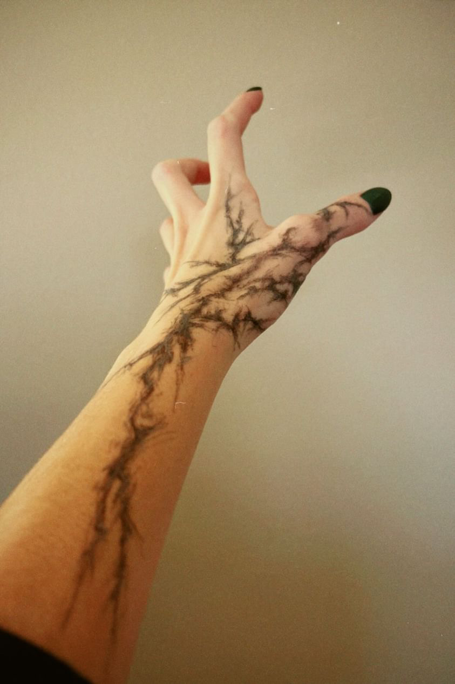Megan draws power from the dark realm
-
Date:29/11/2023
Climate:Sunny
Location:Uruguay and Brazil
The SAAC team unites at the airport. Some get something to eat at starbucks while they talk about things. After that, they dispatch their luggage. While waiting for everyone, Lupi, Alex, Timo, Fede, Chad, Eitoku, and Mati compare passports to see who has more seals. Fede wins. Eitoku, Timo, Amalia, Fede, and Marco play some songs in the piano of the airport. Marco plays a simplified version of clocks by coldplay.
Here are all the volleyball players and Coaches of UAS
They go through Migraciones where Alex and Eitoku can take the short path because they have diplomatic passports.
They all eat at some restaurant that is there while playing some clash royale games until they are called to go to the plane. At this point, Lupi, Alex, and Fede decide to buy their hosts a gift, and that's what they do.
They all board the plane, Chad and Lupi play a clash royale game against Eitoku and Alex, they end up tied 1-1. Then Alex and Chad play 2 player games for a big while. After that they just listen to music while people are taking cursed picture of others while sleeping. They also airdrop some pictures to people.
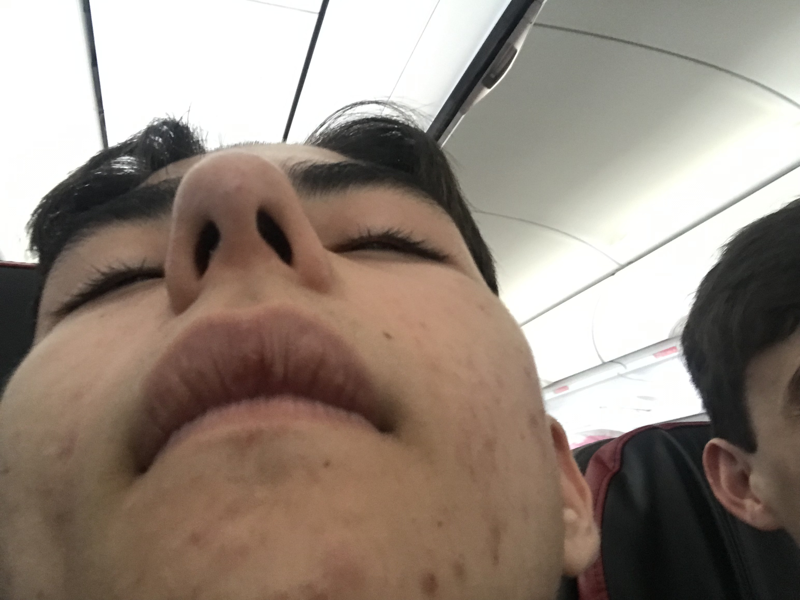 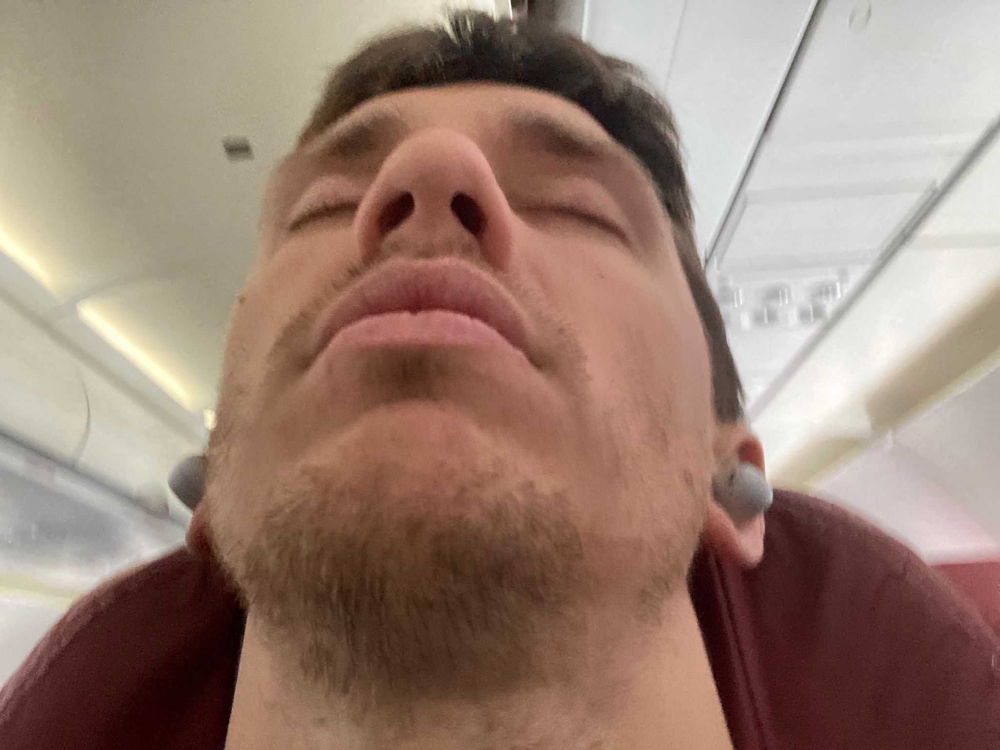
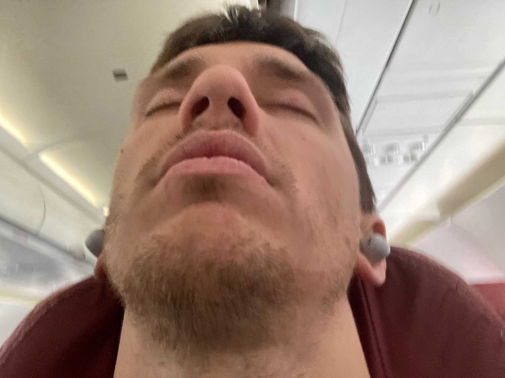


Pictures airdroped in the plane
Eventually they arrive to their destination, people get their luggage, they dispatch their luggage again, and then they compare flight seats for the next plane. Alex is trying to get a seat next to Chad. Chad, Alex and Timo go to a place to try Pan de QUeso, and Chad absolutely adored it the pan de queso. He would the eat 2 packs more throughout the day. Then, everyone is given free time, many people go to different places to eat, Alex goes somewhere with Lupi, Luca, and others. Timo, Martina, Chad, and Mati go to Johnny Rockets and order burgers there. Martina named her order "Tim" and Chad named his "Bobby".
They all get their luggage, Martina and Mati are talking about their time in LA and how at one point some random man really wanted Martina's Milk Tea and ended up basically stealing it from her. And how sometimes gunshots were heard, and bombs, LA didn't seem very safe. Chad also talked about the Cayman Islands and how it's perfect there except for the hurricanes and it being expensive
Chad is the only one that ordered an ice-cream, and they also put a price on the mayonise which no one likes.
They meet up with Alex and others, and they decide to go to the gate, however they are not sure where the gate is. They end up going to the opposite direction until Luca Taccone realizes that they are going the wrong way. And So everyone turns back and walks an incredibly long distance. They end up at a Renner where everyone sits down and rests. Mati and Eitoku brought their vape against Alex and others' will, and Mati uses it right now, he hides it and it looks like he is crying so Chad and Alex jokingly ask him why he is crying.
Then Nico Bruni sends a message telling everyone to go back to the original place (The Johnny Rockets place) and they all walk all the way back. Nico Bruni makes sure everyone is there, and then they walks all the way back to the gate.
Everyone is really tired at this point, they go through migrations, and the flight got delayed :(
They also see the Nido team, they try to create some sort of beef with them but they end up just talking to them. While waiting for the flight, some people play trivia and others play a country guessing game. At one point Alex, Mati, Luca Taccone, Luca Cassoni, Timo, and Eitoku all play pistolita, a finger gun game. In Argentina this game is called 007. Basically everyone has a turn, in their turn they can either reload, shoot someone, or shield themselves. If someone is shot while reloading they lose, and if someone is shot while shooting they also lose.If you reload 10 times you can shoot someone even if their shield is up
Everyone is doing stuff
After an incredibly long time, the flight arrives. So everyone reunites at the gate, Mati and Eitoku come from the bathroom. And they see a guy or girl from Nido but they don't know if they are a guy or a girl. They start theorising about really creative ways of finding out this person's gender and they lauph at that for like 10 minutes.
In the flight, Alex, Chad, and Timo seat together for the second time. Martina really wants to change seats with Timo so that she can sit with Chad and Alex, but Timo also wants to sit with Alex and Chad. Luca Taccone puts "I want it that way" on a speaker and everyone starts singing it for a moment which was really funny.
They spent most of the trip listening to music and talking about random things. Kylah met one of Fede's friends from other American schools.
They all got off the plane and went to get their luggage. I don't know why they waited so long after that. Lupi saw an add of 2 black men kissing and found it hilarious. Then he started doing some stretches with Flor. Most boys started playing tag with their shoes off, only socks. Marco displayed some dance moves and the security guard had to come to control the situation. Then Luca Taccone gave an inspiring speach about how and why the UAS team is the most likely to win.
They all head to the Bus, and the coaches anounce that they will be giving cards to people, and everyone has to sign them at the back, the cards have a nice message on them, and everyone should exchange them at school so that all cards have all signatures at the end.
They got to ISC and all proceeded to go to the homes of their respective hosts.
Today's LetterIT'S HARD TO BEAT A PERSON WHO NEVER GIVES UP
Also, Marco is staying with Eitoku, Alex, and Taccone, his house is huge and he records the following house tour.
Marco's host house tour
And finally, Martina plays fortnite

Martina with her Nintendo Switch
-
Date:30/11/2023
Climate:Cloudy
Location:International School of Curitiba
Everyone goes to ISC(International School of Curitiba), each school has a designated area to leave their stuff, UAS's area is clearly the smallest.
People start arriving. Marco, Eitoku, Alex, and Taco are all in the same house, and taco speaks of some tales relating to Marco. He says 2 quotes that Marco said to the host family. "How is your english so good?" and "Where is your room?". He also tells how he played with the hose bidet.
They all put on their tracksuits and prepare for the opening ceremony. The gym is much bigger than the UAS gym. Roof height is not a problem while playing volleyball in this gym because even if you try, you would never hit the ceiling. There are 2 courts in this one gym. They all line up in a hallway that lead into the gyms, the other teams are also there.
Then the musics starts playing, and the different teams go for it. UAS goes with the song "Industry Baby". And then there is a little opening ceremony dance that the elementary girls do. And they also do this with the volleyball.
Epic Entrance
 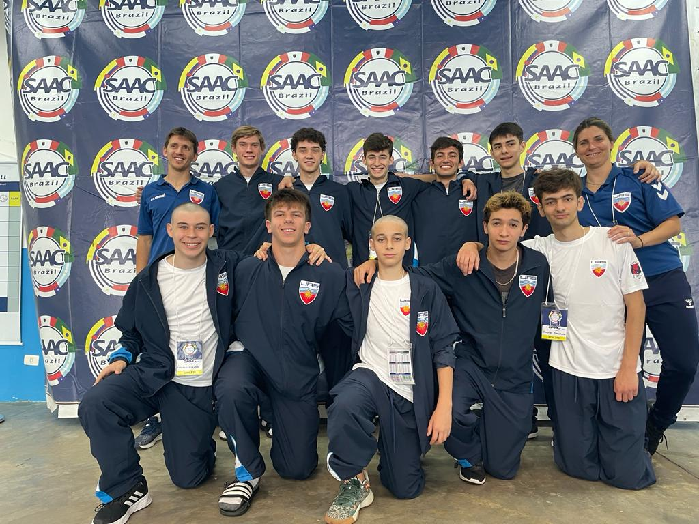
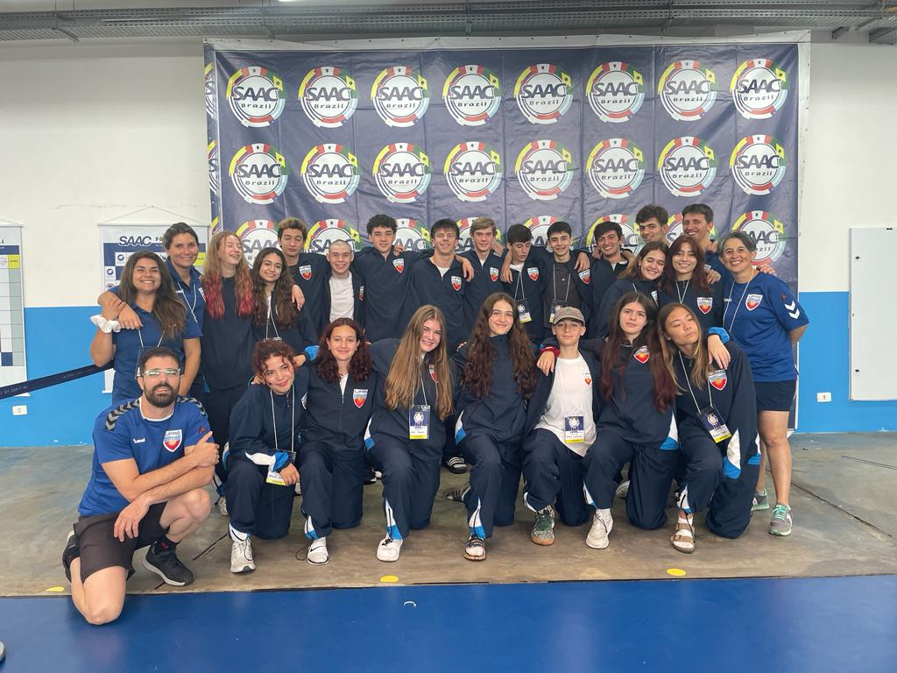
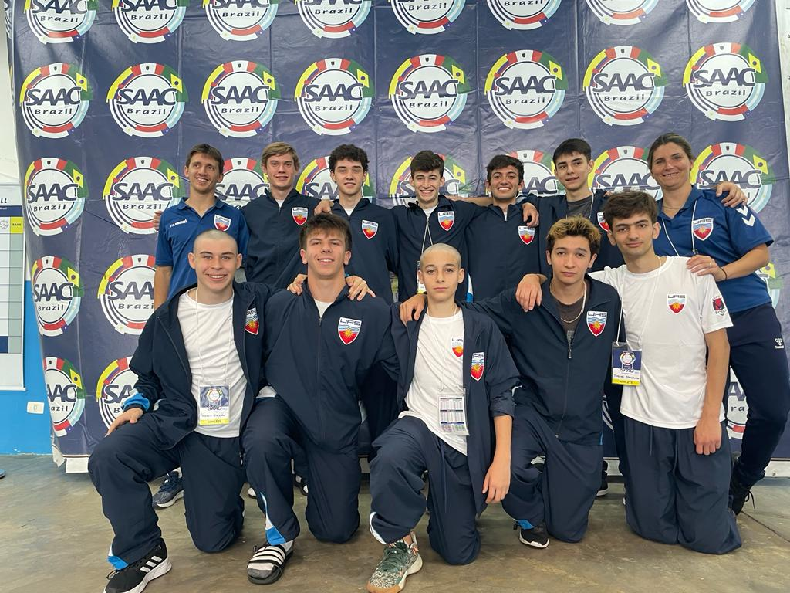
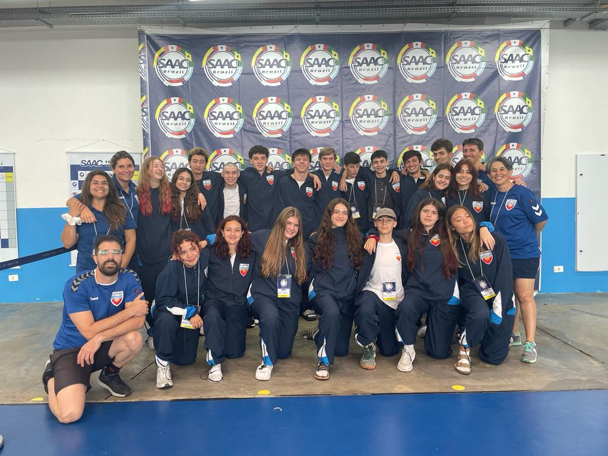
The volleyball start
Then they all go, put on their jerseys and prepare for their game which is in like 2 hours, but they are excited. They watch the current game for a while, analysing all of the opponent's strategies and formulating ideas to defeat them.
They do that for a while until they get bored. They start passing the ball and doing stuff other than watching the game.
Then Sebas calls everyone, they will start the warm up for the first game against Lincoln(The American School of Argentina). Lincoln is the school that won the past SAAC Volleyball hosted in Chile. They do a stretching session with Flor who knows a lot about muscles and tendons and stretches. Coach Sebas sees Lincoln playing and he believes that they are not playing as well as before, Coach Sebas tells the UAS team that they are about to destroy the team that won the last SAAC Volleyball and everyone is full of confidence.
Eitoku and Mati go to the bathroom and do drugs halfway through the stretches. And then, everyone is called back. They do the official warm up. And then they begin the match.

Stretching
They all went to the resting area, they are all kind of mad about their game. They all go to eat lunch, the lunch is actually very good, there are many options of salads, with the main protein from fish or chicken. They all eat good while talking about stuff.
Some people rested, others went to watch the girls, now the girls have a new coach called Rocio, and they hate this coach because she does not know how to play, and she stays quiet during the matches, not telling them anything about their mistakes. So they lose every match.
Bianca was resting throughout the game of the girls, and she also forgot the uniform which is a reason her teamates hate her. The girls are very embarassed of playing so badly, and the decisions rocio made during the game were terrible.
Then the boys then play Clash Royale 2v2's for an entire hour. It ends in a tie. It's Chad and Lupi vs Alex and Eitoku and they play some really epic games.
Then they go to watch another game of the girls for a second time, and really try to chee for them, but the girls still fail to get the win.
Then they go back to their area, and the girls all complaing about Rocio the coach, some girls also complain about Kylah Murphy being too harsh on her teamates.
Then the boys go to do their stretching outside, Marco give the team some incredibly useful advise and some insane tips aswell as an incredibly inspiring speach to the teamates while they were all preparing for the stretch. They stretch on this land that is very dirty.
Then they do the actual training, this time they are goint to play against International School of Curitiba (ISC) which is the host of this SAAC Volleyball tournament.
UAS is not happy, they believe that the Judge made some very suspicious calls about UAS double touching the ball. They also claim ISC touched the ball 4 times. This causes the UAS players to lose motivation, and they lose the next set by a lot. Everyone is really sad becasue they haven't won anything. Mati and Eitoku go to the bathroom and they are really sad, so they stand there, very sad and vaping. Personally I believe they shouldn't care about weather or not the judges score correctly, they'll play better if they just have fun.
Alex is also really sad, everyone is crying at this point. Martina and Timo try to comfort Chad. They tell him that tomorrow they will use what they learned from today's matches to beat Nido and Graded tomorrow tomorrow.
Later that day, whatsapp stuff happens
Nightime whatsapp picturesAlso at night time San and Fabri send the following stickers
Today's CardWhat happened in whatsapp
ERES MUCHO MAS DE LO QUE CREES
-
Date:1/12/2023
Climate:Cloudy
Location:International School of Curitiba
So everyone arrives once again to the school and to their spot. They boys are going to try to win the next three matches against Graded, Nido, and American SChool of quito (ASQ). Graded and Nido will be touph, but Quito is really bad compared to the rest.
Sebas calls the boys outside and asks all of them what they thought of SAAC so far. Everyone reached a consensus that the first day wasn't great. Lupi said it's important to have fun because it's what will be remembered, and Marco gave one of his amazing speaches about how they are winning the rest.
First the boys cheer for the girls' match, the girls are really bad, once again because of Coach Rocio that isn't a real volleyball coach, she is just there because she is the wife of the primary school principal, the new primary school principal is actually super good at her job unlike rocio. So the girls lost
Then the boys start preparing for their match against Graded (The American School of São Paulo).
The first game is touph, Graded wins it. The second team, UAS gets an incredible head start that makes Graded lose "The Feeling" or "The Flow". The UAS team managed to win the next 2 games and thus they won their match against graded. This is their first win let's gooooooooo
Then the girls play once again, but they are still not capable of winning, this repeats many times throughout SAAC but it's useful to repeat this everytime it happened because it emphasised a future positive event.
Th boys play against Nido
The first match, Nido beat UAS.
In the second set, Nido is still winning, but UAS manages to fight very evenly. Still, they lose 25-22, a very close game. The team isn't really sad about this match because they played pretty well.
Then, the boys eat at lunch. There is some meat and some chicken aswell as the salads, and a really good sweetened cool tea.
Then some people go to watch some matches.
When the time comes, it's UAS against the American School of Quito. UAS beat them in the first game, but it was toupher than what they expected, they had underestimated ASQ. This made them nerveous for the second game which caused them to lose the second game. UAS also didn't do their stretches with flor which they usually do.
For the final game, the team started off winning, but ASQ catched up to them. They unfortunately lost.
Eitoku is really sad that they lost because he didn't play good but everyone else comforted him. Everyone is really sad. They go to their hosts homes.
Something happens in the whatsapp, Santino and Fabri send the the same ticker a lot.
Also people have to send pictures to assure that they are fine, these are the pictures the boys sent.
.jpg)
.jpg)
.jpg)
The sent checkup media
-
Date:2/11/2023
Climate:Sunny
Location:International School of Curitiba
Everyone arrives at ISC at 9:30 because the UAS team does not have a game at the morning, only at the afternoon, everyone takes this time to get rest. They go to the gym to have a talk, but they get ejected out of there by staff, they get sent to a dance classroom. Sebas gives a speach
Sebas' speachCoach Sebas tells the team that this is a common thing that happens in sports, people lose, people win, people get lucky, people get unlucky.
Sebas said that UAS had the capability to do really well, but there was some factors that hindered the UAS team. Among these factors was the lack of team spirit and confidence aswell as the UAS team underestimating the ASQ only because they saw them perform badly in other instances.
But now that's all in the past, and it's still not over, UAS can still get fifth if they win against FDR, and then win their final game against ASQ.
Marco then gives a speach himself
Marco saids that people should have some fun, he has a lot of confidence that the team will win. He also says that this is UAS's chance to show ASQ that they are better, he says verbatim
"It's our chance to show ASQ that that that wasn't us on the field the other day, that was another team"
Marco is such a goat
And they are all confident on themselves, again. They start to stretch and warm up for their match against FDR(American School of Peru), ASQ was probably the worst team but they still won against FDR. FDR didn't win a single match throughout the entire tournament. But UAS didn't underestimate them this time. The UAS team had seen FDR play against the other teams, FDR was actually really good, all their games were really close but they just always barely lost either because of chance or just other factors. FDR is a very competent team that just happened to lose every game. But that doesn't mean they aren't good. Also FDR has someone who participated in the SAAC Fine Arts Festival of 2023 called Thomas Luque, he is also the captain of his team.
The UAS team plays the first match against roosvelt, and it's touph, they start loosing. Towards the end of the Match were FDR is about to win. Sebas puts Timo as the setter and Eitoku as the opposite (Eitoku never played opposite, he is an outside hitter.) These 2 teamates raised the team morale by trying their hardest despite their touph situation, the UAS team started to play better. They still lost though
But they were feeling better for the second game and they managed to win the second game against FDR. They also won the third game.
They celebrate and they are all very happy, they go to lunch, but they make sure to eat light for their final game against ASQ later this day, since they are planning on absolutely obliterating them to prove that they were meant to win against them. However something kinda wild happens, something called... the wildcard
The Wildcard ruleThe last 3 teams have some matches ot decide who goes fifth, who goes sixth, and who goes seventh. Meaning that UAS is going to be matched against FDR for a second consecutive time because they are both in the last three.
Points gained for the other official matches don't matter. So it doesn't matter that FDR won a total of 0 matches and UAS won 2.
The Wildcard match consists of only one set to 25
UAS is very mad because they just went against FDR and they won. Furthermore they have 0 points, but FDR still has a chance because of the wildcard.
The match starts after both teams ate lunch. UAS starts with a massive head start, but then, another wild thing happens.
The UAS team was winning 22-17, however FDR catched up and won. The UAS team claims that it's that the refferee made some suspicious interventions. After that, ASQ went against FDR and FDR won and thus FDR got fifth, ASQ got sixth, and UAS got last :D
Now the UAS team doesn't necesairly feel that sad, they felt cheated specially because they weren't informed about the "wildcard" at the end.
Chad and Fede are pacing around the ISC gym in disbelief since this is their last SAAC and they got last
Then Martina accidentally steps on Lupi's Dulce the Leche jar and gets her socks all dirty with Dulce de Leche, also all of Lupi's bag is dirty with Dulce the Leche, and thus he is unable to keep his stuff there. Lupi had brought dulce de leche with him for the hosts, I don't know why it was in his bag though. Lupi got pretty pissed at Martina

The Incident
Meanwhile Mati and Alex are analysing the games' replay, they conclude without a doubt that the double touch of Taco was non-existant.
The girls also unfortunately lose their match, meaning both UAS teams end up last :D
But the team comforts itself and they settle in enjoying the final game of ISC against Lincoln aswell as the girls final game of ISC against FDR
For the Lincoln vs ISC game, the UAS team cheers for Lincoln since Marco made friends with people there, among them someone name Harry,and another named Denny I think. Marco cheers for them a lot and the lincoln team lauphs. The Lincoln team ends up winning, arguably because of Marco's amazing cheers.
For ISC vs FDR, player number 4 is really short but her spikes are really strong. She becomes the win condition for ISC and thus ISC wins. ISC celebrates and the wildcat appears (ISC's mascots)
Marco dances with the wildcat
Then the ending ceremony occurs, apparently there was also a SAAC crosscountry event, where Simon (Simon has talked to the UAS teammates ocassionaly, Fede talked to him, Timo talked to him, he is really good person, very social.) He won the sportsmanship award for the Crosscountry SAAC which makes sense. In UAS, Martina, Cata, Chad, and Marco won the sportsmanship. People agree with Chad and Marco, but Cata was definately not meant to win the sportsmanship award she got really mad at everyone and never really took the games seriously, even Cata admitted that she shouldn't be there. Martina was just there she didn't really do anything. The decision to give the sportsmanship awards to both of these girls was Flor, and no one wants her or agrees with her in anything. Paula thinks that those who should have won the sportsmanship award for girls are Bianca and Kylah since Bianca motivated the girls to play better all the time and Kylah did so aswell.
Simon wins like, an incredible amount of medals, I am not clear on what the medals were for or why he was always there standing with a smile. But yea he is just there winning stuff. Cross country man.
Then they show the videos, I will try to put the videos here but I don't know how to get them. (I couldn't get them)
The UAS volleyball team barely appeared, furthermore they actually repeated the same clip twice. I don't know if that was becasue of a lack of footage or something but that was kinda sad.
Despite that, they still end up eating pizza and lauphing at the end. They go to the lunch room to eat pizza, but then they decide to go outside. And they all start absolutely slandering Rocio for being a bad volleyball coach. Also Rocio is apparently going to leave so all the girls are incredibly happy about that.
Then Eitoku plays chess against some lincoln girls, Bianca Armwrestles Marco and loses.
Alex loses his SAAC hoodie and he can't find it anywhere which is really sad.
They all go to the parking lot area to get picked up by their hosts. They start lauphing at a past SAAC football where a Condor started "getting sturdy" and Lupi was dying of lauphter.
Chad changes his whatsapp profile picture to his volleyball picture
Santino and Fabri do the thing where they send stickers at each other again.
Later that day, Megan is informed of the SAAC events, and she tells Corey about it, Corey says that it was really unfortunate, mostly agreeing with the rest. Megan is also planning on going to a place called Ghost Town with corey tomorrow, and she hopes it's a foggy day because she likes fogginess.
So now you can actually watch all the matches.
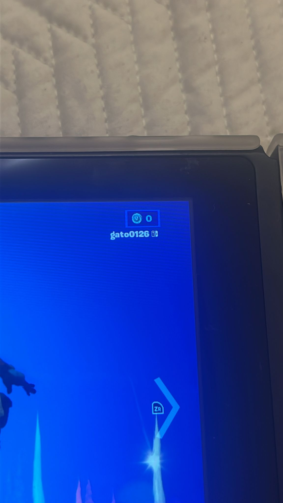Martina lost her vbucks and Marco got scared
-
Date:03/12/2023
Climate:Unclear
Location:Brazil and Uruguay
Everyone goes to the parking lot, and they say by to their Hosts and go to the Bus, they are all really tired since they had to wake up early to take their flight back to Uruguay.
During the bus ride, some people sleep, and others talk.
Then they finally arrive at the airport where the Nido students are also there. Marco starts chatting with them and making jokes.
Then Taco and Luca team up to take Marco's sandals off and hide them somewhere, eventually Marco finds them.
They do migrations and they unfortunately they don't have much time to eat. Mati, Eitoku, Lupi, Timo, and Marco eat at Subway while Alex, Martina, and Chad get a drink.
Eitoku accidentaly throws Timo's wallet to the trash after throwing all the contents of the tray into the garbage. Then they all go to the gate, Martina, Chad, and Alex arrive a little late because their drink got delayed.
Martina steals Timo's seat because Timo was put next to Alex and Chad for like the 5th time. Timo is not happy about this. During the flight I think Chad watched his favourite show "The Office"
Then they arrive to the second airport. They got through all the migrations mess and stuff, but interesting things started happening when they got to the duty free. They couldn't get out of a hallway outside the duty free since there was a barrier. Alex, Eitoku, Chad, and Martina wanted something to eat, some of them wanted KFC specifically. This was bad news because most restaurants were not available to people because of the barrier.
Eventually they found a very obvious passage that lead to another terminal, a passage they somehow missed before. Fede and Timo also followed the same trajectory. When they found this passage, they went to catch up with Alex, Lupi, and the rest as fast as possible.
They found the way
They bought things in a duty free that was on the way, Timo added new books to his Journal Collection. Eventually they saw Eitoku, who was dissapointed at a lack of KFC's, Fede also wanted a KFC so he also got really sad. They ended up eating at a place called "General Prime". Alex, Taco, Chad, Martina, Lupi, Marco, Mati, Timo, and Fede were all there eating burgers. Eventually Sebas, Flor, Bianca, and others started arrivng to the terminal, and to this restaurant aswell.
There was a problem however, when the bill arrived, several things didn't add up to the Math HL students. They complained for a long time to the people who only spoke portuguese until they finally got to pay the correct amount of money. Bianca did not help at all even though she is fluent in portuguese.

The restaurant where they almost got scammed
Then they went to another restaurant but only to sit and wait for the gate to open. Alex, Chad, Martina, and Mati sat at a table, while Lupi and Timo sat at another, and Kylah, Cata, and Fede sat at yet another table. Alex's table was discussing seat arragements in the plane(who to trade seats with), Kylah's table was talking about how terrible Rocio is as a coach, Lupi and Timo talked about art.
Martina asked Timo if they could switch seats again but Timo was mad because of last time so he denied. But then Timo thought on how he was just planning to sleep throughout most of the flight. He figured that Chad and Alex would have more fun with Martina than him, so Timo gave her his seat.
In the flight, ruffles were given to everyone. And other things also happened probably.
After arriving to the Uruguay airport. Alex and Eitoku went through the short line because they had diplomatic passports. However, they still had to wait longer than everyone else because there was someone stuck the diplomatic passport line which was really funny. There was also an old lady that shouted at Bianca for no reason. Eitoku complained that there was a "fat lady who talked too much" in the migrations.
They all get their suitcases then they all go through the security thing, and they meet with their parents. Everyone says hi and bye to eachother, and just like that, the SAAC Volleyball expereince concludes.
StatsHoodie's: -1 (Alex)
Injuries: 0 (really cool)
Wins: 2 (Could have been better)
Place: 7th in other words "last" (Not the best)
Wildcards: 1 (That was wild)
Team Spirit: Masomenos
After that many people started to do the monumental amount of homework they have missed.
Meanwhile in the other side of the world at greensborough
Megan went to ghost town with corey, they took some photos, climbed some tower and a ferris wheel, and overall they had fun.
.JPG)
.JPG)
.jpg)
.jpg)
.jpg)
.jpg)
.jpg)
.JPG)
.jpg)
.jpg)
.jpg)
Megan's pictures of ghost town
-
Date:04/12/2023
Climate:Cold
Location:Uruguayan American School
The chemistry class looks at different reactions that acohols can undergo. Primary acohols undergo different reactions from secondary alcohols, and tertiary acohols don't undergo oxidation.
Very interesting stuff
In lunch, Timo and Sebas catch up with eachother since they have been apart for quite long. Timo tells sebs about the unfairness they suffered in SAAC, but Alex had already told Sebas before. Sebas did nothing partucularly interesting, he was just bored all the time since all his friends left to Volleyball. Lupi and Alex join them, and they sit at another table because the other table was tilted.
They talk about things considered lucky, Sebas does some suggestions on things that should be considered lucky.
Things considered lucky- For a bird to poop on your head
- To crash a cat
- To kill your parents
- For the oxygen masks to fall in the plane
Chad joins them and they start talking about volleyball. They conclude that although sometimes they were cheated on by the referee, overall UAS could have won if they had a better team spirit.
Fede joins them and informs everyone they need to do an english test before the end of tomorrow. No one likes that.
In Physics, they first look at the particle tests, everyone got a pretty good grade
"If you picked C or D then... shoot yourselves" -Haydn Williams.
After that amazing quote, the Physics Higher Level Class (Alex, Timo, and Dani) speedrun through the topic of the photoelectric effect. Basically electrons in metal can gain energy by absorbing photons(light) an electron that has extra energy as a consequence of this is referred to as a photoelectron. The energy that the electron gains due to the absorbtion of the photon is kinetic energy, meaning that the electron might escape the potential well of the metal and go and start moving which creates a current. They also talk about how voltage can be used to halt or hinder the current created by the photoelectric effect in a circuit.
HL Chem people also do some extra organic chemistry problems after class.
Later that day, Chiara creates a new Whatsapp group called "Seniors w/o Santino and Fabri" This is because San and Fabri have been spamming the same sticker during SAAC and Chiara was absolutely sick of this. Santino demands for everyone to return to the seniors groupchat.
Megan is informed of Mr Williams amazing quote, and she responds with pictures of her climbing a tower with Corey. SHe liked climbing the tower but not so much climbing the ferris wheel.
-
Date:05/12/2023
Climate:Cold and Sunny
Location:Uruguayan
The English class reviews how to analyse cartoons by analysing 2 cartoons. Moskovicks also said that those who have been away in SAAC volleyball must find the time to take a test.
A music concert happens
Concert
The Digital Society class takes a test. Lupi makes fun of how the Math AI SL class always has tests.
Math class has a test about calculus and derivatives aswell as optimisation, everyone was really nerveous and confused about this topic, but they still took the test. No one liked it. Lupi does a Chemistry redox test.
In Lunch, Lucas and Luca played ping pong. San and Fabri steal Chiara's phone as retaliation for her creating the Seniors w/o Santino and Fabri groupchat. Chiara goes to Sylvia to make her give the phone back. Once spanish starts, Santino and Chiara have a discussion with Sylvia as a mediator. The discussion is about the situation with the second class groupchat that excludes fabri and San. Sylvia concludes that even though what Chiara did was bad, San and Fabri left her no other option. San and Fabri agree not to spam sticker that much anymore and everyone goes back to using the normal class groupchat.
In Spanish, the class read "La tregua" and analysed new themes in the book. Fede complained about SAAC, and others complained about Moskovicks. Alex and Chad do the english test at this moment.
Then they have a 2 hour long volleyball practice, but no one is proud of this practice, they all played badly.
-
Date:06/12/2023
Climate:Cloudy
Location:Uruguayan American School
The ToK class continues to work on their ToK essay, Bruno talks Dani about his past friends like Dominic Tornquist and the terrible things he has done.

Flor sends this very epic poster aswell
The poster anounces the volleyball match that everyone is waiting for. They got last in SAAC, so they are very motivated to destroy any incoming volleyball team.
The ToK class doesn't have Turner as their teacher today, Ms Gali came as a substitute. For this reason nothing really cool was discussed in the ToK class.
The chemistry class revisits the concepts of substitution and addition reactions. And introduces the new concept of condensation reactions, which form a peptide bond or a ester bond. Esterification, this will become important for those who will in the future study about transesterification.
They proceed to make a condenation reaction to create Isoamyl Acetate. They combine different compounds to create a banana smell.
But the water takes long to boil, very long. While the water is boiling Amaral is teaching the class about amide bonds/peptide bonds, he is wondering why the hot plate is not boiling the water.
After what is considered too much time, the water starts to boil, and then Chad arrives. He gets to smell the banana flavour with a little bit of vinegar in it since not all the acid reacted with the alcohol.
59 minutes and 51 seconds of making Isoamyl Acetate (Mostly Boiling Water)
During lunch, Alex, Eitoku, Fede, Timo, Chad, Sebas, and Lupi all sit down and talk about random things outside. Timo discovers that Moskovicks didn't come to the school because she is sick, meaning she probably won't come tomorrow either
In physics, the SLs have free time to "work on their IA" while the HLs continue to learn about equations relating to the photoelectric effect.
They also check that they will all be taking the correct IB exams. They check that all their names and stuff is correct in the papers.
The IB stuff
The volleyball practice is pretty good.
-
Date:7/12/2023
Climate:CLoudy and rainy
Location:Uruguayan American School
Moskovicks didn't come because she is sick, Mr Dingley replaces her instead, Moskovicks told everyone to analyse and write an outline for 4 different language pieces.
It is very likely that no one did such a thing, Fede played clahs royale towards the end of the class.
During recess, Sebas tries the school's chocolate Milk. It's pretty good.
During Digital Society, Timo introduces San to the video game "w player games". Seba an Lupi also play that game. It's the same game Alex and Chad played in the plane to Curitiba. Seba wins the first tournament. Sebas also talks to Dani about random things, Dani and Sebas usually talk about really random stuff, usually pertaining to other people.
The Math class works on their IA and they also see their test scores.
During lunch, Eitoku tells Sofe and Timo that he might join the SAAC Fine Arts festival next semester. This is because the next SAAC Fine Arts will be here at UAS and thus he is not going to have to pay for a trip. However he is not sure, becasue he might leave to Japan. Sofe is shocked, Eitoku tells her it's not that bad since if he lives, Eitoku will be with a girl that he thinks is cute.
In spanish class, Sylvia proposes for everyone to take the test on the review week to get it over with, most people agree.
Then,
The Final Chess ClubChad, Lupi, Timo, Martina, and Mili are in the chess club talking about random things. Alex arrives eventually, and then Martina leaves for physics tutoring. Lupi and Timo play 2 games. These are the semester final games for the High School Chess Club
It was also their last practice with Flor as a volleyball coach, since she is probably leaving or something, I didn't really understand the explanation she gave. They warm up and then they have fun playing a match.
-
Date:08/12/2023
Climate:Sunny and Hot
Location:Uruguayan American School
During recess, Sebas and Timo go to the Spanish B class, they talk about how it would be amazing if they were let to take Spanish B since they basically do nothing. Sebas says something that sounds like a good senior quote, and then they start talking about senior quotes. Chad's senior quote is goign to be "You miss 100% of the shots you don't take"
Alex arrives saying that's a stupid senior quote, but Alex doesn't have a quote of his own so Chad invalidates Alex's opinion. Alex then plays a clash royale game against Timo who has a new deck with the fenix. Alex refuses to believe that he can lose a game to a deck with the phoenix, since he believes that it's one of the worst cards in the game. And yet he still loses 2 times.
During ToK, Turner does his first interview about the ToK essay, meanwhile, San and Timo continue play a 2-player games tournament. Timo wins the first 2 and the third one couldn't be finished before the class ended. At some point, san needed help in battleship, and San got ethan's help.
The Chemistry class did the ultimate recap of organic chemistry, complete with alkanes, all the reactions, banana, and more.
They further purified the banana essence with the use of a strong base that neutralises the ethanoic and sulfuric acid in the mix, Chad gets to smell the now more purified banana smell.
In lunch, the girls sit inside while the rest sit outside. There are burgers today, which are pretty bad but good enouph. And Ice-Cream as dessert. Luca asks Timo for ping pong ball and goes to play ping pong against Fabri, this is something that has been happening a lot recently. Luca and Fabri got to play ping pong in lunch with Timo's ping pong balls. Luca has aquired significant skill with these sessions.
During physics, the SL's worked on their IA while the HL's learned about the uncertainty principle, quantum tunneling, and the wave function of a particle. Alex was struggling to stay awake while watching some extremely interesting videos that Mr Williams had prepared for the class.
Mr William explains the uncertainty principal equation in a terrible way.
Then volleyball occurs, first they warm up, then they play a match, then the girls join and the play king of the hill, and then they finally play some matches, it was overall a really fun practice.
After this practice, Luca, Alex, and Eitoku wait for an Uber. Along with Timo, they all play ping pong. Luca wins 5 times against Alex, they do one last match where Luca says "Wins this one wins all" and Alex won that one, which means that Alex won all of them, very unfortunate for Luca. Eitoku and Alex then play Timo. Luca has actually gotten better than Alex at this point.
Timo then stays to watch the Legally Blonde Gone Wrong, a play by Lara. At first Lara is promoting the cake that someone baked. The play was pretty funny, specially this part.
Mr Williams is Gay and European
Timo then grabbed a cake and told Lara he would pay her in monday. They all left home, end of the day.
-
Date:09/12/2023
Climate:
Location:Uruguayan American School, Olympia, Cata and Martina's houses
So today there are several events happening.
- The 3x3 boys tournament
- The semifinal match against olimpia
- The volley SAAC celebration at Cata's
In the 3x3, Luca, Salma, Dani Mili, Chiara, Timo, Chad and Fede are there doing stuff. Timo and Fede are in charge of the fire and the burgers, Salma is the cashier, Chiara puts the lettuce and stuff, it's all working pretty well. But Mili notices Fede struggling with the heat, and decides to take over.

Mili burning herself
A sudden wave of a lot of people come. Also, Martina, Alex, and Eitoku arrive. Also San and Fabri who were playing games arrive. They start helping with random things, Chiara tells Mili to leave the fire to fede in multiple occasions. In one instance she left it to Fabri, but then she took back her position.
The people are working
Mili was getting really burned, using wet towels as protection against the heat (provided by chiara). Alex and Eitoku go play ping pong and Nikki tells them they should probably go to help.
Mili with burgers
Chad and Martina are sitting down in a table eating burgers. Martina is talking to Chad about genshin impact. Fede comes ahead and tells Martina and Chad to help everyone by cuting tomatoes. They don't cut the tomatoes, instead Timo does it and he tells Fede that Martina and Chad did it.
Alex and Eitoku return to the burger thing, only to leave and go somewhere else. Ian (Jeff's nephew) is also there. Santino takes over the brazas for a while until he gives up and does nothing again.
Zalma puts music, and everything is going pretty well. Then the volleyball team leaves, but before telling you what the volleyball team does, let me tell you what everyone else does, or what I know at least.
MiliMili is left alone which makes her mad because she is all burned up and she has to clean up everything.
ChiaraChiara goes to Zalma's house, takes a bath, goes to Santino's house, and then goes to Martina's house at night.
MatiMati didn't come to the senior event for the first time and San was mad about that even though he barely helped.
The volleyball teamThe volleyball team goes to olympia and plays against them, they win hte first match, for the second match they lose and they also switch setters and Chad as the outside hitter instead of Luca.

They play in this court
Alex gets an awesome block, and everything goes pretty well, which is why they end up winning. The volleyball girls went to the match to support the team. Except Martina
They are all happy of having won, in the bus ride back to school, Leo and Cata play the yellow card game. Pame and Eitoku explain that Cotufas is a good name for popcorn because it is derived from "corn to fry" in english. They also see a car crash, pretty interesting stuff.
Once in school, Lupi, Mati, Luca, and Eitoku walk to Cata's house to do the SAAC reuniting celebration thing.
Once they are in Cata's house, they start to play football but quickly get tired. They go inside and talk about random things until Martina arrives. Then they go to the living room to play UNO, Leo wins the round and everyone gave up after that.
The pizza arrives, Marco starts saying NPC lines as if he was a video game character. Everyone is lauphing a lot at very stupid stuff because they are all tired so everything is funny. Lupi immitates how Alex usually goes to dap someone up. He approaches them while looking at anything but the person, he proceeds to dap the person up, and then make a random comment "You'r getting destroyed in ping pong today" or something.
They go back to the living room where they hold a "Mati's got talent show" where Mati shows his talent(singing) and everyone bullies him with buzzer buttons.
.JPG)
.JPG)
Martina leaves and tells the rest of the seniors that if they want they can go to her house to hang out a bit more.
After a while of deciding what Alex is doing (Alex was at a Nata's house because Alex's parents were invited there, Eitoku is also there.) The remaining seniors go to Martina's house, on the way there Lupi tells the tragic story of how his cat was probably hit by a car and he died. The conversation started somthing like this when Lupi said "Cats don't have that bad smell, my Cat smelled pretty good... until he was killed... tragically"
Everyone thought he was joking but then Lupi tells them the story of how his family found out about the death of his cat, Lupi never saw the cat in his mangled form and he counts himself lucky because of that. They arrive to Martina's house to see Chiara, Angie, and Mati. They want to play lego fortnite. Martina is taking a bath at the moment. They go to the game room where Chad and Leon (Martina's Brother) start playing Rocket League and they are actually really good at the game, they win a ranked match. Martina comes down at and Alex arrives.
Then they play GTA. Lupi is a really bad driver, Chiara has a problem with people being alive around her, and the class can't handle boobs in the screen (they went to the GTA strip club)
Then they all start grabbing nerf guns and having nerf wars, Lupi accidentally hits Martinas' nerf gun into her face with a boxing glove. As retaliation Martina challenges Lupi to a 1v1 with no guns..
Mili talks about the play yesterday were Mr WIlliams acted as a gay european character, her brother told her about it.
They then start to play fortnite, Milagros Naddeo arrives and she is really prepared to play fortnite. Except she is still unfortunately really bad. Then Chad plays, then Lupi, then Mili again.
And here is were people start leaving to their respective homes.
-
Date:10/12/2023
Climate:Sunny and Hot
Location:Uruguayan American School and Olympia
The team goes to UAS and takes a bus to Olympia, others went to Olympia directly. Sebas isn't there and Nikki is the coach for the first 2 games.
The match starts out on UAS's favour, however CDV catches up, the rest of the match is even, but CDV manages to get a lead and reach 25.
The second match, the team performance lowered. And CDV won quicker. Sebas arrived towards the end of this match, very late.
For the last match, Seba saw that it was unlikely for UAS to win, he started making questionable changes. He put Luca as opposite(Luca doesn't play as opposite) and he took Alex out for Marco(Alex is better), also some other similar changes that weren't that good. They ended up losing and getting second place for the Uruguayan league.
Pauli was on a video call with flor for some of the match so she could watch.
Luca isn't very happy with the fact Sebas arrived late and made some questionable swaps in the end.
On the bus ride back, Luca, Timo, and Cata talk about school stuff, like complaining about teachers, students, and other things.
-
Date:11/12/2023
Climate:Sunny and Hot
Location:Uruguayan American School
Finals approach, the ToK class works on their ToK essay, the Chem class studies Organic Chemistry and redox, and the physics class studies for Physics.
Amaral is really mad that people haven't done much progress on the IAs and extended essays. Dani is mad at Amaral for puting arbitrary IB deadlines but he fails to understand that if Amaral didn't do this then most people wouldn't turn their IB projects with enouph anticipation and many people would fail the IB diploma.
During lunch, Fede, Chad, Eitoku, Timo, Sebas, Alex, and Lupi sit outside and talk about ideas for senior pranks. Fede had talked about stealing the Table Tube again, but nobody really understood what he meant.
Luca came to ask for a ping pong ball whic Timo gave to him.
Martina finished her IA of art.
It is anounced via the StuCo whatsapp group that the Student Council will have a pizza party tomorrow.
-
Date:12/12/2023
Climate:Sunny
Location:Uruguayan American School
Moskovicks is no longer that sick, she arrives late to class still. After that she complains about her sickness to the students and then gives everyone a final.

Waiting for Mosko
The final was pretty easy though so it's fine.
Digital Society class is pretty much a study hall, the HL DS people discuss their future research for paper 3
Math class works on their IA's
StuCo has their meeting, which is a party because it's the last meeting. Chiara hadn't gone to many previous meetings, but she came to this one because there was pizza.
StuCo + Lupi doing his IA
They barely discuss any StuCo related stuff
TOday there were empanadas for lunch and they were actually very good in my opinion.
SPanish class is a study hall were most people go to the flex to play games or just talk to each other. Meanwhile in ToK Turner is revising Chad's ToK essay.
Eitoku had asked in the groupchat if there was volleyball today, there isn't.
SOmeone set Martina's alarm to 3 and 5 am, luckily she discovered it before she suffered the consequences.
Homeroom listens to music and plays a just dance while amaral and williams watch
The group has created an account to post to which universities everyone got accepted to. Megan sees that Mati got accepted to a university in Greensboro.
-
Date:13/12/2023
Climate:Rainy cloudy
Location:Uruguayan American School
Finals Day, 1A and 2AIt's the first final day (Mosko is going to give 2 english finals so that one didn't count). The finals are 1A and 2A, in other words, History/Study Hall/ Math and ToK/Spanish
Also Math AA SL has their test
Sebas and Santino played 2 player games during study hall.
During the ToK final class, they finished up the ToK essay. Everyone was proud of their work.
Mati went to talk about Moskovicks, the university he was accepted in demanded better english grades so he had to talk for an hour to Moskovicks about ways to make his grades go up. Also Moskovicks had forgotten to grade some of Mati's work and Mati was pissed but then Mosko got angry at Mati for being mad.
The school has been thinkning about overhauling the cafeteria for a while. Today construction began and no one can access the cafeteria to get snacks. The chefs went outside the cafeteria instead.

The Snacks being serverd by the ping pong tables
Milla tells the table tube gang about her ToK prompt that she chose, she chose number 6. She mentions that she wrote it in 2 hours listening to fastforward super mario music
-
Date:14/12/2023
Climate:Sunny
Location:Uruguayan American School
Finals Day, 1B and 2BIn english, the HL people do the HL Essay of english while SL does the second advertisment of the test.
In break, Lupi and Alex talk about the test in the computer lab. Lupi accidentally put dual combination instead of duo combination in the test but Alex doesn't believe it's a big deal. Alex was also the only one that regretted having chosen the cartoon over the ode to a cauliflower. Alex also says that his SAAC Volleyball host will be going to the SAAC Fine Arts Festival despite not being chosen, meaning she is just going to pay for the flight and infiltrate UAS and thus infiltrate SAAC Fine Arts. Timo really liked that idea.
Digital Society started their exam, it's just some questions about technology usage in specific situations. Some examples are health wristwatch monitors in PE classes, dashcams and the police, and another situation.
Alex had study hall were he worked on his ToK essay.
Also there was a fire drill today. During finals, the seniors have basically a half day of school. The seniors were caught of guard by the fire alarm since they weren't in any classes. Timo was too lazy to go outside to the designated fire emergency reunion point outside so he instead hid in the costume closet of the theatre and waited the fire drill out.


Fire Drill Adventures
Later that day, Mili invites the class to a juntada at her house to celebrate the end of the year.
Even later that day Megna informs the TTG about the current state of the Swamp Dwellers, it's not good, it's really bad. Megan gives updates every once in a while. For some reason Sam doesn't like Megan that much right now, and also Sam is "going through it". Even refusing to hang out unless Megan didn't come. Sam has been trauma dumping on Lanie who doesn't like that. (No clue who lanie is by the way) And he has also been cutting himself, Ben was told by Sam about this but Ben thought he was joking.
Also Julia left the group because of unkown reasons.
Megan is also informed that Foege is not in the school, something that she didn't know because she had left and no one really told her.
-
Date:15/12/2023
Climate:Sunny
Location:Uruguayan American School
Finals day, 3B and 4BThe math classes have their exams, the math HL exam was probably harder than the Math AI exam. The math AA SL class had their exam on the first finals day.
For the second final, the spanish class went to do their essay, and Sylvia corrected all essays very quickly and she gave everyone their results.
Meanwhile the ToK class worked on their ToK essay.
Timo finished his spanish essay and went to ask a question to Mr Zarsky who proceeded to go into a 1 hour and 30 minute lecture about lemons
The question in questionHow can I know how many lemon boxes to sample to know reliably that most of them aren't rotten. The answer wasn't simple
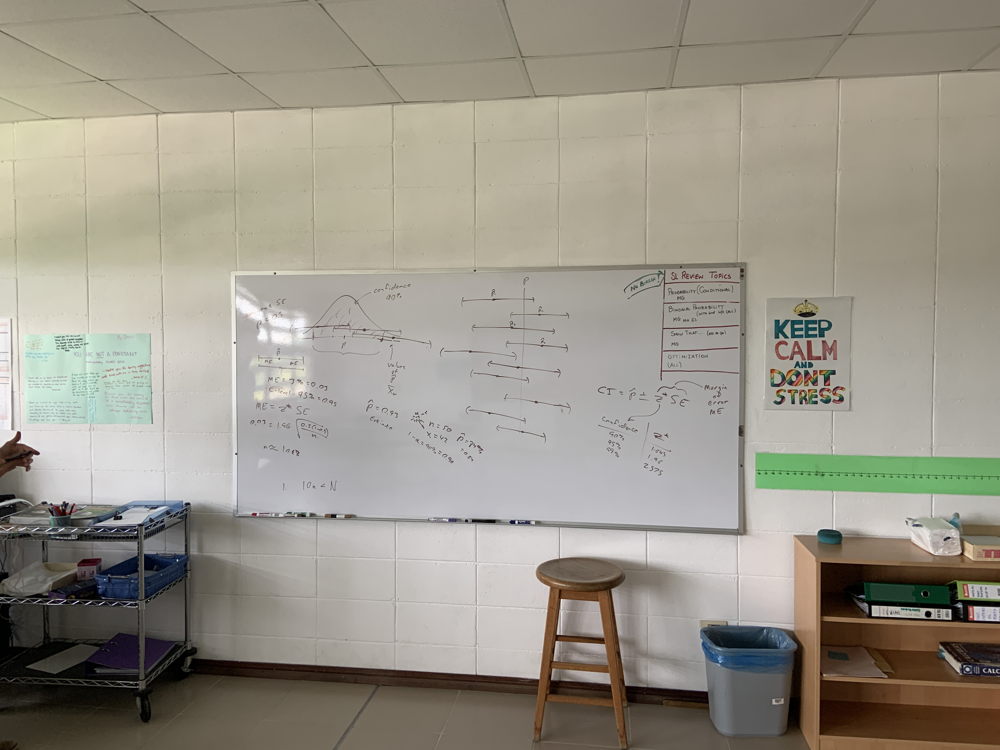
The explanation
Alex and Chad went to the class while Mr Zarsky was giving his lecture. They also asked Orrico some questions about the HL test. And then they went to the flex space to continue their work on the ToK essay.
Mili ordered Mc Donalds for Chad, Eitoku, Alex, and herself. Sofe and Turner also joined them and they started talking about arts, more specifically the SAAC Fine Arts Festival next year, which Eitoku might join.

Mc Donalds
Then timo joins them and he plays clash royale against Eitoku.
They talk about random things, at one point they start looking for Lupi.
At another point Amaral asks everyone about their ToK essay. Alex is doing prompt six, chad prompt 1, and sofe prompt 1.
Megan informs the TTG that Julia and her are friends again.
-
Date:16/12/2023-17/12/2023 at night
Climate:cloudy
Location:Alex's home, Chicken place, Mili's home
Eitoku and Fede call Mati, Alex, Chad, and others to go to this fried korean chicken place. After they eat there, they all go to Alex's house, where they play scuffed baseball and other ball related games. Mati also pushes Alex into the pool which was really funny and Eitoku posted that on instagram.
After that, Alex ate cereal with Milk for dinner, here is evidence for that.
.JPG)
.JPG)
Alex eating cereal with milk for Dinner
Mili's Juntada is today, Timo is the first to arrive, and then Fede. Fede is confused as to why Timo didn't come to Alex's house but he never got an invitation. Fede then says that he had told Eitoku to tell everybody else to go to the chicken place, thus Eitoku must have forgotten about him.
.JPG)
.JPG)
.JPG)
Mili's place where people did stuff
Fede and Mili decipher how to use Mili's climatised pool, and they put on some music. Mili also tells Fede about how she got really drunk yesterday and she showed him some pictures.
Fede goes in the pool, then Mati and Martina arrive. Then Fabri arrives. Then Alex and Lupi arrive with camisas and pretty formal clothes, then Chad and Luca arrive, and finally angie.
Before going to the pool, Chad, Lupi, Alex, Luca, and others play ping pong. But Luca, Timo, Fabri, and Angie didn't bring a swimsuit because they didn't know Mili had a pool.
So instead they play ping pong while talking about football. And then they start playing with a football ball. Zalma arrives in the middle of this. Lupi joins the football circle, Timo almost breaks every fragile object in the vecinity, and Alex then joins.
Then the pizza arrives, and it falls in the floor. Luckily there is more than one pizza.
They all sit down at a place with a table, meanwhile Alex, Chad, Mati, and Timo sit at some reposeras. They talk about stars, and how it's cloudy so they can't see them. Mati brings up that Chiara always talks to him about conspiracy theories, he mentions one about the CIA cutting peoples foreskins and selling them to rich people to prevent them from aging (What?).
They also talk about constelations, asteroids, shooting starts, satellites, and other things. Mati mentions how netherlands is full of people that do a lot of drugs.
Eventually they join the main group and they start to talk about universities. Fede is concerned that so many universities got his school email. Lupi gets no university emails. Alex gets a ton because he put his mail on the SAT.
Then Martina, Fede, Mati, Chad, Fede, and Mili go to the Jacuzzi
Luca overhears them talking about dicks, and thus they are intrigued. Apparently they were talking about how Martina didn't know what a foreskin was, then they start to talk about prostate exams, mati's CIA conspiracy theories, lice, and other not-pretty topics. Everyone who is in computer science starts to review for computer science, Alex and Timo look at each other in confusion as everyone else spits out computer science jargon.
Lupi has a discussion with Mili. Mili believes that Lupi is always bullying her for no reason. Lupi says that Mili shouldn't take his insults seriously, but Mili believes Lupi's insults are mean-spirited. Lupi argues the following
- It's not that serious
- Sometimes I am just very honest
And he gives an example where. If Mili cheats on a test and then she celebrates her good score then Lupi will obviously mock her or bother her in some way in some way since the test score is not genuine.
After that everyone starts leaving to their homes.
Fabri drives luca home, and they see Alex and Lupi on their way home, Alex looks very lost.
Alex and Lupi
Also, Megan tells the Table Tube Gang about her adventures in an abandoned water park, she sends pictures.
 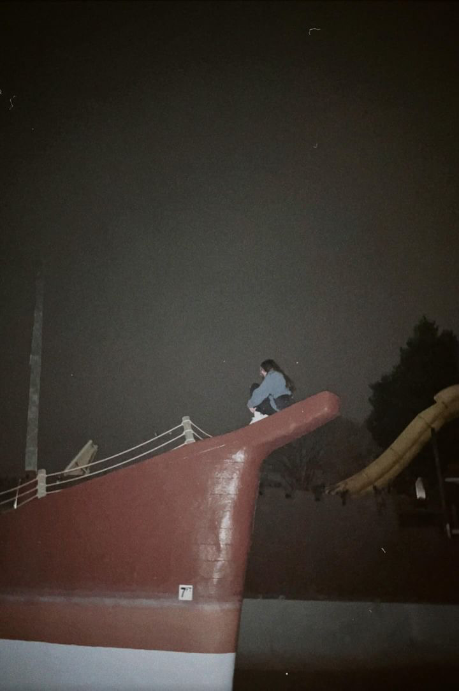
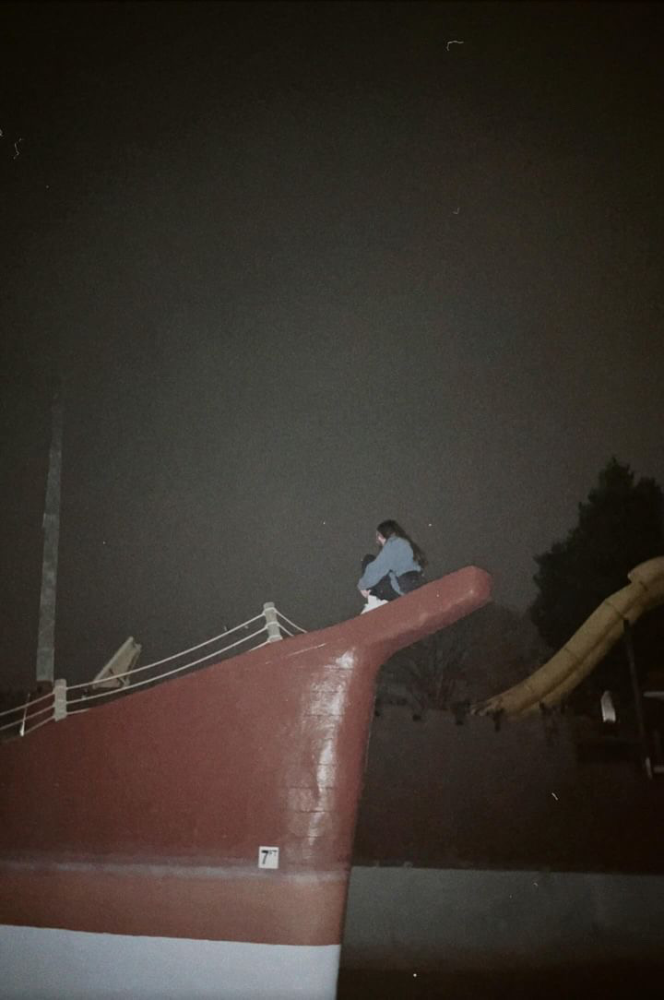

Water Adventures
-
Date:18/12/2023
Climate:Rainy
Location:Uruguayan American School, the house of Chiara, and the House of Santino
Everyone finishes their 3A and 4A exams, these are all the sciences, it's copmuter science, chemistry, physics, or biology. Lupi has already taken the chem test, and he left the country. Eitoku also left the country.
Physics test was pretty hard.
Some people had agreed to meet up at Fabri's house, but they changed it to Chiara's house because it was closer to everyone. So after the final final, everyone went to Chiara's house. At first they just talked about random things. Marina came to visit, and she saw Martina. Martina said Marina had gotten bigger than before.
They also talk about getting fake ID's for the party's of these vacations. Mati's fake ID doesn't reach the required age. Martina asked her mother to get her a fake ID. And the person that makes fake ID's isn't responding so she probably got jailed.
So people keep talking while eating the empanada's of fabrizzio. He brought empanadas, thanks Fabri the empanadas were really good..
Luca and Fabri play pool, and Luca scored the 8-ball too early.
Then Chad arrives and everyone goes to the pool. Mati races against Chad and Chiara. Mati won against chad and tied agaisnt chiara. But eventually everyone got cold, after all it was raining, they went inside and played pool. Everyone went inside except Timo Fabri and Luca who passed the football in the pool, they are the onces that didn't get cold.
But eventually they get bored and go inside. They decide to watch a movie called SuperBad, which has a lot of innapropiate scenes and innapropiate jokes. Chiara has the joke that her mom doesn't let her watch innapropiate movies.
So they watch that movie for a while until the internet starts acting up, everyone blames Chiara and she tries to fix it but she is kinda lost. Some people start to leave. The movie won't play, and everyone goes to Santino's house instead.
Chad has to go leave though, he sees his father's car on the way to Santino's house, but he fails to stop him. So then Chad arrives to Santino's house where his father was waiting him, and he leaves.
At Santino's house, they mostly played video games. First they played Fifa, Chiara really wanted to play fifa but no one would let her. The first match was Luca and San against Timo and Fabrizzio. It was a best of three that Fabrizzio's team won. After that, Chiara got to play. Then they started to play GTA, they did a variety of things. They tried to infiltrate the military base, and they went to the strip club.
They play games
Then Chiara tries to make fabri tell her his crush but she fails. She says that if Fabri tells her his crush then she will tell him hers, but Chiara is San's girlfriend at this point and everyone knows that so Fabri denies the deal.
After that, Santino ordered pizza. They all ate pizza, Fabrizzio asked to everyone if they were up for football 5 someday this week.
After that, Santino started to play roblox five nights at freddy's. At this point, Martina, Luca, Lucas, and others had left. It was getting late, and so everybody left ot their respective houses, except Fabri who stayed for a sleepover.
-
Date:19/12/2023
Climate:Sunny
Location:Uruguayan American School
The Math HL's -Alex take an exam because they are math HL and they like math too much. An old student comes to visit, this is the make up day, the last school day for students.
It was an incredibly touph year. The IAs started to become relevant. And Mr Amaral is getting really upset about deadlines regarding the IAs. He really wants everyone to finish their IB projects. So the academics were super hard.
For the social aspect, nothing really changed, the introduction of Guillermina wasn't really that noticeable. Chiara and San are also together now, and that is all I know about.
A